Annual Report of the Mysore Archaeological Department for the year 1942
Reading this page
p. 23 is the page number printed in the volume; PDF 391 is that page's place in the scanned PDF, the page to open in the source scan. The badge at the bottom right shows the page you are reading as you scroll: click it to show printed or PDF numbers, or both, and to jump to a page. ↑ Top takes you back to the start.
Footnotes are gathered at the end of the report, each with its printed page and number. Plates stand where the report binds them, at the end of the paragraph they interrupt; All plates, at the foot of the contents, shows them together.
Part I: Administrative
Staff; Tours Exploiation; Tours Excavation; Conservation; Epigraphy; Numismatics; Manuscripts; Museum; Library; Exhibition; Publications; Finances
Dr. M. H. Krishna, M.A, D LIT. (Lond.), continued as Director of Archæological Researches in addition to his duties as Professor of History in the University Mr R. Rama Rao, B.A, Assistant to the Director, went on leave for one month and 18 days During this period Mr. L. Narasımhachar, M.A, Technical Assistant, acted as Assistant to the Director and Mr R Chakravartı as Technical Assistant
The place of Architectural Assistant remained vacant this year also; proposals to fill up the post are, however, before Government.
Mr. S. Krishnaswamy Sastry, the senior Pandit of the Department, passed away on 26th February 1942. He had served in the department for 15 years. In his place Mr. M. Hanumantha Rao, M.A, has been appointed as Pandit on probation for one year
In connection with the study and inspection of the ancient monuments and sites in the State and for the collection of inscriptions, tours were undertaken in parts of the Mysore, Hassan, Bangalore and Chitaldrug districts by the Director and in parts of the
Tours: Exploration.
The Assistant to the Director toured in the Shimoga and Chitaldrug districts for the collection of inscriptions. For comparing with the originals and collecting the estampages of the Tamil and other inscriptions in connection with the printing of the supplementary volumes of the Epigraphia Carnatica for the Bangalore, Tumkur and Kolar districts, tours were undertaken by Mr R Chakravartı and the Tamil Pandit Mr Balasubrahmanyam, B.A, who was appointed temporarily for a period of six months from 1st September 1941
Interesting sculptures, some of them important iconographically, were discovered during the year at Pâlya in the Hâssan taluk, Hiremagalûr in the Chikmagalûr taluk, and Bramhasamudra in the Kadur taluk. The earliest monuments studied Twenty coins were acquired for the office Museum (For their details please see part IV of the Report). The Sātavāhana coins discovered
Numismatics. at the Chandravalli excavations were further studied A draft catalogue has been prepared and is being revised for publication. Several coins received from private parties were examined and returned
Two interesting manuscripts obtained for study are the “Kodagu dēśada janangala charitre” and the “History of the Kalale
Manuscripts. chiefs who were Dalvoys at the Mysore Royal Court.” The latter is reviewed in part V of the present Report
The acquisition of some coins has already been mentioned. About 66 ornamental
Museum metallic objects discovered during the year in the roof of the Prasanna Sōmēsvara temple at Sōmpura were obtained for display in the Office Museum
Library. About 36 new books were added to the Office Library.
In connection with the Mysore Session of the Indian Historical Records Commission, an exhibition of manuscripts, etc., was
Exhibition arranged at the Jaganmohan Palace, Mysore. The exhibition was well attended by visitors and the exhibits were much appreciated. The Director was the Local Secretary of the Records Commission and almost all the members of the staff worked in various capacities for the success of the session
The Annual Report for 1940 was published and that for 1941 printed and submitted. The work of publishing the supplementary
Publications. volumes to the Epigraphia Carnatica of Bangalore, Tumkū and Kōlār was pushed through. The texts and translations of the inscriptions in Shimoga and Kōlār were copied and sent to the press. Thus the texts and translations of all the inscriptions in the supplementary volumes have been either sent to the press or have been printed.
Volumes II, III and IV of the work on Architecture in Mysore which have already been written out are being made ready for the press. The Chandravalli excavation monograph work was also taken on hand. The antiquities were arranged according to dates and levels, and the catalogues were checked and prepared for publication. A catalogue of the coins has also been prepared and is being revised for publication
The receipts and expenditure of the Department under the budget heads amounted to Rs. 17,853-3-3 and Rs. 17,853-3-3 respectively
Finances A sum of Rs. 267-10-0 was realised by the sale of the departmental publications and photographs during the year
The success of the work of the Department was rendered possible by the sincere co-operation of the members of the office staff. during the year belong to about the 10th century A.D. At Āsandı in the Kadür district vigorously sculptured railings reminding us of Badamı and Ellora work were discovered. These railings belong in all probability to circa 900 A.D. In the village of Gaijı in the Kadür taluk there is a small İsvaia temple containing in its navaranga several pillars whose bases are carved with minutely worked but modestly ornamented figures of gods in the Chöla style like those met with at Hałe-Ālür in the Chāmarājanagai taluk.
Excavation work was conducted during the year at Brahmagırı near Siddāpür in the Molakālmuru taluk. The results have been very encouraging and confirm the conclusions arrived at during the previous excavations on the site. A noteworthy feature of this year's excavation at the place is that three coins—one of the Bıjapur days, another of the Chālukya period and the thud of about the early Sātavāhana period—were discovered during the course of digging. The discovery of the early Sātavāhana coin particularly is interesting since, in Brahmagırı, no coins had been found so far while digging. All the three coins help us in dating the levels and the antiquities. The work carried out this year may be said to be complete so far as it goes since we have been able to reach in one excavation virgin soil at a depth of sixteen feet below the surface. More information regarding the evolution of pottery and the neolithic and microlithic periods has been collected and more than 3,000 antiquities were unearthed and brought over to Mysore for study.
Notes of periodical inspection of the ancient monuments carried out during the year were submitted. In connection with the conservation of the Gömata colossus at Sravanabelgola the Special Committee met and experiments are being conducted. Estimates for repairs to the several ancient monuments in the State were, as usual, scrutinised and returned either with countersignature or for revision from time to time.
A statue of His late Highness Sri Krishnaraja Wadiyar IV is now being prepared at the Chamarajendra Technical Institute, Mysore, for being installed at the Chennakēsava temple, at Bēlür.
About a hundred inscriptions were collected during the year. Of these, four are copper plate records and the rest lithic ones. Among the copper plate records, three are of the Ganga period. Of the stone records, the earliest in date is an inscription of the time of the Rāshtrakūta king Gövinda Prabhūtavarsha. On the 'Yüpastambha' at Huemagalür an inscription of about the 10th century A.D. was discovered.
In connection with the Bangalore Supplement to the Epigraphia Carnatica, the texts of the Tamil inscriptions were compared, copied and forwarded to the press for being set in type.
Part II: Conservation
Mysore District
Sõmanäthapui
Pañchalingēšvara temple; Kēšava temple
PAŃCHALINGĒŠVARA TEMPLE
1 Only three of the original five towers of the temple are remaining at present. Even these are in a dilapidated condition. Unless steps are taken early to conserve them, they may collapse before long. They are intact on the west side; but on the east side they need general repairs, suitable stone props being given at necessary places to hold in position such of the stones as are in danger of coming down. The outer faces on the east side of the towers should then be plastered over so as to match the greyish granite out of which the temple is built. The facados should be onamented like the rest of the towers and the design in this respect may be obtained from the Government Architect.
2 The brick superstructures above the long mantapa may be removed and a new water-proof light concrete roof may be constructed.
3 The broken beams of the mantapa may be held in position by giving stone props shaped like the other pillars in the mantapa.
4 The flooring of the mantapa may be made even with the level of the stone of the ankanas in front of the shines and a cement flooring coloured to match granite stone may be provided.
5 The inscription stone may be set up in an upright position in the south-east corner of the temple. Perhaps it may be possible to discover its base by a little excavation in the spot where the inscription stone is lying.
6 The platform around the building may be levelled, its stone revetment and steps reset and the whole thing covered over with cement concrete as in the mantapa.
7 The five linga pedestals may be set up in their original places.
8 Size stone should be avoided as far as possible, during the renovation of the temple. It is desirable that only the original blocks should be used.
KĒŠAVA TEMPLE.
(I CLASS).
This temple was last inspected by the Director in 1932 and a conservation report was submitted. Subsequently rumour reached the Archæological Department that conservation work in the temple had been undertaken by the Public Works Department. The Director of Archæological Researches wrote to the Executive Engineer asking for full information about the renovation of this temple, if any. The Executive Engineer replied that no such renovation was being done
The temple was inspected by the Director on 15-7-1941 and it was learnt that renovation work has been going on for more than three years since which time a number of stone and brick masons have been employed permanently for carrying on renovation, the employees at present being Siddiah, stone mason, Chinnasami, cement mason, and Raju, his boy
A fundamental point noted in this connection is that these works appear to be carried out without any knowledge of the Archæological Department or any intimation thereto Government Order No D. 12944-57/Uni 25-29-4, dated the 22nd May 1930, requires that the approval and countersignature of the Archæological Department are necessary for any repairs to be done for any building mentioned in the list of Ancient Monuments The Sõmanāthapu temple is a Fust Class Monument and one of the most important architectural buildings in the State It is not clear under what circumstances the estimate for its repairs was approved without the Archæological Department being consulted in the matter
As for the work that is actually being done, a part of it is acceptable to the Archæological Department The white cement used for pointing the floor of the quadrangle is being substituted by coloured cement Wherever pointing is done it should not be visible or prominent. The sculptures inside and outside the temple are being cleaned of their soot coating. A rest-house for visitors is being constructed outside the north-west corner of the temple These items are welcome.
But there are some other items of work which are archæologically unsound. In the sculptured friezes of the temple the damaged and worn out portions have been removed by cutting them out Imitation sculptures made by untrained modern stone masons are being introduced in the cut out places This has often been called by scientific conservators archæological forgery This should be practised to an exceedingly limited extent to prevent danger to a building But when sculptures carved by people who do not know the elements of that art and who cannot differentiate between the forehead of an elephant and that of a mouse are accepted for insertion into an ancient building, the world of archæologists would condemn the action taken
The inner flooring of the temple had a little unevenness which is now attempted to be removed by a chiselling process which appears to be glauringly modern and absolutely out of place in the floor of the old temple
Something worse has been done about the sculptured images The sculptured images of gods which had been kept around the temple have been removed to new places and repaired in awful ways. Two of these have now been set up as dvārapālas for the new doorway with their damaged faces newly lifted and provided with platyrrhine noses, and holding symbols whose claims to their places are highly doubtful The chiselled slabs of the hall may be roughly planed so as not to appear jarringly as they do now, they should not be polished
The supply of electric lighting to the temple may be hastened
For the main cell, the Kēśava image of the Tumbadēvanahalli coffee estate near Arehalli of Bēlūr taluk may be brought and installed for worship and the temple may be thrown open to all classes of worshippers
Part II: ConservationHassan District
Pālya
Janāidana Temple
Since the main image of the temple is peculiar and goes back to about the 11th century A D, the monument may be preserved under class III. The temple is reported to have a sum of Rs 4,000 at its credit in the shape of State Loan bonds. Some minor repairs may be caused to be effected, particularly regarding the roof and flooring of the temple. The garbhagriha and some of the pākāra shrines are said to be leaky. The vegetation growing on the walls, the roof and in the surroundings may be cleared. The steps against the north wall of the temple may be removed so that the wall details may be opened to view. The ventilators in the central ankana of the temple require wine-netting. The shrine against the south outer wall of the navaranga may be removed since it does not belong to the original structure and is ugly
Part II: Conservation › Hassan DistrictHirekadalūi
Chennakēsava Temple
This is an ornate structure of the Hoysala period containing several finely carved architectural members. But it is very much dilapidated and cannot perhaps be repaired without very heavy cost. The surroundings are in a bad state owing to misuse by the villagers. The carved stones and pillars may, if necessary, be utilised elsewhere or preserved in a safe place. The Kēśava image which is at present lying in the navaranga of the Ēśvara temple may be removed to a place of worship or preserved without damage in a museum
Part II: Conservation › Hassan DistrictHarihaiapura
" Haiihaiēšvara Temple
No heading in the body: this section starts at its printed page (7-8).
HARIHARA TEMPLE
The images of all the three cells of the temple are now missing. It is reported that at least two of them were shipped to Denmark long ago. In the northern mche In the main garbhagriha, in the place of the lost Kēsava image, an entirely different form of Vishnu has been installed. Worst of all is an attempt to repair the broken flute of the Vēnugōpāla image. A new piece has been mounted by sinearing cement on the lower part of the beautiful face of Vēnugōpāla which is one of the finest pieces of sculpture in the Mysore State. Cultured visitors from distant lands who have seen these renovations could not help feeling that the Mysore authorities have been permitting repairs of a most unarchaeological character.
At a short distance around the temple a new source of danger has been observed. The maidan inside the fort, which had been partly under dry cultivation and partly a meadow, has been during the last four or five years converted into wet land and the water is no doubt percolating underneath the temple. This may be expected in course of time to soften the whole ground on which the temple stands and to lead to its collapse ultimately. Its due effects are already to be seen in the damage that can easily be observed in the outer prākāra wall of the temple, particularly on the north side. Wet cultivation in the fort area should be immediately stopped and, as soon as possible, this area should be converted into an open meadow from which rain water would be naturally drained off.
The Kēsava temple at Sōmanāthapur is a First Class Ancient Monument and deserves to be conserved and kept up in a very good condition.
The temple was again inspected on 24-3-1942. No subsequent communication in reply to the conservation note of the Director submitted during July 1941, was received from the P.W D. Thus the monument was reinspected. The Director was glad to note that the work of tampering with the sculptures has been stopped, though the ugly cuttings made in the sculptured friezes are yet remaining. But since then all work has been stopped except that of completing the T.B. The following pieces of work may be taken up and continued to completion —
1. Substituting the white cement pointing of the courtyard with coloured material.
2. The completion of the T B and the construction of the kitchen, etc, block
3. Mortal grouting the cracks in the outer walls all round and pointing
4. Preventing the leakages in the roofs
The worst piece of work done since the last inspection has been the removal of the flute of Vēnugōpāla in doing which has beautifully rounded chin has been chiselled away by untrained hands. The figure should not be touched any more without guidance from the Archaeological Department. The latter should supervise the proper treatment of the figure.
The cultivation of the lands inside the fort should be stopped at once, otherwise the temple may collapse in course of time. of the navaranga was enshrined a beautiful image of Lakshmī-Narasimha. As it was mutilated, the villagers have removed it to about a furlong away to the cast of the temple. The image is now lying uncared for under a tree. It is fully deserving of preservation in a museum. For the time being, it may be preserved in the navaranga of the temple.
The temple itself is almost intact and requires only some minor repairs. The vegetation growing above the structure may be cleared. The walls and ceilings require mortar pointing at several places. The flooring may be made over. The surroundings require to be kept neat and tidy, cultivation of the land in the immediate vicinity being prohibited.
Part II: Conservation › Hassan DistrictHeragu
Kīntināiāyana Temple
(II CLASS)
This temple has been recently renovated and a compound wall is being constructed. The institution has about Rs 400 at its credit, which may well be utilised for repairing the porch.
Part II: Conservation › Hassan DistrictMudigere
Yōgānaiasımha Temple
(Proposed for inclusion in the second class)
Though the temple is intact, it requires some minor repairs. The plants and trees growing near the outer walls should all be cut down and the circumambulatory passage cleaned of its dut. Whitewashing in any part of the temple should be forbadden and the thick coat of chunam on the walls, etc., should be slowly and carefully scaped off without damaging the stone.
Part II: Conservation › Hassan DistrictKōiavangala
Büchēsvara and other temples
The improvements suggested in respect of the Būchēsvara and other temples in the Mysore Archæological Report for 1933, have not yet been carried out. The suggested improvements are as follows —
1. The houses on the south of the Būchēsvara temple should be acquired and the compound extended, with a gateway from the cast or south-east leading directly from the road.
2. The railing stones of the temple which are lying about near the tank and elsewhere may be restored to their original position.
3 The village panchayet may be encouraged to lay out a park in the grounds between the Büchēsvara and the Nāgēsvara temples to the east of the tank and the cart-track connecting with the high road may be improved and made useful for cars
4. The pond to the north-east of the Gōvindēsvara temple which appears to be the only source for the supply of drinking water to the village, may be rebuilt with the old stones lying about
5 The sculptured pieces thrown about in various parts of the village may be collected and stored in the compound of the Büchēsvara temple.
Part II: Conservation › Hassan DistrictAnugavallı
Rāma Temple
This temple is sufficiently intact and not archæologically important, though old. It would be enough if the villagers are encouraged to maintain the institution in its present state
Part II: Conservation › Hassan DistrictHonnāvara
Kēsava Temple
(III CLASS).
This is an ancient monument of the third class, having some beautiful ceilings and figure sculptures. Though it is intact, it appears to be of late neglected so that vegetation has been growing on it in several places. The southern walls seem to be out of plumb here and there and require to be examined early and reset. It is said that the ceiling of the garbhagriha is leaky in one or two places. The leaky portions require to be properly pointed with mortar. The garbhagriha doorway which is a well-carved piece should be cleaned of its thick coat of chunam slowly and carefully. The stones of the walls require mortar-pointing here and there
Part II: Conservation › Hassan DistrictAdagür
Temples near the tank of the village
It is impossible to conserve these temples without very heavy cost, since they are much dilapidated. The surrounding jungle growth may, however, be cut down and the temples preserved from further destruction
Lakshmināiāyana Temple
The temple is sufficiently intact but requires to be made neat and tidy so far as its surroundings are concerned. At the time of inspection the circumambulatory passage outside had been overgrown with vegetation. The passage requires to be
2 mal even and cement-pointed. A compound wall may perhaps be constructed when land-permit and the surrounding ground may be levelled properly.
Part II: Conservation › Hassan DistrictGönisömēnahallı
Şıva Temple
The Siva temple at this village is a small structure of no architectural merit. But inside its navaianga there are three exquisitely carved images which deserve to be protected. For the sake of these images it is recommended that the villagers may be encouraged to preserve the temple by executing some minor repairs. Some slabs of the walls which are out of plumb may be reset and the roof made water-proof. The flooring requires to be made even. A wooden door for the navaianga seems to be necessary. The archak may be encouraged to take care of the images.
Part II: Conservation › Hassan DistrictHalebid
Vırabhadıa Temple; Other monuments
VIRABHADRA TEMPLE
(II CLASS)
Though the Vñabhadia temple is intact, its surroundings need to be cleared of vegetation and made neat and tidy. On the roof of the mukhamantapa a pipul plant is growing. It should be cut down immediately. The outer walls seem to be bulging outwards in one or two places on the south and north. They may be examined. The pond immediately to the south-east of the temple may either be railed off for protection or, better still, filled up since it is not serving any useful purpose. The wall sculptures are being damaged by mischief-mongers. They may be prevented from doing so by the setting up of an Ancient Monument board. The ground around the basement of the temple may be excavated so that the basement details may be opened to view.
OTHER MONUMENTS
It is of course necessary to reserve the palace site for future excavation by the department. But in the meanwhile it is desirable to include the site in the list of Ancient Monuments. It may be declared 'Protected' and put under Class III.
A few yards from the T B there are five mounds which mark the sites of five ornate structures of the Hoysala period. From the details of the basement friezes depicting mythological stones, etc., and the exquisitely carved sculptures representing Lakshinīnārāyana and other gods, it is gathered that the temples, though small in size, were yet as beautiful as the Kēdārēsvara and Hoysalēsvāiā temples at the place. It seems desirable that these sculptures and friezes should be preserved and no longer be allowed to be neglected and mutilated.
(1) It is therefore suggested that the mounds may be included in the list of protected Ancient Monuments of Class III and, by degrees, be cleared so that the friezes may be laid bare to view
(2) The sculptures may be set up within the area in an upright position.
(3) The vegetation around may be cut down and the premises made neat and tidy.
(4) If possible, the entire group of these temples may be enclosed in a compound which may be secured by a lockable gateway
(5) An approach road from the T B may also be made since the spot is very near the T.B.
For the time being, it may not be possible to find funds for all these items. The work may be spread over a few years and each year one of the mounds may be cleared and the sculptures, etc, preserved. The cost on this account may not come to more than Rs 300 for each mound. But it is very necessary that an Archæological officer should be present during the execution of the work
Part II: ConservationKadur District
Hiremagaülr
Ködandarāma Temple
The Kōdandarāma temple is a major Muzrai institution and is well kept. But the outer walls of the garbhagriha and sukhanāsī are a little out of plumb in a few places. On the west just below the eaves a crack has sprung up owing perhaps to the heavy weight above. It may be considered if the weight cannot be lessened. The joints of the wall slabs require mortar pointing. There are two rooms on either side of the sukhanāsī inside the temple. To let in more light, the ceiling may be opened and ventilators provided. Immediate attention is however necessary in the case of the west outer wall of the garbhagriha since it is in danger of collapsing. The roof of the rangamantapa is reported to be leaky in several places. This may be looked into.
Part II: Conservation › Kadur DistrictBrahmasamudra
Nāiāyana Temple
The Nārāyana temple at Brahmasamudra is intact. But of late it is much neglected and the surroundings require to be made neat and tidy. The dvārapāla figures in front of a house to the south of the village deserve to be preserved in a museum.
Part II: Conservation › Kadur DistrictTangalı
İsvara Temple
The Îsvara temple is the oldest monument in the village and hails from about the 12th century. Though it is not an ornate structure, the villagers may be encouraged to effect some minor repairs to the temple. The leaky portions of the roof may be caused to be repaired and the surroundings of the temple cleared of debris and vegetation.
Macheri
Part II: Conservation › Kadur DistrictMachêlı
Yögânarasımha Temple
In such an insignificant place as Macheri which consists of just seven or eight houses there exists an architectural monument, that is the Yògà-Narasimha temple, which is about a thousand years old and as such worthy of preservation from further destruction. The original structure consisting of the garbhagriha and its front mantapa is however intact, though the outer walls of the garbhagriha have disappeared. These outer walls may be rebuilt and worship restored, if possible, since the main image of Narasimha is well preserved excepting only for a small cut in the left hand which may be filled up with suitably coloured wax. The front kaisãle which is beyond repairs may be dismantled and the front mukhamantapa opened out. The flooring of the mantapa and garbhagriha may also be improved.
Part II: Conservation › Kadur DistrictYellambalası
Kêsava Temple
Since the sculptures inside this temple are all good works of art and since the temple is a muzrai institution, some initial repairs may be effected. Some of the collapsed and out-of-plumb slabs of the walls require to be reset. General repairs seem necessary in the case of the ceilings and surroundings of the temple.
Garji
Part II: Conservation › Kadur DistrictGarı
Isvara Temple
An extra-ordinary interest attaches to the relievo sculptures on the navaranga pillars of the temple. In their general features the sculptures resemble those at Hale-Âlûr in the Chãmarãjanagar taluk of the Mysore district and may well be attributed to the Chõla times typologically. It is therefore recommended that the temple may be included in class III of the conservation list and the villagers may be encouraged to put up a compound wall. Whitewashing in the interior of the temple should be strictly forbidden and the existing coating of chunam. on the walls and pillars should be slowly and carefully scraped off without damage to the stones.
Part II: Conservation › Kadur DistrictYagatı
Vîranâîâyana Temple
The villageis are keen on the repaus of the Vīranārāyana temple which hails from about the 14th century A D. With the co-operation of the villagers and some contribution from them, it might be possible to restore the temple and preserve it from further destruction. The slabs of the outer walls are out of plumb in many places and the roof is leaky throughout the navaranga. These require immediate attention.
Part II: Conservation › Kadur DistrictMudîgere
Isvala Temple
The image of Bhairava in this temple is a good Hoysala piece. Since, however, it is mutilated, it is not being worshipped. Perhaps in due course it may be removed to a museum. Cooking inside the temple should strictly be forbidden. At the time of inspection the premises had been occupied by a barber who was using the navaranga of the temple as his kitchen and dwelling place.
The temple is worthy of being declared as a muziai institution and being restored, as far as possible, for the sake of the well-carved sculptures inside it.
Part II: Conservation › Kadur DistrictÂsandı
Gangêsvara and Brahmêsvaia temples; Vîrabhadra Temple
GANGĒŠVARA AND BRAHMĒŠVARA TEMPLES
These temples are structures of the twelfth century having graceful appearance and are almost intact. A few minor repairs to the outer walls here and there and coloured mortar-pointing in a few places in the roof is all that is necessary for the time being.
VĪRABHADRA TEMPLE
This temple is a good monument deserving of preservation in the second class. The railings in front of the porch of the temple are unique specimens in the Mysore State assignable to circa 900 A D. They should at all costs be protected from damage. The temple itself is intact, but there is so much of white-washing on the outer walls and inside the temple that all sculptural details have become quite hidden. The thick coat of chunam should slowly and carefully be scraped off without damage to the stones.
Amritâpura
Amritêsvaia Temple
(FIRST CLASS)
The Amritēsvara temple at Amritāpura is a first class ancient monument. Several conservation proposals have been made in the past by the department, but none of them has been given effect to. Owing to the extraordinary interest attached to the ceilings and wall details of the temple, it is highly desirable that early steps should be taken to conserve the monument properly.
The slabs of the eaves of the mukhamantapa have collapsed in a few places and agly props have been given at the corners to support the eaves. The fallen slabs may be replaced and the eaves generally repaired so as to do away with the props, if possible. It is reported that in a few places in the garbhagriha, sukhanāsī and the navaranga the roof is leaky. Some of the beams of the mukhamantapa have developed cracks, they may be held in position by suitable means. The introduction of 'L' shaped iron bands may be considered. The tower above the garbhagriha has developed a wide crack near the kalaśa. It may be examined and pointed with mortar suitably coloured. The sculptual details of the tower are covered by plaster which may be slowly and carefully removed without damage to the stone. A store room may be provided in the temple premises for storing the things belonging to the temple. At present they are stored in the navaranga, which is not advisable. It may be considered if it is not possible to repair the Virabhadra shrine to the south of the temple and convert it into a store room. The larger trees growing in the temple compound should all be cut down. The flooring inside the prākāra may be paved with available stones. The compound wall of the temple requires general repairs.
Part II: Conservation › Kadur DistrictShingâpura
Yögânarasımhasvâmı temple
Shingapura is a 'bechirak' village situated near Sōmpura. A new hamlet has sprung up at a distance of about a mile to the south-east of the temple. But none of the inhabitants of this new hamlet seems interested in the temple. During the rainy season the floods of the river Tungā which flows just behind the temple rise high, and water is reported to stagnate within the temple to a depth of about three feet. Thus there appears to be no use in recommending the restoration of the temple.
The images of Yōgānarasīmha and Ugranarasīmha, however, are good works of about the fourteenth century. The temple itself is not ornamental, though it is surmounted by a stone bulbose dome over a square-shaped stepped pyramidal tower.
The porch and the mukhamantapa have completely disappeared. The mahādvāra is runed and the outer walls of the temple are overgrown with vegetation, etc. It would cost nothing less than Rs 5,000 to repair the temple.
Since the villagers of Sōmpura are not also interested in the monument, the images may in due course be removed either to a museum or to some other temple elsewhere. The neighbouring villagers do not want them
Part II: ConservationShimoga District
Chennagırı
Hill foit; Kêtêsvaia temple
No heading in the body: this section starts at its printed page (15).
CHENNAGIRI—HILL FORT (III CLASS)
The hill fort at Chennagiri is a third class ancient monument. Some repairs have been effected near the entrance and the growth of lantana and grass has been checked by recent burning. But there are many trees and plants growing right on the fort walls themselves which have rendered the slabs out of plumb. These trees require to be cut down early.
KĒTĒSVARA TEMPLE.
None of the conservation measures recommended in M.A.R. 1937, page 55, has been given effect to with regard to this monument. The temple is a neat small structure deserving of being preserved from further run. It will not cost much to remove the vegetation growing on the roof. The joints of the wall slabs may be pointed with coloured mortar and the collapsed slabs on the northern side of the temple may be replaced. The roof requires to be made water-proof. The villagers may be encouraged to effect these minor repairs, since the temple is not included in the list of Ancient Monuments.
Repairs and Maintenance of Monuments
(BASED ON THE REPORTS OF THE REVENUE SUB-DIVISION OFFICERS).
The annual reports in connection with the repairs and maintenance of the Ancient Monuments in the State have been received only from Tumkur, Kadur and Hassan districts. The Sub-Division Officers of the other districts have not so far forwarded their reports so that they could not be included here.
Tumkûr District
GUBBI SUB-DIVISION.
TURUVEKERE TALUK.
The Chennakēsava temple at Tandaga and the Kallēsvara temple at Hulikal are both stated to be in good condition. The Nandi in front of Gangādharēsvara, the Chennigarāya temple and the Śankarēsvara temple at Turuvekere are also stated to be in good condition. The Chennakēsava temple at Nāgalāpura is reported to be in need of repairs. The Kēdārēsvara temple at the place is reported to be in good condition.
CHIKKANAYAKANAHALLI TALUK
The Yōgamādhava temple at Šettikere and the Mallēsvara temple at Huliyār are both stated to be in good condition
TIPTUR TALUK
The Chennigarāya temple at Aralaguppe is in a good state. But some of the pillars and wall slabs of the Narasimha temple at Vighnasante are said to be bulging out and requiring repairs.
MADHUGIRI SUB-DIVISION
SIRA TALUK
The Jumma Masjid at Sira which is a first class Ancient Monument is reported to be clean and tidy. The appointment of a sweeper and the supply of lift pumps for the well are recommended by the Sub-Division Officer
The main building of the Mallik Ruhan Darga at Sira which is also a first class Ancient Monument is reported to be in good condition. But its compound wall is stated to be needing repairs. A sum of Rs. 363 was sanctioned by Government for repairs. But as yet no repairs have been executed. Some monthly grants for the dipārādhane are recommended, since the five brothers who look after the institution by turns are stated to be not getting any remuneration except the small income derived from a private endowment consisting of two acres of wet land at Objagunte
TUMKUR SUB-DIVISION
The Lakshmīnarasimhasvāmi temple at Dēvarāyanadurga, which is a major muzrai institution and a second class ancient monument, is stated to be fairly well preserved. But for want of stone pavement all round, grass is said to be growing. Instructions are said to have been issued for the removal of the grass. The door at the entrance to the garbhagriha is stated to be in need of repairs. The temple has a sum of Rs 3,594-7-10 at its credit and the temple authorities are said to have been given instructions to attend to the items of repairs.
The Chennigarāya temple at Kaidāla, which is a second class ancient monument and has a sum of Rs. 1,368-15-11 at its credit, is said to be fairly well maintained so far as the inner portion is concerned. The outer gōpura is stated to be in urgent need of repairs since it may gradually collapse if neglected. The work, however, is said to be very costly. The Sub-Division Officer recommends that the gōpura deserves to be preserved in good condition.
Hâssan District
HASSAN SUB-DIVISION
The monuments at Hāssan, Arasikere, Hārnahalli, Jāvagal, Nuggihalli, Jinanāthapura, Śravanabelagola and Hołenarasipur have been inspected by the Sub-Division Officer.
Kadûr District
TARIKERE SUB-DIVISION.
The Amritēśvara temple at Amritāpura was inspected by the Sub-Division Officer and the Amildar of Tarikere. No improvements by way of repairs are stated to have been effected and the question of the construction of the compound wall is said to be under correspondence
CHIKMAGALUR SUB-DIVISION.
The Yūpastambha at Hiremagalūr, the Vīranārāyana temple at Belavādī and the Chennakēśava and Siddhēśvara temples at Marle, are all reported to be in good condition. The roof of the Mārkandēsvara temple at Khāndya is stated to be leaky.
MUDIGERE TALUK
The Jain Bastis at Angadī, the Kēśava statue in the ruined temple at the same place and the Kalasēśvara temple at Kalasa are all stated to be in good state of preservation
Part III: Study of Monuments and Ancient Sites
Mysore District
Sömanâthapuı
Pañchalingêsvara Temple
History and general description; Outer view
On page 39 of the Annual Report of this department for 1932, a short note on the Pañchalingēśvara temple at Sōmanāthapur has been published. The temple was constructed by Sōmanātha Dandanāyaka just before 1268 A. D and consists of five shrines which stand in a row facing east and having a long three-aisled verandah in front. Thus it is an example of a quintuple structure of the Hoysala period.
History and general description
The outer walls are raised on cubical and biscuit-shaped basement cornices and are relieved by right-angled pilasters at intervals having between them, rhomboidal flowers and padmas in low relief.
Outer view.
In the middle of the walls runs an eaves-shaped cornice ornamented, here and there, by rudely-shaped kirtimukhas in relief.
The three towers that are existing at present are all uniformly shaped, being square at first, then rising in four tiers of turiets and having cornices with dentil, kirtimukha and other mouldings which are all unworked.
The pillars of the verandah are mostly cylindrical, having cubical bases. The ceilings rise on two sets of corner stones and have padmas in the centre.
Each shrine has its own vestibule with a plain doorway
Part III: Study of Monuments and Ancient Sites › Mysore DistrictBilikere
Hanumân Temple
History; The cells
In the village of Biļikere close by the road side is a tiled building behind which stands a stone built temple evidently constructed in about 1842 A. D. It consists of a small hall with two stone pillars of the ordinary cubical Dravidian type bearing Kannada inscriptions of 1842 A. D (Šaka year Sobhakritu).
The north pillar bears a relievo group of Šrīnivāsa dāsa and his wife, the āsa wearing a turban. The south pillar has a relievo group of Subbarāya dāsa and his wife, the dāsa wearing a dome-shaped cap and holding a tambūra.
At the back of the building, there are three cells of which the central one contains an image of Hanumān, about three feet high, in the striking attitude (Pl II, 1). The grinning mouth and lifted hand of the god are highly expressive. On the top of the tōiana is a small image of Šrīnivāsa called Jaya-Venkatēśa.
The cells In the north cell is a stone brindāvana, about four feet high, of fine workmanship (Pl. II, 2). It stands on a Kūrma-pītha. On the lower tier is seated Subbarāya dāsa in padmāsana as a sanyāsī with japamālā and danda . Just above him is Krishna with lifted hand. Further up is Krishna seated. On the top also is Krishna dancing (Navanīta-nritta) under Ananta's seven hoods and standing on his body.
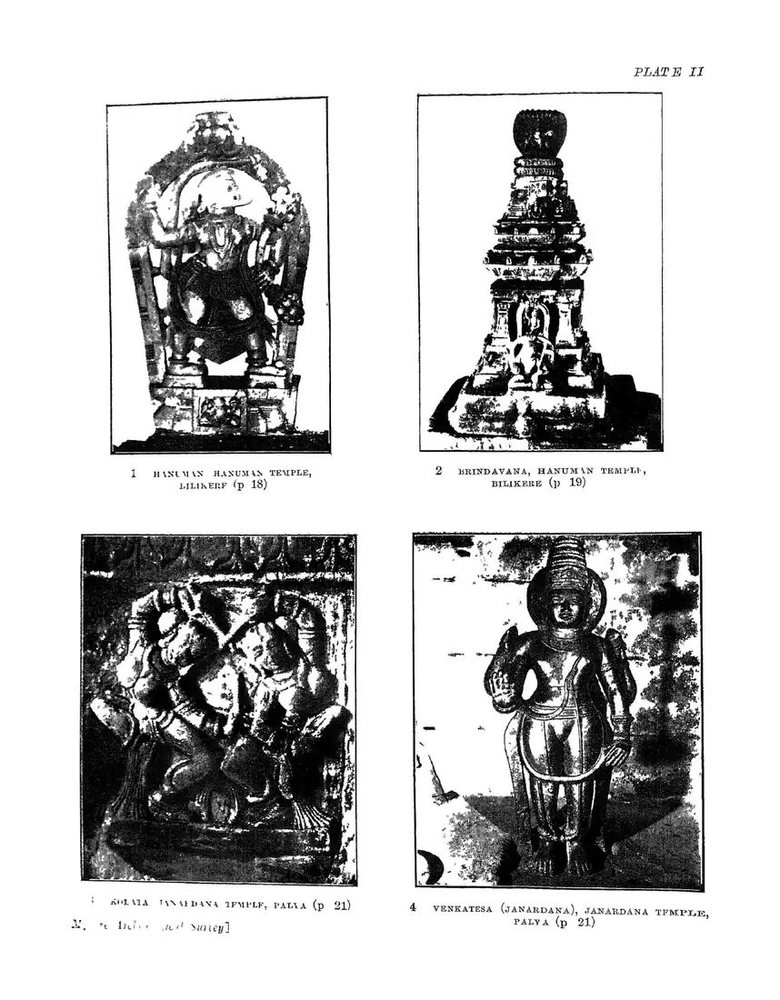
- 1 HANUMAN HANUMAN TEMPLE BILIKERF (p 18) 2 BRINDAVANA, HANUMAN TEMPLE BILIKERE (p 19) 1 KOLYA JANARDANA TEMPLE, PALYA (p 21) M. re Incl. "ref" survey] 4 VENKATESA (JANARDANA), JANARDANA TEMPLE PALYA (p 21)
Cited in the text: p. 19 ↩
Part III: Study of Monuments and Ancient SitesHassan District
Pâlya
Antiquity
No heading in the body: this section starts at its printed page (19).
A traditional account of the place and a brief description of the temples are contained in the Annual Report of this department for 1926, pp. 1-2. If, as is possible, the peculiar form of the image of Janārdana is ascribable to about the 11th century A D., the village seems to be of great antiquity, though no inscription in the village would warrant such a presumption. During the 17th century, however, there was a local Pāleyagār governing the neighbourhood from his seat at Mahārājanadurga which is just at a distance of about eight miles to the south-west of the place. The Pāleyagār is said to have had his treasury here and to have fortified the place with a fort wall all round and a moat outside. All these are now in ruins and overgrown with lantana.
Janârdana temple
History; Outer View; Mukhamantapa; Porch; Navaranga; Vestibule; Main image
Architecturally the structure appears to belong to more than two periods. The garbhagrīha, vestibule and navaranga with an one-ankana porch in front seems to have formed the original structure which was perhaps constructed during the early part of the 14th century. To this period must also be ascribed the mahādvāra which has certain architectural similarities with the original structure, particularly in the wall pilasters and the imitation ribbed brackets. At some distance to the east of the above-mentioned one-ankana porch, there appears to have stood an open mantapa with a jagah all round and entrances on all the four sides. Perhaps during the Pāleyagār period the west entrance was removed and the space between the porch and mantapa was covered up and the north and south walls were constructed. This explains the unduly long hall of the present navaranga. Evidently during the same Pāleyagār period the prākāra walls and the minor shrines in the prākāra also were built.
The outer view of the original structure consisting, as above said, of the garbhagriha, vestibule and navaranga, is plain. The walls are relieved by long, thin and right-angled pilasters having the imitation ribbed brackets of about the 14th century.
Outer view. Among the figure sculptures appearing on the outer walls, mention may be made of the following :—
South wall of vestibule —
1. Kesava with two consorts and bhakta to the right having his hands joined above his head.
2 Two rearing lions standing back to back.
3 A four-petalled padma inset in a square.
South wall of garbhagriha —
Above the niche is a simhalalāta under which is a dancing figure
West wall of garbhagriha —
Simlar niche with a figure of Vēnugōpāla above it standing under a simhalalāta.
North wall of garbhagriha —
Simlar niche with a simhalatāta above under which is a dancing female
North wall of navaranga —
Simlar niche in the middle with a simhalalāta above under which is seated Yōgānarasīmha. In a panel to the east is sculptured the Yamalārjunīya episode of the Bhāgavata.
On the north outer wall of the compartment between the mukhamantapa and the navaranga is sculptured the figure of a woman in an obscene attitude.
The eaves of the gaibhagriha, vestibule and navaranga are sharp and relieved at intervals by kīrtimukhas. There is no tower above the garbhagriha. The eaves of the front mukhamantapa are long and sloping as in the Keladī type of temples. The three entrances of the mukhamantapa have each a flight of steps supported on either side by yāhī railings.
To the right of the eastern doorway of the mukhamantapa is a panel depicting the episode of Rāma killing the māyāmuga. The head of the māyāmriga is severed and from the body of the deer issues forth the demon Mārīcha. To the left of the māyāmriga is the figure of a bearded hermit holding a staff in his right hand. Perhaps this represents Rāvana who is known to have appeared before Sītā disguised as a hermit. But the figure of Sītā is not carved in the panel.
The central four pillars of the mukhamantapa are all worked in the same style. They have each a square base and a cylindrical shaft having at its bottom octagonal, sixteen-sided and circular bands which are ornamented with floral, peacock, medallion and garland designs. The capitals of these pillars have the floral and tongue ornamentations Just below the bracket, the shaft has a drum band whose outer face has been carved with floral and beaded hangings On a facade of the base of the south-east pillar is carved in high relief a dancing group consisting of two ladies playing 'kōlāta' (Pl II, 3)
The central ceiling of the mukhamantapa is raised on two sets of corner stones and has in the middle a padma pendant inset in a square band having minutely worked scroll ornamentation.
The two front pillars of the original porch in front of the navaranga are similar in character to the pillars of the mukhamantapa But their capitals are different having the imitation ribbed moulding of about the 14th century The ceiling of this porch has a boldly carved padma inset in an ornamental square.
Porch. The two dvārapāla figures on either side of the navaranga doorway seem to belong to about the 17th century A certain Ranganna is stated in an inscription on a pavement slab to have installed them. To the right of the navaranga doorway is depicted on the wall the figure of Vyāghrapāda in the attitude of worshipping the linga. To the left of the doorway are the figures of Garuda and Hanumān on either side of a fruit, both in the striking attitude The navaranga doorway is plain having no figure sculpture either on the jambs or on the lintel
The four pillars in the central square of the navaranga have each a square base and a cylindrical shaft with brackets of the imitation ribbed pattern At the bottom of the shaft are carved the eight-sided, sixteen-sided and circular bands
Vestibule On the architrave above the vestibule doorway is a well-carved Garuda To the right of the doorway is a bearded drummer on a pilaster and to the left is a Yaksha on another pilaster
The main image inside the garbhagrīha is a peculiar form of Vishnu, resembling Venkatēsa, though called Janārdana in the inscriptions Main image (Pl II, 4) The god is about 5 feet high and stands in samabhanga with abhaya, prayōga-chakra, śankha and katihasta There is no pedestal The god wears jatāma-kuta, makara-kundalas, yajñōpavīta, mauñjī, kaupīna, gracefully flowing ghantas, armlets, wristlets, anklets and necklaces Except for the kaupīna, the image is nude. Behind the head of the god is a nimbus The god wears a happy smile The facial expression is akin to the one met with in the image of Harihara at Harihar. There is no prabhāvali behind the god and the proportions are dwarfish. The form thus depicted is said to represent all the Tīmurtis, jatā indicating Śiva, ghantā indicating Brahma and conch and discus Vishnu The dhyāna-slōka in respect of the image runs as follows — pingachchāya jatādharam kati-tatīr-mauñjīdharam ghantayā! rājam tam makarārdha-kundala-dharam bibhrānam-Indrārchitam || kaupīnam bhujagōpavīta ruchiram śankhābja-chakrānkitam | nityam Sādhu Janārdanam śubhakaram vande Trimūrtyātmakam ||
In style the image seems to belong to the 11th century. Whether there may have been an older temple for the god is a point for future investigation. The present structure, however, is of about the 14th century A D
The metallic group of images in the temple consists of Janārdana—same in form as the main image—and his two consorts
In a prākāra cell to the south of the temple are enshrined the Ālvārs and Āchāryas and a Lakshmī-Nārāyana group under a seven-hooded Ādiśēsha. In the south-western part of the prākāra stands the shrine of the goddess enshrining a rude image of the Pālleyagār period. In a room on the right jagali is installed a rude image of Vēnugōpāla which appears to belong to the 18th century
Images in pâkâra
Rāmešvaia Temple
Tīpurāntakēsvara Temple; Jain Bastī
The Rāmēśvara temple is situated at a little distance to the north-west of the Janārdana temple. The present structure appears to belong to the 19th century, though the Rāmēsvara linga in the main cell may perhaps be older. It consists of the main cell with an oblong mantapa in front. In the latter are found an image of Ganapati and a Hanumān relievo in the striking attitude
TRIPURĀNTAKĒŠVARA TEMPLE
This temple is a present day country house of tiles, but enshrines a few 17th century sculptures like a Ganēśa, a bull, a linga and some nāga stones. The linga is called Tripuāntakēśvara.
JAIN BASTI.
To the south-east of the village there is a mound where a Jain Basti is said to have been standing. Some of the architectural members belonging to the building, like the capitals, pillars, beams, etc., are lying amidst a thick growth of lantana. These indicate that the Basti was built some time during the late Vijayanagar period.
Part III: Study of Monuments and Ancient Sites › Hassan DistrictHirekadalūr
Situation
This is a small village near Dudda, a railway station on the Hassan-Arsikere line. The older name of the place is Kadalūr. The place was also called Aradattipura, probably a corruption of 'Arundhatīpura.' During the 12th century A D there
Situation.
appear to have been existing two temples at the place, one dedicated to Padmanābha or Ranganātha and the other to Chennakēsava
Īsvaia Temple
General Description; Kēšava
The Padmanābha temple is no longer in existence. Many of the architectural members belonging to it are said to have been utilised about twenty years ago in building the İsvara temple, the interior view of which at present is Hoysala in character, particularly in the doorways and pillars and the central ceiling of the navaranga. The pillars are of the characteristic bell-shaped lathe-turned type. On two of the beams of the navaranga are inscribed portions of the inscription Hassan 82 which is dated in the year Rudhirödgāri and records a grant to Padmanābha and Chennakēsava.
Inside the navaranga of the temple is lying an old image of Chennakēsava of the Hoysala period. The image is about 5' high including its tōrana. The tōrana has been gracefully carved with pleasing details of the kīrtimukha, floral and garland designs and with the daśāvatāra representations on the prabhāvali. The god stands in samabhanga and wears the usual ornaments and attributes. But the gadā in the left lower hand is a recent substitute for the older one which is missing. The caste mark on the forhead seems to have been carved recently. The image is said to have been brought over from the neglected Chennakēsava temple which stands in a ruined condition to the west of the village.
Kesava
Chennakēsava Temple
Outer view
Navaranga; Main cell
No heading in the body: this section starts at its printed page (23).
In its outer appearance the Chennakēsava temple presents a striking similarity to the Narasimha temple at Grāma. The outer walls are raised on a basement consisting of three cornices, the first two of which from the bottom bear uncarved dentil and cross-shaped mouldings. The walls are relieved by thin right-angled pilasters uniformly all round. In the middle of the south and north walls of the navaranga, large lotuses have been represented in relief.
The temple consists of a garbhagriha, a sukhanāsī, a porch and an open mukhamantapa. The tower above the garbhagriha rises in the form of a stepped pyramid whose several cornices have dentil mouldings at intervals. The stone kalaśa on the top of the tower is broken. The eaves are a little sloping with upward dentil mouldings at the corners.
The pillars of the mukhamantapa are all bell-shaped and lathe-turned. The ceiling of the porch consists of four concentric circles with a disappeared pendant in the middle. On the front faces of the corner stones are represented the eight Dikpālakas and the figures of marching musicians and dancers.
The navaranga doorway is supported by a well-carved Dvārapāla group. On the jambs of the doorway are found the usual scroll and padma ornamentations. The pilasters on either side are of the indented pattern. A well-carved Gaja-Lakshmi decorates the lintel stone. Inside the navaranga the four pillars of the central square are fine specimens of the bell-shaped kind with the padma, kirtimukha, scroll and floral designs and minutely carved beaded hangings on their several bands. All the ceilings of the navaranga are beautifully carved with floral and figure sculptures and with medallions appearing on the flat stones in the middle. The central ceiling, however, seems to have been half-worked. A lotus pendant hangs from the middle of the central ceiling.
The doorways of the vestibule and garbhagriha are not as elaborately carved as the navaranga doorway. The main image of the temple, as mentioned above, has been removed to the navaranga of the Āśvara temple in the village.
Part III: Study of Monuments and Ancient Sites › Hassan DistrictChikka Kadalūr
Kallēsvaia Temple
Antiquity; General Description
From the inscription No 85, Hāssan Taluk, it is learnt that the old name of the place was Gōvindapura. During the time of Harihara II, the Vijayanagar king, the place was called Kadalūr and Hariharapura.
About a mile to the north of the village and at the eastern end of a tank is situated the Kallēśvara temple which, according to the inscription mentioned above, was constructed in 1156 A.D.
The temple is now covered over by an earthen mound mostly. But on the south and west, the outer walls are visible to some extent. The wall pilasters are thin and right-angled. The tower and the parapet are both missing.
The navaranga doorway is plain. Inside the hall the pillars and ceilings are all rude. Only the central ceiling has a rudely carved padma. Against the walls of the navaranga are placed small sculptures representing Bhairava, Sūrya-Nārāyana, nāga stones, etc. These are also rudely worked.
The vestibule doorway is plain except for the two right-angled pilasters on either side of it and an eaves-shaped cornice ornamented with dentil mouldings above the lintel. Inside the sukhanāsī there is a small rude bull which, like the sculptures in the navaranga, seems to belong to about the 17th century. The ceiling of the sukhanāsī is raised on two sets of corner stones and has a padma pendant in the middle inset in a śrīchakra. The ceiling of the garbhagriha is also raised on two sets of corner stones with a low padma pendant in the middle.
The inga inside the garbhagriha is small, being only about a foot and a half in height
Nāiāyana Temple
Inside the village there is a modern temple constructed about four years ago on the site of an old temple of the Hoysala period and enshriming a good image of a four-handed Nārāyana holding śankha, padma, gadā and chakra (Pl III, 2) On the makaratōrana of the image are carved the ten avatāras of Vishnu The god stands in samabhanga wearing yajñōpavīta and the usual minutely carved ornaments, makara-kundalas and tiara On either side of the god stand smaller images of his consorts, while on the pedestal is the relievo figure of a kneeling Garuda
Part III: Study of Monuments and Ancient Sites › Hassan DistrictHariharapuia
Haiīharēsvara Temple
Situation; Images; Ceilngs
The village of Hariharapura is situated at a distance of about seven miles to the south-east of Dudda To the south of the village, there stands a triple-celled temple of the Hoysala period (Pl IV, 1) which originally contained in its three cells the images of Harihara (central cell), Anantapadmanābha (north cell), and Sarasvati (south cell). All the three images are now missing and it is reported that they were shipped to Denmark long ago. On the lintel piece of the north-cell doorway is carved a beautiful figure of Anantapadmanābha (Pl V, 1)
In the navaranga of the temple there are two niches against the western wall. The one on the south enshrined originally an image of Vighnēśvara which is now missing In the north niche there was an image of Lakshmīnarasīmha (M.A.R. 1925, Pl. VI, 2) which has now been shifted to about a furlong away to the east of the temple and is lying uncared for under a tree
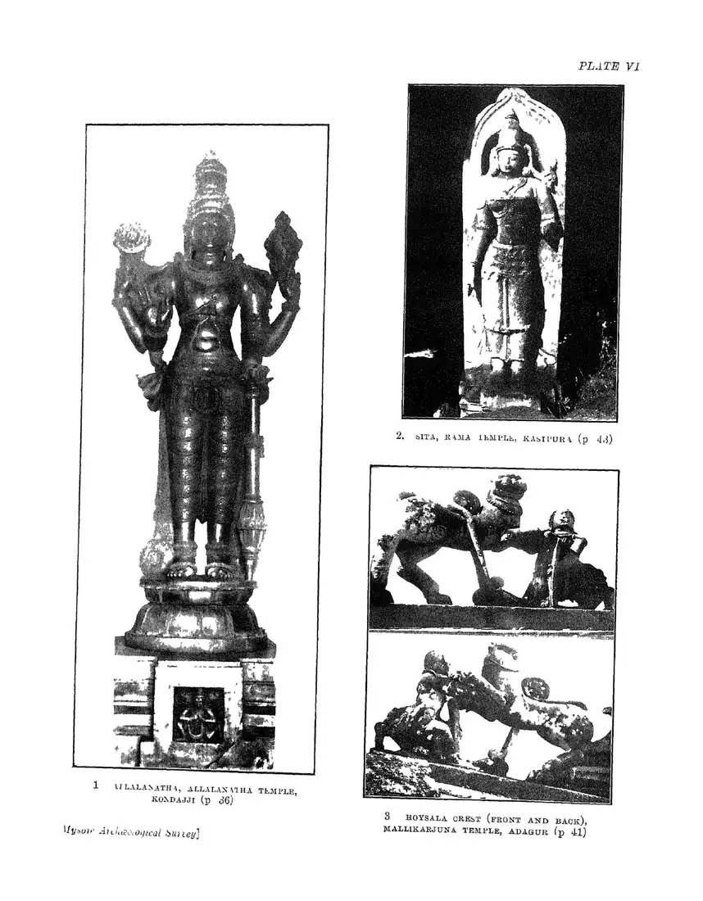
- SITA, RAMA TEMPLE, KASIPURA (p 43) 3 HOYSALA CREST (FRONT AND BACK) MALLIKARJUNA TEMPLE, ADAGUR (p 41)
A description of the temple is contained in M.A.R. 1925, pp 2-3 Two views of the temple are published in Pl II of that report. The ceilings of the navaranga, though ordinary in type, are yet beautifully carved. Proceeding from the east and running clockwise they are as follows —
1. Two concentric circles with a padma pendant in the middle. On the inner faces of the first circle a row of twelve turrets has been carved
2 Two concentric squares with a padma pendant inset in a twelve-pointed star.
3 A square and two concentric octagons with padma pendant in the centre
4 An octagon and three concentric circles with padma pendant in the centre.
5 A square, an octagon and a circle with padma pendant in the centre
6 A square and an eight-pointed star with padma pendant in the centre.
4
7. Two concentric circles with a padma pendant in the centre On the inner face of the first circle is carved a row of sixteen turrets
8 A square and three concentric octagons with a padma pendant in the middle.
9 Central ceiling—An octagon and two concentric squares with a flat ceiling. The inner faces of the octagon are carved with the figures of Dikpālas and marching warnors The inner faces of the first square have been carved with the figures of dancers, drummers, cymbalists, pipers and peacocks. The inner faces of the second square have been carved with petals The flat ceiling is divided into nine panels with Tāndavēsvaia in the central panel and the Dikpālas in the surrounding panels
Part III: Study of Monuments and Ancient Sites › Hassan DistrictHeragu
The village Heragu lies at a distance of about five miles to the south-east of Dudda It contains a runed Basti, a small Kamathēsvaia shrine and a Kirti-nārāyana temple—all belonging to the Hoysala period in style and workmanship.
Bastī
History and General Description
No heading in the body: this section starts at its printed page (26).
The basti resembles in its plan of construction the Ādinātha Basti at Chikka Hanasōge and consists of three cells leading into a common navaranga. The structure seems to have gone into ruins even during the 17th century when the fort walls at the place were constructed. One of the walls has been built right on the top of the Basti
The outer walls of the basti have been raised on a basement consisting of five plain cornices. The walls are relieved by thin right-angled pilasters at intervals. There appears to have stood a porch in front of the navaranga. The porch has now disappeared
The images of the Tirthankaias which were originally enshrined in the cells are now missing. The pillars and pilasters in the temple are either bell-shaped or indented.
Kamathhēsvaia Shīne
The Kamathēsvaia shrine consists of a small garbhagīha, a sukhanāsi, a navaranga and a porch. The outer walls have the usual right-angled pilasters. The tower above the garbhagrīha is of buck and mortar and belongs to about the 17th century. The two front pillars of the porch are cylindrical in shape.
The navaranga doorway which has a seated Jina image on the lintel piece seems to have been brought over here from the basti mentioned above. The pillars inside the navaranga seem to be modern and suggest a recent renovation of the temple. Architecturally the building is unimportant.
Kīrtinārāyana Temple
Part III: Study of Monuments and Ancient Sites › Hassan DistrictMudgieie
Antiquity; Eiagesvaia Temple
No heading in the body: this section starts at its printed page (27).
The temple of Kirtinäräyana standing a few yards to the north of the Isvara temple has been described in M.A.R. 1925. It is not so architecturally important as to deserve more detailed description here.
Mudigere.
Mudigere lies at a distance of about 2\frac{1}{2} miles directly to the north north-east of Dudda. The place was visited once in 1920 and again in 1924. It appears to have been an ancient agrahära town containing two principal temples—one dedicated to Yögänarasımha and the other to Şıva called Eragēśvara.
The latter temple which stood at a distance of about a hundred yards to the north-east of the former has completely disappeared now excepting only for the main linga, the garbhagriha doorway and the bull. From the inscription No 69, Hässan taluk, it is learnt that the temple was constructed in 1156 A.D. during the time of Narasımha I, the Hoysala king.
Yōgānarasīmha Temple
Description; Outer view; Poich and Navaranga; Ceilings; Vestibule; Main cell and Image
It is very probable that the Yögänarasımha temple was also constructed at the same time as the Eragēsvara temple. In its style of workmanship it is almost similar to the Narasımha temple at Şântıgrâma. It is a homogeneous structure consisting of a garbhagriha, a vestibule, a navaranga and a porch with a kaisâle all round (Pl. IV, 2). The last has in several places disappeared now; but the outer walls remain serving as a compound. On the east side the dilapidated portion has recently been renovated in brick and mortar.
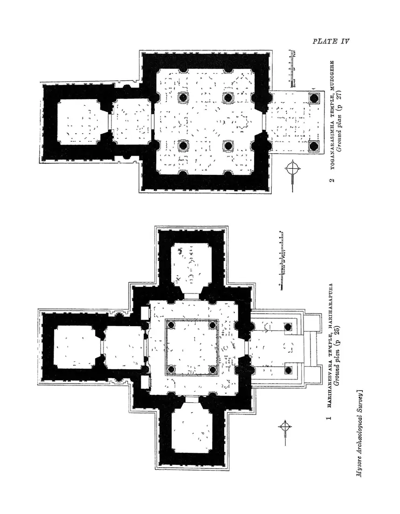
- 2 YOGANARASIMHA TEMPLE, MUDIGERE Ground plan (p 27) 1 HARIHARESYARA TEMPLE, HARIHARAPURA Ground plan (p 25)
Cited in the text: p. 27 ↩
The outer walls of the temple which are relieved by thin right-angled pilasters at intervals have been raised on a basement consisting of five cornices of which the second and third from the bottom have dentil mouldings. The eaves are straight and short and have also dentil mouldings at intervals. The tower is in the form of a stepped pyramid with its cornices decorated by dentil mouldings once again and its top surmounted by a stone kalasa. On the east side, it has a projection over the vestibule.
The two front pillars of the porch are bell-shaped. On either side of the navaranga doorway there are indented plasters and two Porch and Navaranga. Vaishnava dvärapälas. The details of the jambs are not visible owing to a thick coat of chunäm on them. Above the plain pediment there is an eaves-shaped cornice bearing a row of Dravidian. turrets The porch ceiling consists of an octagon and a square with a flat stone above divided into nine panels by bands, the panels bearing padma medallions.
Inside the navaranga the ceilings are deep Proceeding from the east and running clockwise they are as follows —
Ceilings.
1. Two sets of corner stones with a padma inset in an eight-pointed star, the star itself being inset in a square.
2 to 8. Two sets of corner stones with a multipetalled low padma pendant in the centre.
9 (Central) Two concentric octagons with a graceful dome rising in the middle of the ceiling The inner face of the second octagon is carved with a row of turret-bearing niches enshiring four-petalled flowers The surface of the dome has rafters at intervals secured by three concentric octagonal bands ornamented with gracefully hanging lotus pendants In the middle of the ceiling, there was originally a large padma pendant which is broken now
The corner stones of all the ceilings have the representation of kîrtınukhas on their undersurface. Their inner faces are carved with beaded hangings, rhomboidal flowers between columns and other designs The undersurfaces of the beams are decorated with differently-shaped medallions in the middle.
The four central pillars of the navaranga are bell-shaped, the pilasters against the walls are of the indented pattern. On either side of the vestibule doorway there are perforated screens. The jambs of the doorway are plain Above the lintel there is an eaves-shaped cornice with dentil mouldings
The ceiling of the vestibule is beautifully worked and consists of a square rising on corner stones set in the shape of an octagon. In the centre the ceiling is flat bearing a well-carved padma in the middle Around this lotus is a square band having several medallions carved with floral and figure sculptures among whom there are two flying figures of drummers The corner medallions bear peacocks and the figure-bearing medallions alternate with those bearing padmas.
Vestibule
The garbhagrıha doorway has a well-carved Gajalakshmî lintel above which there is a turret-bearing eaves-shaped cornice On either side of the doorway there are Vaishnava dvārapālas. The ceiling of the garbhagrıha is similar to that of the porch.
Main cell and image.
Inside the garbhagrıha the god Yōgānarasīmha is seated gracefully on a Garuda pedestal (Pl III, 3) The height of the image including that of the pedestal is about 6 feet The god sits cross-legged with his lower hands hanging down on the knees which are tied by a yōgapatta. In the hind hands of the god are held chakra and-śankha The ten incarnations of Vishnu are carved on the prabhāvalī. The simhalalāta and the garland and scroll designs on the tōrana are well carved. The god wears minutely worked ornaments all over his body and yajñōpavīta. His consorts stand on either side. On the whole the image is an impressive one of the 12th century and does credit to the sculptor.
To the east of the porch there is a modern shrine containing the image of a seated Lakshmī-Varāha group which appears to belong to the Vījayanagar period
Part III: Study of Monuments and Ancient Sites › Hassan DistrictAnugavallī
Rāma Temple
Situation; History; General Description; Main image; Mukhamantapa
The village of Anugavalli hes at a distance of about two miles to the north-west of Dudda railway station. It contains a temple of the Hoysala period, called the Rāma temple by the villagers, but containing in the main cell an image of Kēśava.
Situation.
Structurally the garbhagriha, the closed vestibule and the navaranga of the temple belong to the Hoysala period. There is a remarkable resemblance between the navaranga pillars of this
History.
temple and the navaranga pillars of the Śiva temple at Lōkikere in the Dāvangere taluk, Chitaldrug District. The latter temple was built during the days of Narasīmha III, the Hoysala king. The same period may be assigned to the original structure of the Rāma temple also. The mukhamantapa was constructed probably during the 14th century when the space in between it and the navaranga was also walled up.
The outer walls of the original structure are relieved, at intervals, by thin right-angled pilasters and are raised on a basement consisting of two characterless flat cornices. Over the garbhagriha the
General description.
tower rises in the form of a stepped pyramid. On the lintels of both the navaranga and garbhagriha doorways, figures of kalaśas have been carved. Each of the navaranga pillars contains, a square base and a shaft having the following mouldings in order from below: sixteen-fluted, eight-sided, again sixteen-fluted, cubical, vase, drum and wheel.
The image of Kēśava inside the garbhagriha is poor in workmanship and cannot stand comparison with the usual sculptures of the Hoysala period. Probably the original Rāma image was lost for some reason and was replaced by the present Kēśava image
Main image during the 14th century when the mukhamantapa was built and the temple was given the present shape.
In the mukhamantapa the pillars are either bell-shaped or cylindrical while the pilasters against the walls are of the indented pattern.
Mukhamantapa.
All the ceilings of the mukhamantapa are flat. In front of the mukhamantapa there is now an open verandah which was perhaps constructed during the 17th century.
Dilapidated Temple
At a distance of about a hundred yards to the east-north-east of the Rāma temple, there is a dilapidated structure which, in its plan and construction, resembles the original structure of the Rāma temple described above and appears to have been originally another Vishnu temple as indicated by the Vaishnava dvārapālas guarding the vestibule doorway of the temple. The pillars of the navaranga of this temple are also carved in the same way as those at the Siva temple at Lōkikere. The jambs of the vestibule doorway are well-worked with floral, leafy, scroll and medallion ornamentation. The garbhagriha is empty, but in the north middle ankana of the navaranga there is a linga on a pānipītha. The linga appears to belong to the Hoysala period.
Part III: Study of Monuments and Ancient Sites › Hassan DistrictHonnāvara
Ciomlechs
No heading in the body: this section starts at its printed page (30).
The village of Honnāvara which lies at a distance of about three miles to the north-west of Anugavalli appears to have been a prehistoric Iron Age town. The origin of the name of the place is explained by the saying of the villagers that gold pieces (ores probably) are occasionally found in the neighbourhood, particularly after the rains. About half a mile to the south of this village, there is the village of Pumgāme (or Pon-gāme) where also gold pieces or ores are said to be found. In both the places prehistoric Iron Age cromlechs are existing (Pl V, 3) and they suggest that their authors were ancient gold miners. With these names of Pumgāme and Honnāvara, we may compare the names of Hunkunda and Honnāli where also traces of ancient gold mining have been discovered. 'Pum' or 'pon' and 'hon' refer to gold. In Hungunda, too, cromlechs have been found (see MAR 1941, p 58). There is thus every probability that the authors of the cromlechs were ancient gold miners. The area of the cromlechs in Pumgāme is on a rising ground about 200 yards to the south of the village. There are many of them existing with an average diameter of about 20' and containing single rings of large boulders and headstones here and there. To the west, north and north-east of the area, about two or three miles away, are to be seen ranges of picturesque hills, while the ground slopes towards the tank of Anugavalli on the east.
Kēsava Temple
General Description; Outer Walls; Wall Images
The Kēšava temple stands to the south-west of the village of Honnāvara and faces east. It has been described in M.A.R. 1926. It consists of a garbhagriha, an open vestibule, a navaranga and a porch, the last of which is approached by a flight of steps on the east and has stone benches on the north and south, possibly with
General description railings originally In plan and construction the temple is very much like the Chennarāyapatna group of temples, being square with flattened sides The outer walls are raised on a basement consisting of six cornices of which Nos 2, 3, 4 and 6 from the bottom have dental mouldings and No 5 has a row of uncarved cross-shaped and other mouldings The walls are relieved by thin right-angled pilasters between which are carved turret-bearing shallow niches enshrining figures of gods, etc On either side of the niches there are turret-bearing pilasters, against which also stand figures of gods, attendants, etc Among these wall images, the following may be mentioned proceeding from the south-east clockwise —
Wall images.
South-east Wall —
1. A two-handed person wearing dagger-bearing gudle and large tuft of hair
2 Vāmana with śankha, chakra, gadā and padma.
3. Garuda with folded hands.
4. Kēśava
South Wall —
5 Janārdana with padma, chakra, śankha and gadā
6 Two-handed lady attendant.
7 Two-handed lady holding creeper (Ratī).
8. Manmatha
9 Two-handed lady attendant ·
10. Chāmaradhāni
11. Nude Mōhinī
12 Lakshmī-Nārāyana
13. Two-handed lady attendant
14 Nude Mōhinī standing with her left hand above her head and the right one on hip
15 Lady with parrot.
16 Male Vinā-player
17. Nārāyana with śankha, padma, gadā and chakra
18 Mōhinī with mirror
19 Kēśava with padma, śankha, broken chakra and gadā.
20 Janārdana with padma, chakra, śankha and gadā.
21 Lady attendant. ·
22 Kēśava.
23 Nude Mōhinī with kalaśa in her left hand and the right hand disposed in chinmudrā above her head. Her knees are coiled by a cobra
24 Two-handed dwarfish male attendant (Yaksha).
25. Two-handed dwarfish male attendant (Yaksha)
26. Chāmaradhārīnī
27. Standing Narasimha.
28. Lady attendant.
29. Kēśava with padma, śankha, chakra and gadā
30. Nārāyana with śankha, padma, gadā and chakra.
31. Chāmaradhārīnī.
32. Lady with kalasa
33. Ugra-Narasimha
34. Lady with kalaśa and pāśa.
35. Chāmaradhārīnī
36. Mādhava with gadā, chakra, śankha and padma.
37. Madhusūdana with chakra, śankha, padma and gadā.
West Wall --
38. Vishnu with gadā, broken padma, sankha and chakra.
39. Purushōttama with chakra, padma, śankha and gadā.
40. Chāmaradhārīnī.
41. Lady attendant
42. Dharanīvarāha
43. Lady attendant.
44. Lady attendant
45. Vāsudēva with gadā, sankha, chakra and padma.
46. Trivikrama with padma, gadā, chakra and śankha
North Wall —
47. Vishnu with gadā in the back left hand and the other attributes broken.
48. Vishnu with chakra and gadā in the back hands and the other attributes broken
49. Chāmaradhārīnī
50. Lady attendant.
51. Vishnu with chakra in back right hand and the other attributes broken.
52. Lady attendant
53. Chāmaradhārīnī.
54. Padmanābha with śankha, padma, chakra and gadā.
55. Dāmōdara with padma (broken), śankha, gadā and chakra.
56. Lady attendant.
57. Vāmana, naked, a fatty figure holding umbrella in the left hand and a danda in the right one.
58. Lady attendant.
59. Lady attendant.
60. Lady attendant.
61. A standing god holding phala, vajra, ankuśa and padma in his four hands (? Indra)
62. Samkarshana with gadā, sankha, padma and chakra.
63. Lady attendant.
64. Vēnugōpāla.
65. Gōvardhanadhārī.
66. Nude Mōhinī with the right hand in chimmudrā above her head and the left holding a book. She wears high sandals and her knees are coiled by a serpent.
67 Kēsava.
68. A two-handed male flutist.
69. Two-handed Dakshināmūrta high sandals, long coat and wearing cap. Holds a ring in his left hand and a rod in his right. Similar figures are found at Kōravangala and Bēlūr.
70. Lady attendant
71. Chāmaradhārīnī
72. Lakshmī-Nārāyana with rearing hons on either side.
73. Lady attendant
74. Male drummer.
75. Arjuna shooting the fish taget
76. Lady attendant.
77. A two-handed lady vīna-player, dancing
78. Lady attendant
79. Aniruddha with chakra, gadā, śankha and padma.
Paiapet and Tower
Porch; Navaranga; Vestibule; Gaibhagīha
No heading in the body: this section starts at its printed page (33).
North-east Wall.—
80 Purushōttama with chakra, padma, śankha and gadā.
81. A lady attendant
82. Mōhinī and the monkey.
Among the basement cornices of the porch, the cornice bearing a row of uncarved cross-shaped mouldings is absent. But in its place there is a frieze of rhomboidal four-petalled rosettes
The parapets of the temple are dilapidated. The eaves are short and straight-sided with the dentil mouldings projecting upwards.
Parapet and tower
The tower rises in three tiers which are all well-ornamented with kīrtimukhas, etc. Between the kīrtimukhas of the tiers there are rows of dentil and uncarved cross-shaped mouldings. On the top of the tower is a rude stone kalaśa. In front of the tower there is a projection over the vestibule with its front face carved with a sculptured panel depicting Yōgānarasimha under a kīrtimukha
5
Vishnu in the convolutions of a scroll. On either side of the god stand the images of his consorts who are rather conventionally treated. According to the inscription No 65 Hassan taluk, the image of Kēsava was consecrated in 1149 A D by one Śankaradandanātha during the time of Vishnuvardhana, the Hoysala King
Part III: Study of Monuments and Ancient Sites › Hassan DistrictĪsvara Tempel
General Description
At a distance of about 150 yards to the north-east of the Kēsava temple stands the Ēsvara temple of the village. In its style of workman-
General description. ·ship, so far as its interior is concerned, it appears to belong to a much older period than the Kēsava temple
The outer walls are plain and seem to have been rebuilt about 200 years ago. The main linga of the temple is of hard black stone and cone-shaped as at Gauja. Each of the four pillars inside the navaranga has an eight-sided shaft between two large cubical mouldings. The pillars, though plain, may belong to the Ganga period
The doorway of the vestibule with the perforated screens on either side and the Gajalakshmī lintel are of the Hoysala period and seem to have been inserted at a later period. Originally, however, the vestibule appears to have been open
The roof of the temple is low as in early structures. In the sukhanāsī is kept an image of Ganēśa of the Hoysala period. But the bull in the sukhanāsī is perhaps of the 17th century. Inside the navaranga are placed several nāga stones, a Saptamātrikā group and a Ganēśa image which are all of about the 17th century
In front of the navaranga there has been put up recently a porch, to the east of which is set up a rude pillar. To the east of the latter is a recently constructed four-pillared mantapa of no architectural merit
To the north-east of the Ēsvara temple there is a low mantapa with a dolmen slab covering it. Inside it there is an image of a Śaiva dvārapāla which is of the Hoysala period. It is in the standing posture and half-buried in the earth
Other Temples
Inside the village there are several other temples mostly belonging to the 17th and 18th centuries and calling for no special remark. The grāmadēvatā is called Kōdammā and her temple stands to the south-east of the village. This is a popular institution in the locality and has been in existence since about the 17th century. The image of the goddess is of stucco and is luxuriantly painted over and ornamented with kirīta, bhujakīrti, etc. Her vehicle is a he-buffalo.
The two front pilars of the porch are bell-shaped. The ceiling of the porch is damaged but appears to have had medallion ornamentation on its flat slab.
Porch.
The navaranga doorway is supported on either side by Vaishnava dvārapālas.
The jambs of the doorway have the usual vertical bands of ornamentation consisting of scroll, petal, another scroll and medallion ornamentation. On the lintel is carved Gajalakshmī seated on simhāsana and attended by elephants and chauri bearers on either side.
The four central pillais of the navaranga are of the usual bell-shaped lathetuned type. The mouldings on the shafts are gracefully carved with figures of medallions, kīrtimukhas, beaded hangings and scroll and petal designs. The side ceilings of the navaranga are raised on two sets of corner stones with full-blown lotuses in the centre. The central ceiling consists of a well-worked octagon and an equally well-worked square with a flat slab above, which is divided into nine figure-bearing panels. On the inner faces of the octagon are carved the figures of the eight Dikpālas, musicians, drummers, etc. On the inner faces of the square are dancing figures attended by drummers and musicians. On the flat slab is carved in the centre a three-headed and four-handed figure (? Brahma) holding chinmudrā, ankuśa, pāsa and kalaśa with ladle or staff. Flying figures of Yakshas with garlands are carved in the surrounding panels.
The ceiling of the vestibule is also well-carved like that of the navaranga. It also consists of an octagon and a square. The inner faces of the octagon have dancing figures of Śiva, Ganēśa, etc., attended by figures of drummers and musicians. On the inner faces of the square there are more dancing figures attended likewise by drummers and musicians. The top flat slab has nine panels of figure sculptures with Tāndavēśvara in the central panel and the Dikpālas in the outer panels.
Vestibule
The doorway of the garbhagriha has vertical bands of scroll and medallion ornamentations carved with minute delicacy of detail. The doorway is supported by Vaishnava dvārapālas. On the pediment is a well-carved Gajalakshmī group. Above the lintel there is an eaves-shaped and straight-sided cornice on which are seated figures of Yakshas. The ceiling of the garbhagriha consists of a flat slab carved with a padma medallion in the middle.
Garbhagriha.
The main image of Kēśava inside the garbhagriha is about 6 feet high excluding the Garuda pedestal on which it stands in samabhanga, holding padma, śankha chakra and gadā and wearing the usual ornaments all over the body, which are all minutely carved with details. The face of the god is somewhat longish with a long straight nose and rather ugly lips. On the tōrana are carved the ten avatārs of
Part III: Study of Monuments and Ancient Sites › Hassan DistrictKondajjī
Situation; Ciomlechs
Kondajji is an insignificant village situated at a distance of about six miles to the north-north-west of Sāligāme, a hobli in the Hāssan taluk. The old town appears to have existed near the Allālanātha temple which is standing at a distance of two furlongs to the west of the modern village.
Situation
About a furlong directly to the west of the temple is a rising ground containing about two dozen cromlechs (Pl. V, 4). The average diameter of each of the cromlechs is about 25'. These cromlechs are surrounded by single rings of large boulders. The head stones, however, are absent here. The situation of the cromlechs is in a beautiful spot with a good prospect all round. To the west is a hill known as the Sige-guđda. To the south-west is another hill called the Garada-gudda with the Bābābudans rising in the background far away. To the north, north-east and east are seen more ranges of hills in the distance. Exploration of the gorges and cuttings at the foot of the hills may possibly result in the discovery of Neolithic implements.
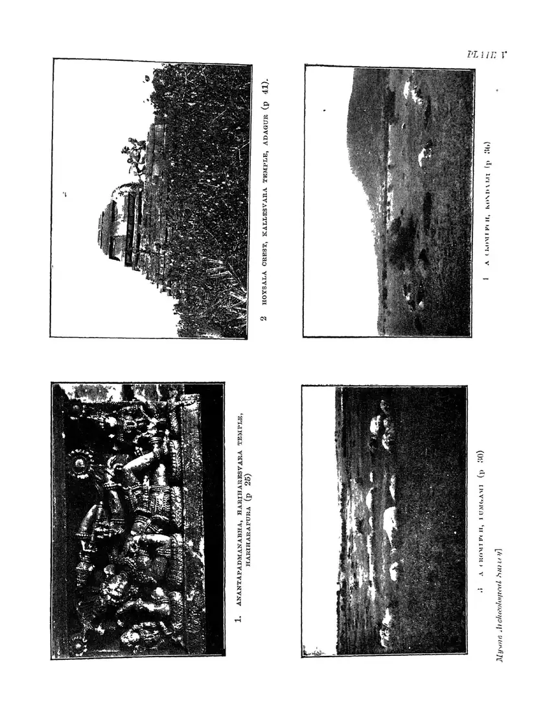
- ANANTAPADMANABHA, HARIHARESVARA TEMPLE, HARIHARAPURA (p 25) 2 A CLOMIFE II, IUMGAMI (p 30)
Allālanātha Temple
General Description; Main Image
The Allālanātha temple seems to have been originally constructed during the 14th century. It is very likely that some-time during the middle Vijayanagar period it fell into ruins and was thoroughly restored. Of the original structure, only the flat basement cornices, a few wall slabs and indented plasters and the garbhagriha doorway are remaining at present. The navaranga with its tapering pillars belongs evidently to the period of restoration.
The outer walls of the temple are plain. The navaranga doorway is supported by two rudely carved dvārapāla images. On the cubical mouldings of the navaranga pillars are carved the figures of peacock, medallions, Kāliya-mardana, seated lions and a lady squatting in an obscene posture. On the western face of the base of the south-east pillar is carved the standing figure of a bhakta inside a shallow niche cut in the pillar.
On either side of the garbhagriha doorway there are rude reliefs of Hanumān which appear to have been carved at some later period.
Inside the main cell the image of Allālanātha has a colossal appearance, standing about 11 feet high on a pedestal about 4 feet in height (Pl. VI, 1). Though it has no tōrana behind it, it is no doubt a late Hoysala period image and a very successful piece with the contour of the lumbs and delicacy of details forcefully carved. The face has a benign smile and very beautiful expression. The god is called also Varadarāja and
Main image represents the form of Janāidana holding abhaya with lotus, chakra, śankha and gadā. He wears yajñōpavīta, minutely carved ornaments and well-worked drapery. In style of workmanship it reminds us of the image of Śelvapillaī at Melkōte in the Mandya district. On the right chest of the god is carved a relievo figure of Lakshmī.
Part III: Study of Monuments and Ancient Sites › Hassan DistrictAdagūī
Situation; History
Adagūr is a road-side village on the Hāssan-Halebīd road and is situated at a distance of about six miles from Halebīd in a picturesque valley skurted by ranges of hills on all the sides except at the south-west, where we see far far away the misty Bābābudan ranges rising in a series of steps
Situation The place seems to have been one of importance during the 12th and 13th centuries and to have been occupied by flourishing communities following Vaishnavism, Śaivism and Jainism
History The temples that bear testimony to this fact are the following Lakshmī-nārāyana temple, Vīrabhadra temple, Kallēsvara temple, Vardhamāna bastī, another Kallēsvara temple, Mallikārjuna temple and Vighnēsvara shrine.
Vighnēsvaia Shrine
The image in the Vighnēsvara shrine inside the fort gate seems to be non-Hoysala in character. It is boldly carved with modest ornamentation on the body and jatāmakuta on the head
Lakshmī-Nāīāyana Temple
General Description; Outer Walls; Eaves and Paiapet; Tower; Porch; Navaranga; Main Cell; North Cell; South Cell
The Lakshmī-Nārāyana temple is the most impressive among the monuments at the place and has been briefly noticed in M. A R. 1930, page 4. It was probably built in curca 1,100 A.D. It stands towards the north of the village and has a good north-west view. It faces east and is constructed on a high platform which, in plan, follows the contour of the temple (Pl VII, 1). The plan of the garbhagriha as also that of the navaranga is square with several indentations. The cornices of the platform have no ornamentation. On the east there is a flight of steps supported on either side by niches whose small towers are missing. The temple consists of three garbhagrihas of which only the western one has a stone tower above it and a closed sukhanāsī to its front. The navaranga is common and to its east there is a porch of one ankana which is approached by a flight of steps on the east. On either side of the steps is a projection on which an elephant was probably standing originally.
Outer walls. The basement of the temple consists of eight cornices of which the sixtn from the bottom has dentil mouldings and the seventh, uncarved right-angled and cross-shaped mouldings. The outer walls are relieved by turret-bearing shallow niches turret-bearing single right-angled pilasters and thin and tall right-angled pilasters having the vase, loaf and biscuit-shaped mouldings. In the middle of the wall right round the temple, that is, between the turrets and the pilasters bearing them, there is a highly indented eaves-shaped cornice which has tooth ornamentation at intervals. The turrets above the niches are mostly Dravidian in style, each of them consisting of three tiers of which the middle one has uncarved right-angled and cross-shaped mouldings. But the turrets above the single pilasters are mostly curvilinear in the North Indian style. The niches, the pilasters, the turrets and the eaves-shaped cornice in the middle of the wall coupled with the multi-indentations all round the temple heighten the effect of light and shade and are very impressive in spite of the fact that the temple has no wall images. (Please see P1 II, 1 and 2, M A R. 1930).
The eaves of the temple have a narrow 'S' curve and tooth ornamentation at the indentations. Above the eaves the parapet consists of several square-shaped and boat-shaped turrets with cornices having dentil projections upwards or downwards and the right-angled and latin cross-shaped and uncarved mouldings. The top of the parapet has a frieze all round consisting of uncarved flat panels probably meant for the kirtimukha and other designs.
Tower. The stone tower above the main western cell rises in three tiers each of which consists of the dentil, right-angled and cross-shaped mouldings bearing uncarved flat panels meant for kirtimukha or other designs. The tower is surmounted by a stone kalaśa which is of pleasing design. In front of the tower to the east there is a stone projection over the vestibule whose front face has an uncarved panel meant evidently for the carving of an image under a kirtimukha.
Porch The porch in front of the temple has stone benches on either side edged by railings. The two front pillars of the porch are of the bell-shaped lathe-turned variety. The ceiling of the porch consists of an octagon with two sets of corner stones rising above and a low padma pendant in the centre.
Navaranga. The navaranga doorway has indented pilasters on either side and a lintel stone with hanging padma pendants below and an eaves-shaped cornice above. A row of turrets much coated over with chunam surmounts the cornice. The jambs of the doorway are plain. Inside the navaranga the four central pillars are of the bell-shaped lathe-turned type, while the pilasters against the walls are all of the indented pattern. The side ceilings of the navaranga are rather deep, each rising on two sets of corner stones with a low padma pendant in the middle. The central ceiling is dome-shaped with four concentric circles rising above an octagonal set of corner stones and having a padma pendant in the centre. The inner faces of the corner stones have panels of which only the one to the south has been half-carved with the figure of Yama on it. The inner face of the first circle has a row of Dravidian turrets alternating with curvilinear towers and with the figures of rearing hons in between.
The doorway of the vestibule in front of the main cell has on either side cylindrical pilasters and perforated screens. The ceiling of the vestibule rises on two sets of corner stones with a low padma pendant in the centre.
The doorways of all the cells are similar to the navaranga doorway. Above the doorway of the main cell there is an eaves-shaped cornice surmounted by a row of five turrets of the curvilinear type, the central turret being flanked by rearing hons on either side.
The ceiling of the main cell is similar to the vestibule ceiling. Inside the cell is seated on a Garuda pedestal the main god Lakshmī-Nārāyana with his right leg hanging down and with the goddess Lakshmi seated on his left lap. He is four-handed holding śankha, padma, gadā and chakra. The left lower hand holding the chakra embraces Lakshmī. The goddess holds padma in her left hand and is embracing the god with her right hand. Both the god and the goddess wear rich ornaments and yajñōpavīta. On the prabhāvali are carved the Daśāvatāras of Vishnu.
The ceiling of the north cell consists of an octagon and a square with a flat slab in the middle carved with a padma pendant. Inside the cell is seated the goddess Sarasvatī on a peacock pedestal. She holds rosary, ankuśa, pāśa and pustaka in her four hands and wears minutely carved ornaments on her body and a well-worked kirīta on her head.
The ceiling of the south cell is similar to the one in the north cell. Inside the cell the image of the god Vēnugōpāla stands on a Garuda pedestal in tribhanga, with his body bent towards the right, and in the attitude of playing on the flute. Above the head of the god is represented a tree, while behind him is the prabhāvali on which are carved in successive rows from the bottom cows and cowherds and the Daśāvatāras of Vishnu. The god does not wear any kirīta, but his hair is secured by a fillet above the forehead. The image is slender and impressive, though it is not as luxuriantly carved as the image at Sōmanāthapur in the Mandya district.
South cell.
Kallēsvara Temple
The Kallēšvara temple stands at a distance of about fifty yards to the south of the Lakshmī-Nārāyana temple in Adagūr. It is a structure built barely two hundred years ago but containing in it several Hoysala architectural members like the
Old materials
doorway of the main entrance to the temple, the two bell-shaped pillars in the front porch, and the pillars, beams, etc., inside the temple. Above the entrance is placed a Hoysala group, while in a niche of the parapet of the temple is placed an image of Ganēśa of the Hoysala period. The latter is said to have been brought over from the Kallēśvara temple situated a furlong away to the north-west of the village.
In other respects the temple is architecturally unimportant. To the south of the entrance on the inner side there is a worn out image of Bhairava of the Hoysala period. Corresponding to it on the north side is set up a Hoysala viragal.
The temple has been constructed mostly of the worked stones of the Hoysala period. The doorways of the navaranga, vestibule and garbhagriha are typically Hoysala in character. The central four pillars of the navaranga as also the four corner pilasters of the indented type and three wall sculptures of the Hoysala period, have all been brought over from some runned temple and used here. Inside the garbhagriha the panipītha on which is set up a low linga is old in character.
Vardhamāna Basti
General Description; Outer View; Porch; Navaranga
The Vardhamāna basti is situated at a distance of about fifty yards to the west of the above-mentioned Kallēsvara temple. It consists of a garbhagriha, a closed vestibule, a navaranga, a front mantapa and an open one-ankana porch the front of which has been edged by stone railings. The porch has a flight of steps on the east, supported by stone elephants on either side.
The outer walls of the basti are raised on a basement consisting of two flat characterless cornices with an inner and larger cornice in between. In the north-east and south-east outer walls have been inserted some sculptures and pilasters of the Hoysala period. The eaves of the basti are straight-sided with corner dentil mouldings upwards. The parapet of buck and mortar is evidently of recent days.
The two front pillars of the porch which have a thick coat of chunām on them are of the thirty-two pointed star-shaped variety. The ceiling of the porch has been carved with the figure of an eight-handed dancing Indra in a circular panel whose outer four corners are carved with kīrtimukhas.
The doorway of the mantapa is guarded by Yaksha dvārapāla figures. On the lintel of the doorway there is a Gaja-lakshmi group. The navaranga doorway has indented pilasters on either side. The jambs are carved with vertical bands of a scroll in the convolutions of which appear the figures of elephants, lions, horses, etc. On the pediment is the figure of a Jina seated under a mukkode and supported by chāmara bearers on either side.
The navaranga pillars are of the bell-shaped lathe-turned type. The side ceilings are plain, but the central one is raised on two sets of corner stones with a low padma pendant in the middle. The doorway of the vestibule has perforated screens on either side. To the south of the vestibule doorway there are two small images of Dharanîndra Yaksha.
The image of Vardhamāna inside the garbhagriha is about four feet high and standing in the samabhanga posture under a mukkode.
In the basti there is a stone representation of what is called Mandara-śaila which is worked in the form of a brindāvana with stepped pyramidal cornices. On each facade of the śaila there are fifteen rows of sculptures representing various Tirthankaras. In all, there are about 504 samts depicted in the same way.
Mandara Šaila
Other Temples
Malhikājuna; Kallēsvara
About a furlong to the north-west of the village there are two temples of the Hoysala period dedicated to Kallēsvara and Mallikārjuna which appear to have been constructed during the 12th century A D. The former temple faces east and the latter north. The latter temple is immediately to the south-east of the former. Both the temples are soap-stone structures having plain outer walls, basement cornices and stepped pyramidal towers with frontal projections over the vestibules. On the projections there are well-preserved Hoysala crests (Pl. V, 2, and VI, 3) depicting Sala in the attitude of attacking the tiger. The stone finials of the towers are missing from both the temples.
The outer wall of the Mallikārjuna temple has a plain middle cornice all round. The temple consists of a garbhagriha, a vestibule, a navaranga and a porch. The roof of the temple is low and the pillars have cylindrical shafts on square bases.
Mallikarjuna.
Inside the navaranga there is a well-carved bull of small size.
The Kallēsvara temple has a garbhagriha, a vestibule with a doorway having perforated screens on either side and a large closed mantapa in front, which appears to have been constructed in two different periods.
Kallesvara
The central pillars in the ankana to the front of the vestibule are cylindrical. The other pillars of the mantapa are of the bell-shaped lathe-turned type. In the north-western corner of the mantapa there is a cell which appears to have been introduced at a later period. It contains a good image of Sūrya who holds natural-looking lotuses in his hands and wears a square-shaped tiara which rises in tiers. In the ankana to the front of the vestibule there is a good figure of Nandi which is similar in workmanship to the bull of the Mallikārjuna temple mentioned above. In the centre of the hall there is another bull which is rather rudely carved, though
6 possessing good features In a niche of the parapet above the temple of Kallēśvara inside the village there is a nicely worked image of Ganēśa which is said to have belonged to this temple originally
Part III: Study of Monuments and Ancient Sites › Hassan DistrictKā-ipura
Situation and Antiquity
No heading in the body: this section starts at its printed page (42).
About a mile directly to the north of Adagūr is the ancient site of Kāśīpura which is now overgrown with jungle and is deserted. The Situation and antiquity. place seems to have been a prominent one during the middle or the late Vijayanagar period. A rubble fort wall provided with corner bastions surrounds it. Towards the east of the site there is a high prākāra, inside which three runed temples stand The middle temple is dedicated to Śīva, the south one to Pārvatī and the north one to Rāma. All the structures are now in a woefully runed state
Šiva Temple
General Description; Walls and Pillars
The Śīva temple contains a garbhagrīha, a double vestibule, a navaranga, a front ardhamantapa and a pātālānkana The doorways of the garbhagrīha and the inner vestibule are of soapstone and appear to have been brought over from some runed Hoysaļa structure On the two sides of the garbhagrīha doorway there are perforated screens The lintel of the doorway has lotus drops. The ceiling of the garbhagrīha, which is raised on two sets of corner stones, has a padma pendant in the centre which is Hoysaļa in character
The outer walls of the temple and the pillars of the navaranga, etc, are all constructed of granite and are typically of the middle or even late Vijayanagar period The pillars are Dravidian in type containing relievo figure sculptures on their cubical mouldings Among the figures there are nāgabandhas, cow and the linga, ladies, obscene figures, monkeys, ridden and unridden elephants, tiger, linga, Nandī, Yaksha, yālī, ridden horse, trunked bird, kalaśa, Vīrāñjanēya, lion, Vēnugōpāla, Kālingamardana, etc On one of the facades of the base of a pillar in the mukhamantapa is represented the relievo figure of a person wearing kīrīta on head and gown over body coming down to the knees and covering the hands completely On a cubical moulding of another pillar is the representation of two leaning pariots On another cubical moulding is sculptured a flower which looks very much like the flowers appearing in the ceilings of the temples of the Ikkēl school. Two of the pillars of the mukhamantapa have sixteen-fluted shafts ornamented with beaded and octagonal bands. The beads are large and look like rudrāksha Above the shafts the vases are aslo sixteen-fluted
Rāma Temple
General Description Sitā; Parapet
The Rāma temple to the north of the Ēśvara temple has a garbhagriha surrounded by an inner pradakshina, a navaranga and a mukhamantapa. The two front pillars of the mukhamantapa are Dravidian in type like the rest of the pillars; but the upper corners of their bases are carved to represent two-tiered pavilions which appear very much like observation towers. On the lntel of the sukhanāsi doorway is a figure of Ranganātha.
General description.
Among the main images of the temple, only that of Sitā is existing now, (Pl VI, 2), and that, too, in a mutilated condition. The image is of potstone with breast-band, pītāmbara and kīrīta. The height of the image is about 4' including the tōrana.
Sita.
The parapets of both the Śīva and Rāma temples are provided with a series of brick and mortar niches of about the 17th century enshrinning stucco images among which several are obscene.
Parapet.
Parrot motifs also occur in the parapets.
Part III: Study of Monuments and Ancient Sites › Hassan DistrictMinor Structures
Pāivatī Shrine; Prākāia cells; a devotee; Mahādvāia
The Pārvatī temple to the south of the Śīva temple is characterless and does not call for any special remark.
Prakara cells.
All round, the prākāra has been provided on the inside with cells, particularly on the west. Inside the cells of the prākāra there were enshrined lingas originally. It is said that there were existing 101 such lingas.
A devotee.
To the west of the Pārvatī shrine was found a soap-stone image of a devotee standing, with folded hands and paraśu, under a kīrti-mukha and wearing a long cap folded to the left. The sculpture represents perhaps the builder of the temples during the Vijayanagar period.
Mahadvara.
There are two mahādvāras to the prākāra, one on the east and the other on the west. On the cubical mouldings of the pillars of the east mahādvāra are found figures of Yakshas, snake charmers, (Pl VIII, 1), etc. On either side of the mahādvāra on the inside are found rude relievos of persons dressed in the Moghul fashion. The figure to the south has a parrot in the uplifted left hand and what looks like a Mahratta pagadi on the head. It is possible that the prākāra was added during the 17th century when the towers and parapets of the temples were also constructed.
Gōnī Sōmēnahallī
Siva Temple
History and General Description; Navaranga; Images
Gōnı-Sōmēnahallı is a village situated at a distance of about four miles to the east of Halebid. It contains a dilapidated Šiva temple which is a structure of the Hoysala period and was constructed in 1227 A.D.
Of the two courses of the original outer walls the outer course has completely disappeared so that we cannot now form any idea with regard to the sculptural details of the walls. We find, however, a few architectural members here and there from which we may suppose that the outer walls were relieved by thin right-angled pilasters and that the eaves were straight-sided with upward dentil projections at intervals.
On the roof of the navaranga is placed a good Hoysala group which must have been originally placed on the projection of the tower over the vestibule.
The temple consists of a garbhagriha, a sukhanāsı, a navaranga and a small one-ankana porch. The front two pillars of the porch have each a square base and a cylindrical shaft. The roof of the temple is low.
Inside the navaranga the four central pillars are similar in character to those met with in the Chālukyan group of structures in the Navaranga. Dāvanagere Taluk (see M A R 1939). Each of them has the cubical, sixteen-fluted, octagonal, cubical, drum and wheel mouldings in order from the bottom.
All the ceilings of the navaranga are a little deep and are raised each on two sets of corner stones with a padma pendant in the centre. The pilasters against the walls are indented. Against the north wall of the navaranga there is a turreted niche which is well worked but empty.
Inside the navaranga are placed a few characterless nāga stones, a Ganēśa and three exquisitely carved images of Sarasvatī, Shanmukha and Mahishāsuramardinī. Though the last three images are now in a mutilated condition, they show high sculptural merit and minute delicacy of detail. The image of Mahishāsuramardinī, particularly, is very impressive (P1 III, 4). She is eight-handed and among her attributes the arrow in the right uppermost right hand and the bow, the bell and the buckier in three of the left hands are carved realistically. The hand holding the arrow shows movement the goddess is in the attitude of drawing out the arrow from the quiver at the back. The twist of the bow-string is clearly represented. The right leg of the goddess treads on the buffalo which protrudes its tongue under the weight of the goddess and is about to collapse. From out of the upper portion of the neck of the buffalo, the demon issues forth and has placed his left leg already on the ground while yet his right leg is within the buffalo. The goddess has bent his hand backwards and has speared him with her trident. Her act of killing the demon is accomplished and there is an expression of triumph on her face. She wears the usual ornaments and yajñōpavīta. In the image of Shanmukha who has six heads may be noticed the details of the peacock's feather and the rudrāksha garland around the neck of the bird.
Vestibule and garbhagrīha
No heading in the body: this section starts at its printed page (45).
The doorway of the vestibule has perforated screens on either side and is guarded by Śaiva dvārapālās. The garbhagriha doorway is also supported by similar dvārapāla figures. On the lintel of the latter doorway there is a Gajalakshmī group. The ceiling of the garbhagriha is raised on two sets of corner stones and has a padma in the centre. Inside the garbhagriha the linga is low, being about a foot in height including the pedestal. The bull in the vestibule has a stout body with a disproportionate neck and snout.
Part III: Study of Monuments and Ancient SitesKadur District
Hiremagalūr
Antiquity
No heading in the body: this section starts at its printed page (45).
This is a large village about a mile to the south-east of Chickmagalūr. In the inscriptions of the eleventh century A D, the place is called Priyāmugulī agrahār. Please see M. A. R. 1916, p. 21 for the tradition connected with the place. The village seems to be of considerable antiquity and to have been an agrahār town in c. 900 A D. during the time of the Gangas.
Isvara Temple
A tenth century structure
Navaranga Pillais; Ceiling; Dooway; Bull and Jademuni
No heading in the body: this section starts at its printed page (45).
Attributable, in all probability, to this early period is the Āśvara temple in the village. It stands a little distance directly to the west of the yūpastambha which has been declared as an Ancient structure. Monument under Class II
The temple has no doubt been rebuilt at some later period. But the navaranga pillars which are similar in character and type to those met with at the Rāmēśvara temples in Kubatūr (M. A. R. 1941, p. 18) and Narasamangala (M. A. R. 1937, pp. 22 ff.), the ribbed brackets above the pillars, the navaranga doorway which is similar in type to that of the Rāmēśvara temple at Kubatūr, the sculptural peculiarity of the so-called Jademuni to the north-east of the temple, the bull of the Kigga type (M. A. R. 1931, pl. VII, 3) to the south-east and the yüpastambha which no doubt seems to belong to the temple itself—all these declare the monument to belong to c. 900 A D The linga inside the garbhagriha is not very large. It is about 2\frac{1}{2} feet in height including the pedestal. With the pillais of the navaranga and their disposal we may compare those met with at the Nonabēśvara and Gangēśvara temples at Nonavinakere. Each of them has a low square base on which rises a cylindrical shaft overlaid by several cylindrical mouldings. The shaft terminates in a vase shape and is surmounted by three wheel mouldings. The brackets are ribbed as in earlier temples.
The central ceiling of the navaranga is divided into nine panels by right-angled bands. In each panel is carved in bold relief a padma medallion.
Ceiling.
Each of the jambs of the navaranga doorway (Pl. VII, 2) has at the bottom two panels, side by side, containing a bearded figure with facial features suggestive of the lion and seated either in padmāsana or with crossed knees secured by a patta as in the images of Yōgānarasīmha. The dishevelled hair of the figure is secured by fillets. One of the figures on the left jamb is holding in its left hand what looks like a staff. Above the panels the ornamentation of the jambs is as follows —
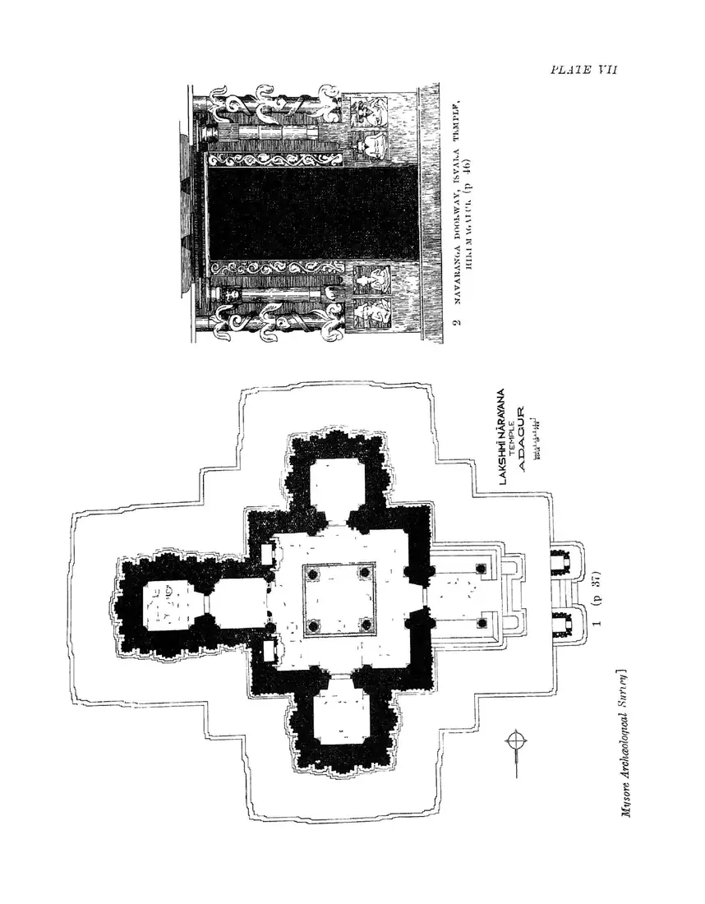
- 2 NAVABANGA DOOKWAY, ISYALA TEMPLE HILL MIGGETCH (p 46) LAKSHMī NĀRAYANA TEMPLE ADAGUR 1 (p 37)
Cited in the text: p. 46 ↩
1. A vertical scroll band,
2. A pilaster having a low square base and octagonal, mono-cylindrical (right) or tri-cylindrical (left), cubical and vase mouldings on its shaft, and
3. A cylindrical shaft issuing out of petals and intertwined by a scroll. The base of the shaft on the right side is carved with the relievo figure of an elephant.
The porch of the temple which has pillars of the Dravidian type seems to have been put up during the 17th century A.D
To the south-east of the temple there is a natural-looking bull which, in its features, reminds us somewhat of the bull at Kigga though it may not be as beautiful. To the north-east of the temple there stands the image of what is called the Jade-muni.
Bull and Jademuni
(Pl. VIII, 2). It is an image in the round with dishevelled hair and having a padma medallion inset in a crescent above the right ear. Padma-kundalas are worn in the ears. The image wears like a Brahmachārm a loin cloth secured by a gurdle. A belt-like band is also worn in the upavita mode. The image has four hands and eight legs. The front four legs are in a row facing to front while the hind legs form two pairs facing opposite directions. In the four hands of the image are held the following attributes: rosary, a long staff, broken (looks like another staff) and a pitcher-like vase with hd, perhaps representing a kamandalu. There appears to be an indication of the phālāksha The hairs are arranged in falling curls (jatābhāra). Though the image is called Jade-muni, it looks likely that it may represent a form of Śīva as suggested by the crescent above the right ear.
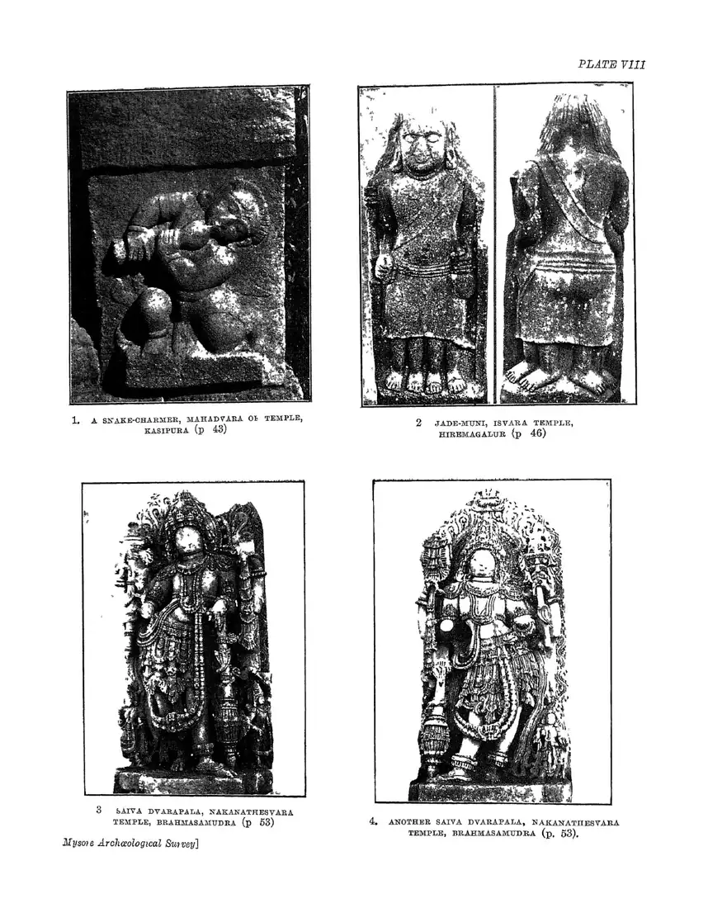
- A SNAKE-CHARMER, MAHADVARA OF TEMPLE, KASIPURA (p 43) 2 JADE-MUNI, ISVARA TEMPLE, HIREMAGALUR (p 46) 3 SAIVA DVARAPALA, NAKANATHESVARA TEMPLE, BRAHMASAMUDRA (p 53)
- ANOTHER SAIVA DVARAPALA, NAKANATTIESVARA TEMPLE, BRAHMASAMUDRA (p. 53)
Built into the steps of the temple is a portion of the eaves which is decorated on its undersurface by a frieze of flying geese.
The yūpastambha has a high cubical base, then a short octagonal moulding and then again another cubical moulding overlaid by a square abacus bearing a long lotus bud. On the east and west sides of the bud, there are three incised lines suggestive of a trident. On the east face of the base of the pillar was discovered a Kannada inscription of about the tenth century A.D
Yūpastambha
Kōdanda Rāma Temple
History; Outer Walls; Later Extension; Vestibule; Garbhagrīha
The Kōdanda-Rāma temple to the south-east of the village seems to have been constructed in three stages of the earliest stage which appears to have originally consisted of the garbhagriha, the vestibule and the navaranga, only the garbhagriha and the vestibule are now existing. The present navaranga is possibly a work of the 14th century while the mukhamantapa is certainly not earlier than the 16th century.
The outer walls of the garbhagriha and vestibule (Pl. IX, 1) are raised each on a square basement having flattened sides. The basement consists of six cornices of which the fourth and the fifth from the bottom have dentil mouldings and uncarved right-angled and oblong mouldings, respectively. The walls are divided into two compartments—upper and lower—by an eaves-shaped middle cornice running right round the garbhagriha and vestibule. In both the compartments are found wall images, while the upper compartment has, in addition, several turreted niches and turret-bearing pilasters
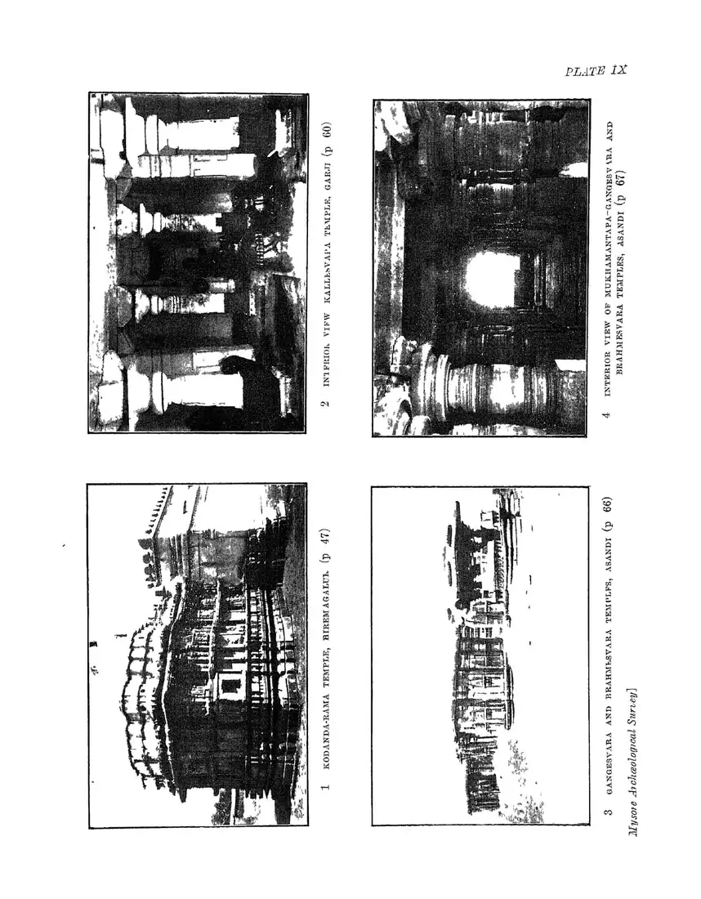
- 2 INTERIOR VIFW KALLESVAPA TEMPLE, GARJI (p 60) 4 INTERIOR VIEW OF MUKHAMANTAPA-GANGESVARA AND BRAHMESVARA TEMPLES, ASANDI (p 67) 1 KODANDA-RAMA TEMPLE, HIREM AGALJU. (p 47) 3 GANGESVARA AND BRAHMESVARA TEMPLFS, ASANDI (p 66)
Among the wall images the following are noteworthy —
South wall
Lower compartment—
1. Garuda
2. Vēnugōpāla
3. Janārdana
4. Loving couple
5. Kālingamardana
6. Yōgā-narasimha
7. Ganapati Upper compartment—
8. Gövardhanadhārī
9 Hanumān
10. Lady at toilet
11. Kēsava
12. Sūrya-Nārāyana
13 Standing Narasimha
14. Janārdana with padma, chakra, sanka and gadā
15. Kēsava
West wall .
Lower compartment—
16 Attendant (not carved)
17. Lakshmī-nārāyana (not carved)
Upper compartment—
18. Nārāyana
19. Mādhava
20. Nārāyana
21. Attendant
22. Indistinct representation of a form of Vishnu
North Wall .
Lower compartment—
23. Uncarved panel
24. Attendant
25. Indistinct figure
26. Seated Lakshmī
27. Kēsava
28. Kēsava
29. Garuda
Upper compartment—
30. Indistinct form of Vishnu
31. Indistinct form of Vishnu
32 Hayagrīva
33 Indistinct form of Vishnu
34. Indistinct form of Vishnu
35. Indistinct form of Vishnu
36 Hanumān
37. Sūrya-Nārāyana The basement and outer walls of the navaranga which are built of brick and mortar are characterless. The same is the case with regard to the outer walls of the mukhamantapa. The brick and mortar parapet and the projection over the vestibule in front of the tower are works of about the 17th century. But a portion of the parapet above the garbhagriha and vestibule is of stone having dentil mouldings.
The pillars of the mukhamantapa are of the Dravidian type and tapering. The navaranga doorway is guarded by Garuda on the right and Hanumān on the left. The entrance is provided with a wooden double door whose front face has well-carved wooden bands unfortunately covered over at present with a thick coat of muck and chunām. Among the ornamentations on the several bands are a scroll with graceful convolutions, beads, dentils and medallions. The door seems to be a work of about a hundred or a hundred and fifty years ago.
The four central pillars of the navaranga are high. Each of them consists of a square base and a cylindrical shaft. The pilasters against the walls are indented. The ceilings of the navaranga are characterless.
The temple appears to have had originally an open vestibule. At present, however, a doorway has been put up with a lintel stone covered by wood. The wood is much eaten up by white ants. On either side of the vestibule on the inside, brick and mortar walls have been constructed in recent days and two strong rooms have thus been introduced. The ceiling of the vestibule consists of an octagon and a square with a flat panel in the centre, divided into nine compartments in each of which there is a neatly carved rosary.
The garbhagriha doorway is typically Hoysala in character though the jambs are not well-carved with sculptural details. The pediment has an uncarved flat panel. The doorway is supported by Vaishnava dvārapālas of whom the figure on the left is not well carved. The garbhagriha ceiling consists, like that of the vestibule, of an octagon and a square, but in its centre there is a well-carved large single padma.
On an oblong pedestal inside the garbhagriha stands the image of Kōdanda-Rāma supported by the image of Sītā on the right and that of Lakshmana on the left. Rāma and Lakshmana both carry arrows in their right hands and strung bows in their left. The goddess holds padma in her left hand while her right hand is hanging down. All the three images are carved with the details of ornamentation characteristic of the Hoysala period. The front face of the pedestal has a panel depicting Hanumān.
The processional metallic image of the temple is Janārdana in form and is supported by the images of Śri and Bhū.
7
The prākāra shrines are all of recent days. In the cells to the west are enshrined the following images beginning from the south —
Images in pākāra cells
1 Vēdānta Dēśika (not of any sculptural merit)
2. Yōgā-narasīmha with the knees crossed and without the yōgapatta. This is a typical Hoysala sculptue with the dāśavatāras on the prabhāvali
3 Sugrīva with folded hands. This is a rude image, about a hundred and fifty years old, with a Kannada inscription on the pedestal saying that it was consecrated by one Kāsiappa, son of Īśvarappa in the cyclic year Šārvarī (corresponding perhaps to 1780 A.D.)
4. A form of Vishnu (? Venkatēsa) holding what looks like a lump (?) in the front right hand, prayōga-chakra in the back right hand, natural-looking śankha in the back left hand and the front left hand placed on kati (Pl. X, 1) The image wears inakarakundalas in the ears and moderate ornaments on the body. The kirīta, too, is modestly worked. The god wears yajñōpavīta from the knot of which is suspended a long flowing chain which terminates in a jingle to the right of the right ankle. His drapery is down to the knees only. The general features of the image remind us of the image of Venkatēsa at Pālya, though the attributes here are different. The image is set up on a Garuḍa pedestal of the Hoysala period but having an inscription of about the 17th century saying that it is a gift of a certain Cheluviah. The image itself is perhaps of the 11th century A.D
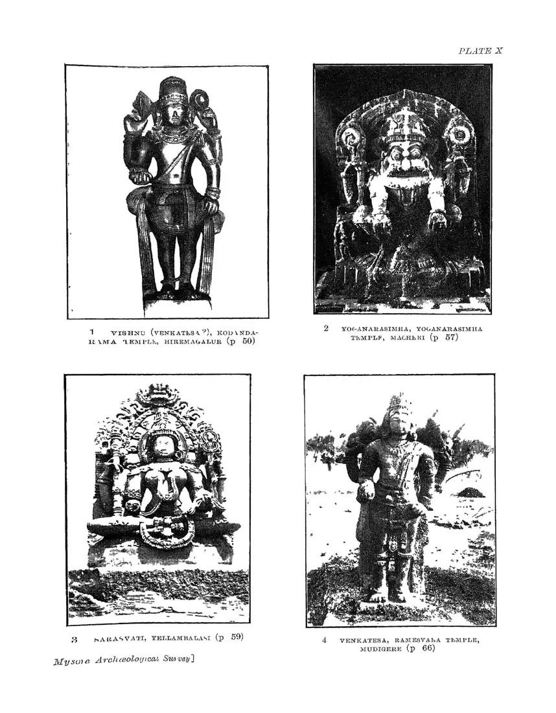
- 1 VISHNU (VENKATESA ?), KODANDA-RAMA TEMPLE, HIREMAGALUR (p 50) 2 YOG-ANARASIMHA, YOGANARASIMHIA TEMPLF, MACHERI (p 57) 3 SARASVATI, YELLAMBALASI (p 59) 4 VENKATESA, RAMESVARA TEMPLE, MUDIGERE (p 66)
In the north-east prākāra also there are some cells enshrining images. In one of the cells the image of Rāmānujāchārya, which appears to be about 200 years old, is enshirned. In another cell there is a potstone figure of Yōgānarasīmha under a gracefully worked prabhāvali, possibly of the Hoysala period. It looks as if this sculpture existed originally on the front face of the projection in front of the tower of the temple. Inside the cells of the Ālvārs and Āchāryas, the largest image which is in chinmudrā appears to represent Vēdānta-Dēśika. It may not be Rāmānujāchārya since his images are generally found with folded hands. To the left of this image are the images of Rāmānujāchārya (with folded hands and tridanda), Nammālvār and Tirumangai Ālvār
Parasurāma Temple
The Paraśurāma temple stands to the north-west of Hiremagalūr. It consists of a garbhagrīha, a vestibule and a navaranga. The outer walls and tower which are built of brick and mortar may be assigned to about the 17th or 18th century. But the granite linga inside the garbhagrīha, which is shaped like a thick rude paraśu or axe, is possibly of earlier days In front of the temple there are a viragal and an inscription of about the 10th century A D. The latter looks very much like the Rāshtrakūta inscription stones in the Shimoga district
Image of Kāli
At a distance of about 50 yards to the north of the Paraśurāma temple there is a soap-stone sculpture in relief depicting Kāli. The goddess is two-handed holding sword in the right hand and an indistinct symbol in the left. She is seated in padmāsana on a pedestal on either side of which are a rearing hon and a lady attendant. In the upper panels on either side of the goddess there is an elephant holding above the head of the goddess what looks like a bell in its trunk. The upper edge of the prabhāvali is ornamented with a thick rope of rudrāksha.
Part III: Study of Monuments and Ancient Sites › Kadur DistrictAmbale
Ambale is a village situated at a distance of about two miles to the south of Hiremagalūr. It appears to have been a prosperous agrahāra town during the 12th century A D. It contains four temples dedicated to Chennigarāya, Lōkēśvara Virabhadra and Gōpālakrishna.
Situation and History
Chennigarāya Temple
General Description; Main Image
The Chennigarāya temple contains a square garbhagriha, a vestibule and a square navaranga. The outer walls are raised on plain basement cornices and are relieved by right-angled pilasters between which are padma medallions. The tower of brick and mortar is of the Pāleyagār period.
The four central pillars of the navaranga have cylindrical shafts with square and wheel mouldings. All the ceilings are raised on two sets of corner stones with lotuses in the centre.
Inside the garbhagriha the image of Chennigarāya is about five feet high excluding the Garuda pedestal on which it is standing. Its lower right hand is broken, but the stalk of the lotus is visible. The other hands hold in order. śankha, chakra and gadā. The prabhāvali is carved with the ten avatāras of Vishnu. The main image is supported on either side by the images of the consorts of Vishnu.
The temple was constructed by Ballāla II in 1178 A D. according to the inscriptions Nos 21 and 22, Chikmagalūr taluk.
Part III: Study of Monuments and Ancient Sites › Kadur District › AmbaleLōkēsvara Temple
This temple is similar in construction to the Chennigarāya temple. Inside its navaranga are set up the images of Ganēsa, Nandivāhanamūrti with Pārvatī, Sūrya and Shanmukha. The temple is architecturally unimportant.
Vīnabhadra and Vēnugōpāla Temples
Hoysala Image
No heading in the body: this section starts at its printed page (52).
The Vīrabhadra temple is modern. The Vēnugōpāla temple, though also modern, is a popular minor muzrai institution and is built on a high platform. Though the building has no architectural importance, the image of Vēnugōpāla inside the garbhagriha is a well carved image of the Hoysala period.
Part III: Study of Monuments and Ancient Sites › Kadur DistrictBiahmasamudia
Antiquity
No heading in the body: this section starts at its printed page (52).
An account of the village of Brahmasamudra and its temples has appeared in the Annual Report of this Department for 1926. The place appears to have been the seat of a Pāleyagār during the 17th century. There is a mud fort wall all round the village, with a moat outside it.
But during the Hoysala period there were two temples Dedicated to Vīranārāyana and Nākanāthēśvara. Of these only the Vīranārāyana temple is now standing intact. On the site of the old Ēśvara temple is built at present a country-tiled house to serve the purpose of the temple.
Vīranārāyana Temple
General Description; Porch and Navaranga; Vestibule and Garbhagrīha; Main Image
The plan of the Vīranārāyana temple is simple. The garbhagriha and navaranga are both square in plan. Two of the basement cornices have the uncarved dentil, right-angled and cross-shaped mouldings. On the outer walls are found only the right-angled pilasters bearing biscuit-shaped mouldings. The eaves are straight with dentil mouldings projecting upwards at the corners.
The porch is entered by a flight of steps supported on either side by stone elephants. The two front pillars of the porch are bell-shaped and lathe-turned like the four central pillars of the navaranga. The navaranga doorway has the usual jambs with vertical bands of ornamentation. But the bands are uncarved. On the architrave is a relievo figure of Garuda. The upper lintel is carved with a row of turrets, both Dravidian and curvilinear. While the ceiling of the porch is flat and divided into nine panels carved with lotuses, the ceilings of the navaranga are all well carved as follows proceeding from the east clockwise.—
1. Circular and dome-like with padma pendant
2. Two sets of corner stones with padma inset in a Śrīchakra.
3. and 4. Same as No 2.
5. Eight-pointed star with octagon further up and a padma inset in a circle in the centre
6. Three sets of indented squares with padma pendant in the centre
7. Four concentric indented circles with padma pendant in the centre.
8. Three concentric eight-pointed stars with padma pendant in the centre.
9. (Central) The central ceiling is deep and rises in the form of a dome with three concentric circles rising above two sets of octagons. In the centre of the ceiling there is a large padma pendant. On the front face of the lower set of the octagons are carved the figures of the eight Dīkpālas in their positions with figures of marching warriors in between.
The lintel of the vestibule doorway contains an exquisitely carved Lakshmī-Nārāyana group supported on either side by richly floriated and minutely carved ridden makaras (please see illustration in M. A. R. 1926, Pl VIII). The lintel of the garbhagrīha doorway has a boldly carved Gaja-Lakshmī group.
The main image of Nārāyaṇa inside the garbhagrīha stands on a Garuda pedestal holding in his four hands sankha, padma, gadā and chakra.
Main image It is a beautiful sculpture with minutely worked ornaments all over the body and a rich bejewelled kīrīta on the head. Including the Daśāvatāra prābhāvali and the pedestal the image is about 5 feet high.
In the navaranga of the temple the following images are found:—
1. A rudely carved Vēnugōpāla, probably of the 14th century.
2. A Saptamātrikā group, probably brought from the runed Śīva temple.
3. A well-carved Yogānarasīmha image of the Hoysala period.
4. An equally well-carved image of Ganēśa, also of the Hoysala period.
V
Nākanāthēsvara Temple— PAGE
Dvārapāla Images
No heading in the body: this section starts at its printed page (53).
The modern country tiled house which enshrines the old linga of Nākanāthēśvara calls for no special remark. But on either side of the building there are two images of Saīva dvārapālas (Pl. VIII, 3 and 4) which appear to have belonged to the original temple. These images, though somewhat smaller in size, are so exquisitely carved with plentiful details of ornamentation that they are not in any way inferior in workmanship to the large-size dvārapālas at the Hoysalēśvara temple in Haļebīd.
Part III: Study of Monuments and Ancient Sites › Kadur DistrictMallēsvara
Modern Temples
Mallēsvaradamma Temple; Kenchamma and Chaudamma; Mātangı; Modern Temple
Mallesvaradamma temple Mallēsvara is a small village situated at a distance of about a mile and a half to the south-east of Kadūr. To the south-west of the village stands the temple of the goddess of the village, called Mallēsvaradammā. She is also called Honnaralammā or Honnu-Aralammā because she is said to have been formerly standing under a peepul tree (Aralı-mara). Inside the temple, however, there is no image but only an ant-hill which is said to contain the image of the goddess.
The structure itself is barely forty years old and calls for no remark. It is a building of size stones and masonry pillars, and is enclosed in a wide prākāra. It is said that there is a copper plate inscription pertaining to the temple in the possession of one Dēvara Bhatta of Tarikere who is said to be the pūjāri of the temple. The inscription is reported to consist of a single copper plate written on only one side.
To the west of the Mallēsvaradammā temple is a mono-celled modern structure built for the goddess Kenchammā and Chaudammā. Inside the cell there are also some rude stones shaped like neolithic celts and worshipped by the villagers.
Matangi. At a little distance to the north of this temple is another modern structure of mud and rubbles built for the goddess Mātangī. The image is a form of Durgā, about nine inches in height. It is a relievo sculpture in the seated posture.
Inside the village there is a temple of perhaps the Pāleyagār period containing the metal images of the Mallēsvaradammā temple. The pillars of the navaranga are Dravidian in type and tapering. On one of the ceilings there is the representation of a crawling cobra.
Rāmēśvara Temple
History; General Description
History. At a distance of about a mile to the south-east of Mallēsvara is situated, in a toddy grove, the temple of Rāmēsvara whose outer walls have, in recent times, been built of size stones. But the inner view of the temple shows that it was originally constructed perhaps during the 13th century A D.
The garbhagriha doorway is ornamented on the jambs with kalaśas and vertical bands of floral and rope designs. The vestibule is open.
General description. The four central pillars of the navaranga are short and Dravidian in type with cubical, sixteen-fluted and octagonal mouldings. They are made of granite.
To the south-east of the temple there is set up a pot-stone inscription of the Hoysala period. Unfortunately the letters of the inscription are completely effaced
Mallēdvēa Temple
History; General Description
This is a structure in the village going back to about the 12th century A.D. according to the inscription No. 10 Kadūr, which records a grant to the temple. In the inscription the god is called Mallikārjuna.
General description. The outer walls of the temple have all collapsed. In their place walls of rubble and mud have been constructed. The structure consists of a garbhagriha, a vestibule (recently closed), a navaranga and a porch. Inside the navaranga each of the four central pillars has the cubical, eight-sided and cylindrical mouldings. The central ceiling has a boldly carved padma. The roof of the structure is low. The linga inside the garbhagriha is about 3 ft. in height including the pedestal and is flat topped
Part III: Study of Monuments and Ancient Sites › Kadur DistrictTangalı
History; Temples
To the south-south-east of Kadūr at a distance of about 3 miles lies the village of Tangali which appears to have been an ancient agrahāra town of the Hoysala period.
History The Ēśvara temple which stands to the north-east of the village is a structure of c. 1200 A.D. But the Yōgā-Narasimha temple is a later structure, perhaps dating from about the 17th century as indicated by its workmanship.
Yögānarasımha Temple
Yögānarasımha; Kēśava
There are two cells in the Yōgā-Narasimha temple, one enshrinning the image of Kēśava and the other, the image of Yōgā-Narasimha. It is said that formerly only the Kēśava image and shrine existed and that during recent days, that is about 60 or 70 years ago, the Yōgā-Narasimha image was brought from somewhere and installed in the other cell. It is very likely that the image was carved during the late Vijaya-nagar period.
Yoganarasimha. The image of Kēśava appears to belong to about the Hoysala period, though the prabhāvali is absent. The archaic smile and the pitted face, however, are similar to the Pāleyagār period images.
Kesava.
The image wears yajñōpavīta.
İsvaia Temple
General Description
The İsvara temple which stands at a distance of about a hundred yards to the north-east of the Yögä-Narasımha temple is a granite structure of the 13th century A D. Above its garbhagrıha the tower rises in the form of a stepped pyramid with a partly dilapidated stone projection over the vestibule. The outer walls of the temple consist of plain slabs set on edges. The basement consists of five plain cornices. The temple consists of a garbhagrıha, a vestibule and a navaranga with a doorway and a porch to the south. The pillars of the porch are cylindrical. Inside the navaranga are found the sculptures of Nandı and Sarasvati, both of which are of the Hoysala period.
General description.
Part III: Study of Monuments and Ancient Sites › Kadur DistrictHulkal
A Jain Retreat
No heading in the body: this section starts at its printed page (56).
At a distance of about a mile and a half directly towards the east of Tangali, we come across a group of rocky boulders which collectively are called by the villagers as the Hulikal area. On the north-western face of one of the boulders are carved several panels of sculptures in two rows, the upper row consisting of five rude figures of Jain saints in the standing posture and the lower one consisting of eight figures of seated saints. The standing figures are carved below arches which are Müshim in character. Below the eight larger figures in the lower row are inscribed the names of the saints in Kannada characters which appear to belong to about the 15th or 16th century. From left to right the names read: Nêmannagalu, Râkannagalu Vinaya-Bhattârakaru, Âryasêna-Bhattârakaru, Ajutasêna-Bhattârakaru, Prabhâchandradêvaru, . . . dêvaru and Gunakîrtı-dêvaru.
In a middle panel between these names there are carved smaller figures of four more saints whose names, however, are not inscribed.
Part III: Study of Monuments and Ancient Sites › Kadur DistrictMacherı
Antiquity
No heading in the body: this section starts at its printed page (56).
The village of Macheri which is situated at a distance of about three miles to the south-east of Kadûr appears to be a place of great antiquity. The main structure of the Yögä-Narasımha temple at the place has pillars and ceilings which resemble those met with at the Nonabêsvara and Gangêsvara temples in Nonavinakere, Tumkur district (please see M.A.R. 1939, pl XVIII, 1) which have been assigned to circa 900 A D.
Yögā-Narasımha Temple
General Description; Main Image
The outside view of the temple is insignificant and weird with the runed tower and collapsed walls of the prākāra belonging to about the 17th century. The temple, as it is, consists of a garbhagriha whose outer walls have disappeared, an open vestibule with two slender cylindrical pillars in front as at Nonavinakere, a navaranga with the four central pillars looking almost like the ones met with at Nonavinakere and some temples at Āvanī, a mukhamantapa and kaisāle with the main towered entrance on the north side
General description. The image of Yōgānarasimha in the garbhagriha is a good sculpture (Pl. X, 2). His crossed legs are not completely tied up by the yōgapaitta which is broken between the knees. The front hands are freely resting about his knees while in the back hands are held śankha and chakra. He is supported on either side by small figures of his consorts. The Daśāvatāras of Vishnu are carved on the prabhāvali. Excluding the pedestal the image is about 2' high. The fact that the pedestal does not appear to belong to this image suggests the possibility that the original image of the temple was lost and that the present one was installed perhaps in c 1300 A.D
Runed Kēśava Temple
Isvara Temple
A Hoysala Structure
No heading in the body: this section starts at its printed page (57).
The Ísvara temple which, according to an inscription lying in its navaranga, is called the Kalidēva temple is a Hoysala structure constructed during the early part of the 12th century A.D. when King Vishnuvardhana was ruling. It has become unfortunately greatly dilapidated and is beyond repairs. It consists of a garbhagriha, an open vestibule and a navaranga. The last is unduly large and provided with porches both on the north and south. Four of the pillars of the navaranga are bell-shaped and lathe-turned
A Traditional Account regarding Macherı
The name 'Macheri' is locally explained to have been derived from the word 'Matsyapuri'. Matsyapuri was the capital of Virāta, a king mentioned in the Mahābhārata.
Capital of Vııăta
Kuntihole; Kichaka's abode; Uttaragögrahana
8
At a distance of less than a mile to the east of the place the river Vēdāvatī which flows on a hard rock bed cutting it in several places is called 'Kunti-hole' Here it is said that Kunti met her sons, the Pāndavas, who were having their 'ajñātavāsa'. The present Kōdanda-Rāma temple which stands on the west bank of the river and is definitely a structure of the Pāleyag ār period has of course nothing to do with the tradition.
About two furlongs to the east of Kuntihole there is a hillock which is pointed out as the Kichakana-gudda, that is the place where Kichaka, the brother-in-law of king Virāta, lived. On the summit of the hillock there is a cave shrine enshrining about seven natural stones of which one is pointed out as representing Mylāra-dēvaru or Mallidēva who is said to have been the family deity of Kichaka. The village at the foot of the hillock is called Mallidēvanahalli.
At a distance of about a mile and a half to the north of Macheri there is a village called Tuuuvanahalli 'Turu' means cattle and the village is said to mark the spot of 'Uttaragōgrahana' where Arjuna is said to have rescued the cows of the city of Virāta.
Uttaragograhana.
Part III: Study of Monuments and Ancient Sites › Kadur DistrictYellambalası
Situation and Antiquity
No heading in the body: this section starts at its printed page (58).
The village of Yellambalasi which is situated at a distance of about seven miles to the north-east of Kadūr appears to have been a place of great antiquity. In the inscription No. 21, Kadūr Taluk, of 1089 A.D. a temple of Gangēśvara is mentioned. This temple is no longer in existence.
Kēsava Temple
The three cells; Images; Pillars and doorway; later extension; Hoysala Sarasvatı
Among the temples now existing at the place, that of Kēsava is the largest. It stands to the south-west of the village and faces east. The three cells. Though it is now a triple-celled structure enshrining Kēsava in the main cell, Vēnugōpāla in the south cell and Lakshmīnarasimha in the north cell, it is only the last mentioned cell that appears to be clearly the earliest of the three, having been built of soap-stone and having distinctly different basement cornices and right-angled pilasters on the outer walls. The other cells are built of granite and their outer walls are relieved by flatter right-angled pilasters
The images, however, in all the three cells are very good works of art of the Hoysala period, the image of Lakshmīnarasimha being the best of them. The image of Vēnugōpāla in the south cell stands cross-legged under a tamāla-tōrana playing on
Images.
the flute in a graceful attitude as at Bellür and Kuppagadde. The image of Kēsava in the main cell has no prabhāvali while the images in the other two cells have. It would therefore appear that the image is of a slightly later period and may have been installed towards the close of the 13th or at the beginning of the 14th century. On the prabhāvali of the Lakshmīnarasimha image the ten avatāras of Vishnu are represented.
In the north-western corner of the navaranga, there is a beautiful image of Dakshināmūrti which is evidently of the Hoysala period. He is seated with the right leg on the ground and the left one folded up and placed on the seat. His four hands are thus disposed chinmudrā, holding rosary, holding pāsā and holding pustaka.
The pillars of the navaranga are all characterless. There is not even one bell-shaped pillar. All the pillars have square bases and octagonal shafts.
Pillars and doorway
The doorway of the Gōpālakrishna shrine and a prop given in the navaranga to support a cracked beam form a distinct group and appear to belong to some temple of the 10th century. The prop is a pillar of the Nonavinakere type and in all probability belonged, along with the doorway, to the Gangēsvara temple mentioned in the inscription No 21, Kadūr Taluk.
In front of the navaranga there is a 'jagali' on either side. On the right jagali is placed a large mutilated image of Sarasvatī of the Hoysala
Later extension.
period. To further front there is an open mantapa of the Pāleyagār period. To further east there is the mahādvāra of the temple. On the cubical mouldings of two of the pillars in the open mantapa appear the relievo figures of two devotees whose names are carved below them thus. 1. Nallapa Hebbāruvana makalu Lakshmana Hebbāruva (Lakshmana Hebbāruva son of Nallapa Hebbāruva); 2. Dēvapa Hebbāruvana makalu Kāmapa Hebbāruva (Kāmapa Hebbāruva, son of Dēvapa Hebbāruva)
At the entrance to the village on the east, there is a very good image of Sarasvatī (Pl X, 3) which is exquisitely carved and is
Hoysala Sarasvati.
definitely of the Hoysala period.
Kallēsvaia Temple
On the western bund of the tank of the village stands the Kallēsvara temple, the garbhagriha portion of which appears to be very old as indicated by its basement cornices, the middle one of which is round. The linga in the main cell is large and flat-topped. The navaranga of the temple, however, is a recent addition.
Old structure
Runed İsvaia Temple
General Description
On the northern side of the tank and to the north-east of the village, there was standing another temple dedicated to Kallēśvara and originally consisting of a garbhagrīha, a vestibule and a navaranga with its doórway on the south. The outer walls of this temple have all disappeared. The navaranga doorway is very ornamentally carved in a style similar to the doorway of the Ísvara temple at Hiremagalūr. There are vertical bands on the jambs, consisting of the floral and rope mouldings. The plasters on either side are cylindrical and coiled by a highly florated creeper. Underneath the jambs on either side is a panel of sculptures. It may be noted however that the rope band on the jambs is absent at Hiremagalūr.
General description
Garji
The village of Garji is situated at a distance of about nine miles to the east of Bīrūr. It was an ancient agrahāra town which, according to the Inscription No. 22, Kadūr Taluk, dated 1080 A D, was called Hīriyan-Garāje. According to the local traditional account there were forty Šrīvaishnava families known as the Hebbāruvas living at the place in olden days. At present, however, there is not even one Šrīvaishnava family.
Part III: Study of Monuments and Ancient Sites › Kadur DistrictGarı
Antiquity
Kallēsvaia Temple
Old temple and tank; Outer view of temple; Inner view; Pillaı sculptues; South-east pillaı; South-west pillaı; Noith-west pillar; North-east pillar; South pillaı; North pillaı; Images
The Kallēśvara temple stands in the north-east quarter of the village. About a hundred yards to the east of the temple is to be found the tank of the village, which may be identified with the 'Hiriya-kere' mentioned in the inscription referred to above.
The outside view of the temple is so whitewashed and altered by recent renovation work that we might mistake the building for a
Outer view of temple.
The interior, however, bespeaks of the antiquity of the structure (Pl IX, 2). The navaranga doorway resembles closely the doorway of the Gangēśvara temple at Nonavinakere in the Tumkūr district. The lintel bears an eaves-shaped cornice with a row of flying geese below. On either side of the jambs are indented plasters ornamented with beaded hangings on their shafts. On the lintel is the representation of a scroll, the convolutions of which bear figures of dancers, musicians, etc. The middle of the cornice is decorated by a Gaja-Lakshmī group.
Inside the navaranga the four central pillars form one group and are well-carved. The base of each pillar is square and the shaft
Pillar sculptures has an eight-sided moulding at first and then is sixteen-fluted over the cylindrical, the bell and drum mouldings
Between the cylinder and the bell there is a sixteen-sided band. Above the drum, the vase and wheel-shaped mouldings are plain but boldly carved. On some of the faces of the base of each pillar are to be found carved panels of sculptures which remind us of Chöla work ( cp similar work at Hale-Ālür)
These sculptures are as follows —
1. South-east pillar.—
East Face —Lakshmī seated under a canopy of conch shells, in padmāsana, holding in her two hands lotuses and attended by female chaurī-bearers. The nimbus behind her head is also skirted by a row of conch shells. The goddess and her attendants have bare breasts.
North Face —Natarājā dancing on Andhakāsura in a vigorous pose amidst a host of attendant figures of drummers, cymbalists and flutists. At the left hand upper corner of the panel a dog is represented. Śiva is four-handed with abhaya, trident, and hooded cobra in three of the hands, and the fourth, that is the front left hand, being in the crosswise attitude and stretched towards his right hip. He wears jatāmakuta and yajñōpavīta
2. South-west pillar —
East Face —God Bhairava marching to left (Pl XI, 1). He is four-handed: feeding dog, and holding drum, kapāla and staff. To his right is a figure carrying something on his head and to the left, another figure in the attitude of worshipping. From the jatāmakuta of the god flows the river Gangā. The god has phālāksha, and wears yajñōpavīta and sandals
North Face —Four-handed Śiva (Pl XI, 2) standing in an oval panel the edge of which is ornamented with a scroll. Śiva wears jatāmakuta, phālāksha, rudrāksha garland and yajñōpavīta. The front right hand is in abhaya holding rosary. In the back right hand is held the ankusa and in the back left, the mriga. The front left hand is placed palm upwards on the inner margin of the panel. The four corners of the panel have the following figures in the two corners to the right of the god: there are a three-headed deity (Brahma) riding the peacock (above) and a four-handed standing figure (Vishṇu), in the two corners to the left of the god: a boar (above) and a three-headed standing figure (Brahma) below. At the foot of the panel there is the bowing figure of a bull-headed and human-bodied devotee who may possibly be identified with Nandi. The relief oval panel with the image of Śiva suggests that the representation is of Lingödbhava-mürti. The figure of the boar in the left top corner suggests that the image may represent Vishnu who is said to have explored the Pātāla in the form of a boar to find the bottom of the linga.
3. North-west pillar —
South Face. —Ardhanārīśvara-mürti with the right half as male holding sarpa and mriga and the left half as female holding rosary. The left front hand is placed on the head of his two-handed consort. The god wears jatā, phālāksha, gailand and yajñōpavīta and stands in samabhanga.
East Face. —Harihara (Pl. XI 3) with trident and rosary in the right hands and śankha and gadā in the left hands. The god wears phālāksha and yajñōpavīta.
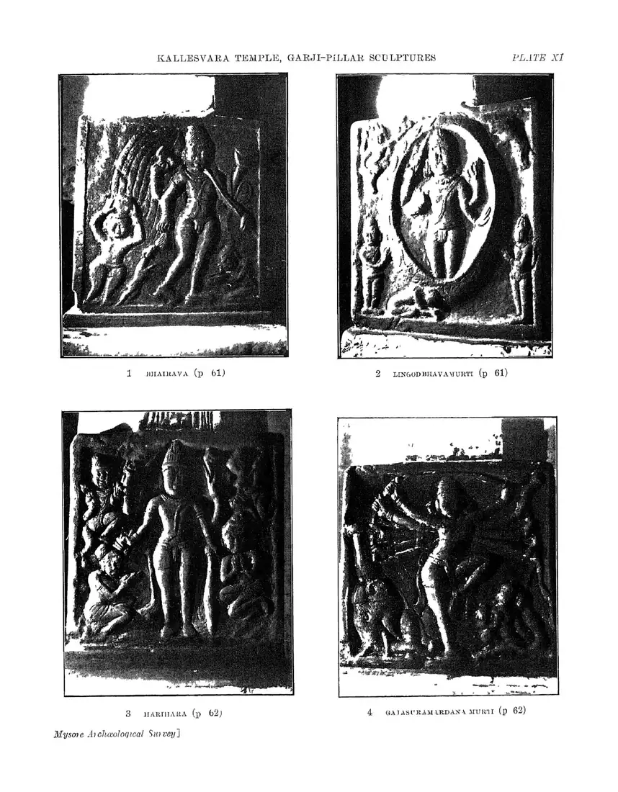
- KALLESVARA TEMPLE, GARJI-PILLAR SCULPTURES 1 BHIAIRAVA (p 61) 2 LINGODBHAVAMURTI (p 61) 3 HARTHARA (p 62) 4 GAJASURAMARDANA MURTII (p 62)
4. North-east pillar —
South Face. —A vigorous representation of Gajāsura-mardana-mürti (Pl. XI, 4). Śīva is eight-handed and is dancing. To his right we may see the head of the elephant demon and to the left the figures of a mother and child. The latter figures may be Pārvatī and Śkanda.
East Face. —Lakshmī seated on lotus and attended by chāmara-dhārīnīs.
In front of the open vestibule there are two slender pillars of the Nonavinakere type with cubical, cylindrical, bell, drum, vase and wheel mouldings. On the faces of the base, here again as in the case of the navaranga pillars, are carved relief sculptures as follows —
South pillar.—
East Face. —A well-carved elephant.
North Face. —God Venkatēśa standing with abhaya, chakra, śankha and katihasta. He wears jatāmakuta and yajñōpavīta.
North pillar —
South Face. —Śīva seated and eight-handed, wearing rudrāksha and jatāmakuta.
East Face. —A very vigorously represented Mahishāsuramardinī.
The central ceiling of the navaranga is divided into nine panels by bands running at right angles. The panels, however, are plain. In the central ankana there are two Nandis facing the main linga. In the south-west corner of the navaranga are placed the following images —
1. A Saptamātrikā group attended by Vīrabhadra on the right and Ganapati on the left. Among the Saptamātrikās, Kaumārī is left out and there are two figures of Vaishnavī.
Images.
2. An image of Ganapati holding tusk, prayōga-chakra, natural śankha and apūpa. Though the figure is ugly, it appears to be old.
3. Single-headed and two-handed Kumāra riding a peacock: a rude figure, though old.
To the south of the navaranga is a cell containing an image of Virabhadra, about 4\frac{1}{2} ft. high, which appears to be a work of about the 14th century. The sculpture is rudely worked.
Inside the garbhagriha the lunga is about 2\frac{1}{2} ft. high including the pedestal and is flat-topped.
Kēsava temple
The Kēšava temple at Garjı stands at a distance of about a hundred yards to the south-west of the İşvara temple. It appears to be a structure of the 15th century and of little architectural merit. There is no image in the garbhagriha at present. The pillars of the navaranga and the porch are Dravidian in type with the cubical and octagonal mouldings alternating. On the cubical mouldings appear the relievo figures of Bālakrishna, Yōgānarasımha, yālı, monkey, peacock, devotee, etc.
Part III: Study of Monuments and Ancient Sites › Kadur DistrictYagatı
History
Yagati is the headquarters of a hoblı in the Kadür taluk and is situated at a distance of about 12 miles north-north-east of Kadür. The place has historical associations mostly with the late Vijayanagar and Pāleyagār periods. A certain Rangappa Naik is said to have been ruling over the place and to have had a concubine called Venkati, from whose name the place-name is said to have been derived. Whatever be the truth regarding this story, it is certain that the place was called 'Yagati' during the 16th century when Sadāśivarāya was ruling at Vijayanagar. The emperor's inscription is to be found set up in front of the Viranārāyana temple at the place. The village is surrounded by a fort wall, now ruuned, with a moat outside. Near the fortgate are found the temples of Hanumān and Ganapati. The image in the Hanumān temple is that of Virāñjanēya and appears to belong to the Pāleyagār period.
History
Vianārayana Temple— PAGE
General Description
The temple of Viranārāyana standing in the village appears to be a structure of about the 14th century. It has plain outer walls and thick Dravidian pillars in the navaranga. The image in the main cell is about 4\frac{1}{2} ft. high excluding the Garuda pedestal on which it is standing in samabhanga. In the four hands of the image are held śankha, padma, gadā and chakra. The stone prabhāvali behind the image is ornamented with floral and scroll designs but without the representation of the Daśāvatāras of Vishnu.
The doorways and ceilings at the temple are all plain. The central ceiling is raised on two sets of corner stones and has a low padma pendant in the middle.
Against the walls of the navaranga are placed the following images —
Images
1. A beautifully carved Ganēša image on a mūshaka pedestal.
2. A small image of Yōgānarasīmha
3. A small image of Vīrāñjanēya simply placed on a Garuda pedestal which certainly does not belong to it
On the cubical mouldings of the pillars of the navaranga are carved relievo figures of Hanumān, Garuda, yāli and medallions
Part III: Study of Monuments and Ancient Sites › Kadur DistrictMudigere
Singēsvāia Temple
History; General Description; Navaianga; Vestibule; Bhairava in navaranga; Haihara in north cell
Mudigere is a small village situated at a distance of about seven miles to the south-south-east of Ajjampūr. To the north of the village there is a dilapidated Ēsvara temple which, according to the inscription No 83, Tarikere Taluk, is called the Nārasing-ēsvara temple and was constructed in 1233 A D by three gaudas named respectively Rāma-gauda, Sōma-gauda and Bayicha-gauda.
The temple consists of a garbhagriha enshrining a linga on a round pedestal as at Sōmpura, a vestibule, a navaranga with a cell on the north containing an image of Harihara and a porch on the *east. The outer walls are raised on a basement consisting of four cornices of which the second from the bottom has a row of dentil mouldings. The walls are plain and built of slabs placed on edges. The eaves above the garbhagriha are a little sloping. The brick and mortar tower appears to belong to the 17th century, to which period may also be assigned the porch of the temple with its two Dravidian type pillars.
The navaranga doorway is supported by Šaiva dvārapālas above whom the jambs consist of vertical bands ornamented with scroll and creeper, pilaster and scroll and medallion designs. The architrave has a relievo representation of Gaja-Lakshmī, while the lintel stone is shaped like a gracefully disposed and highly indented eaves-shaped cornice the front face of which is carved with minutely worked beaded hangings. The top of the cornice has at the indentations a series of dentil mouldings projecting upwards.
Inside the navaranga the four central pillars are typically Hoysala in character being lathe-turned and carved of soap-stone. Each of the pillars has a square base and the usual disc, bell, vase, drum and wheel mouldings on the shaft. The ceilings are all a little deep with low pendant lotuses in the centre. The central ceiling is raised on two sets of corner stones with a low padma pendant in the middle.
On the jambs of the vestibule doorway appear scroll and medallion ornamentation.
Vestibule.
On either side of the jambs are pilasters with cubical and eight-sided mouldings. On the cubical mouldings appear figures of damsels in the attitude of either dancing or being at toilet.
Inside the vestibule there is a couchant Nandi. The ceiling of the vestibule is raised on two sets of corner stones with a padma in the hexagonal middle of a Śrichakra.
In the navaranga is placed on a scorpion pedestal a well-worked Bhairava image standing in tribhanga under a floriated prabhāvali. The
Bhairava ia navaranga. god is four-handed and holding broken (possibly sword), trident, damaru and severed human head. The dripping blood from the severed neck is being licked by a dog. On either side of the god are male and female goblins dancing and full of movement. The god wears jaṭā and is shaded by a cobra. He is naked but well ornamented. He wears yajñōpavīta. Since the image is mutilated, it is not being worshipped.
In the cell to the north of the navaranga is enshrined an exquisitely carved image of Harihara. He stands in samabhaṅga holding in
Harihara in north cell his four hands the following attributes: broken, trident, chakra and śankha. He is supported on the right by Pārvatī and on the left by Lakshmī. On the prabhāvali behind the god, there is the representation of the eleven Rudras on the right and of the Daśāvatāras of Vishnu on the left. The pedestal bears the figure of Nandi on the right and that of Garuda on the left. Including the pedestal, the image is about four feet high.
Lakshmī-Nāīāyana Temple
General Description; Main image
At a distance of about a hundred yards to the south-west of the Narasingēśvara temple stands the temple of Lakshmī-Nārāyana which
General description.
appears to be a structure of about the 14th or 15th century. It consists of a garbhagriha, a sukhanāsi and a navaraṅga and is constructed on a high platform. Since a large neem tree has grown just in the middle of the navaranga, all the ceiling slabs have been pulled down and the wall slabs have gone out of plumb beyond repair.
Inside the garbhagriha is enshrined a well-carved image of Lakshmī-Nārāyana in which we can see the imitation of Hoysala sculptures on the one hand and the archaic smile of about the 15th century on the other. The image of the goddess on the lap of the god is well-chiselled.
Main image.
9
Rāmēsvara Temple
History; Old Linga; Venkatēsa
Part III: Study of Monuments and Ancient Sites › Kadur DistrictĀsandī
Situation and Importance
No heading in the body: this section starts at its printed page (66).
At a distance of about a hundred and fifty yards to the north-west of the Narasingēśvara temple we come aross the site of the old Rāmēśvara temple the linga of which was consecrated in 1173 A.D. by Belagauda, the Mahāprabhu of the place, ruling under the Ganga chief Kongulivarma Narasīmha during the reign of the Chālukya king Trailōkyamalla Vikramādityadēva. (E C, Kadur, Tarikere Taluk, 85).
History. The original temple has completely disappeared excepting only for the old Rāmēśvara linga for whom, at present, a mono-cell of size stones has been built The linga is about 2½ feet high and is round-topped
To the north-east of the temple, in the open, stands on a Garuda pedestal an image of god Vishṇu as Venkatēśa (Pl X, 4), holding in his four hands gadā (with buttei ?), piayōgachakia, natural śankha and katihasta The image is carved of granite and stands in samabhanga wearing kīrītamakuta, makarakundalas and yajñōpavīta In its style of workmanship, it appears to belong to about the 11th century A D. and has thus no bearing with the Rāmēśvara temple.
Āsandi
Āsandi is a village in the Kadūr Taluk, situated at a distance of about five miles to the east of Ajjampura. There are several old inscriptions in the village which go to show that the place was one of considerable importance in ancient times and was the headquarters of a nād ruled by the Gangas and Hoysalas From the inscription Kadūr 154 of 1206 A.D., it is learnt that there were at least thirteen Śīva temples at the place formerly At present, however, there are only three of them existing more or less intact.
Gangēsvara and Brahmēsvara Temples
General Description; Outer walls; Open Mantapa; Pillais and Ceilings; Vestibules; Cells
These two temples form a large single homogeneous structure with two shrines side by side and a long common open mantapa in front with two porches on the east, one for each shrine (Pl. IX, 3). The temples are situated immediately to the south of the now dried up old large tank of the village They were constructed in 1191 A D by the local Ganga chief (E. C Kadūr Taluk, 157).
General description. The outer walls of both the shrines are constructed in the same style on an indented square plan. The basement of each shrine consists of four cornices of which the last from the bottom has a row of dentil cuttings The outer walls are relieved by right-angled pilasters at the indentations. Between these pilasters there are turret-bearing single and double right-angled columns on the outer walls of the south cell and turret-bearing double columns only on the outer walls of the north cell. The double columns form niches with unworked panels between them, evidently meant for carving wall images. The turrets are mostly Dravidian in type, those borne by single columns standing under highly florated simhalalātas. The eaves are straight-sided with dentil mouldings above projecting upwards. The original towers, if indeed there were any, have now disappeared.
The common open mantapa whose inner view presents a long three-aisled hall
(Pl. IX, 4), running north to south is entered by two approaches, one on the east and the other on the south.
Open mantapa
On either side of each approach are projecting stone platforms meant probably for the supporting elephants. The outer edge of the mantapa has stone benches all round excepting only on the north side and is skurted by a stone railing whose outer face is carved with figures of turrets, rearing hons, double bell-shaped columns, rhomboidal medallions, etc.
The pillars of the mantapa are all of the usual bell-shaped and lathe-turned variety. Some of the ceilings, particularly the larger ones in front of the shrines, are carved with pleasing designs and figure sculptures representing the Ashta-Dikpālas, mythological episodes like the Rāmāyana, etc. The centres of the ceilings bear medallions inset in gracefully worked squares and also the figures of Vīrabhadra and Tāndavēśvara. The smaller ceilings which are all deep like the larger ones bear low padma pendants inset in circular lotuses, śrīchakras, octagons, stars, etc.
Each vestibule doorway has its jambs carved with vertical bands of minute floral, scroll, medallion and indented pilaster ornamentation. The hintel stones have eaves-shaped cornices bearing turrets and medallions. The ceilings of the vestibules are raised each on two sets of corner stones with a multi-petalled padma pendant in the centre.
Vestibules.
The floors of the vestibules are raised each on two sets of corner stones with a multi-petalled padma pendant in the centre.
The doorways of the cells are similar to the vestibule doorways in their workmanship. The north cell is empty. In the south cell
Cells.
there is a linga on a round pedestal.
Virabhadia Temple
History; Outer walls; Railings at the porch; Tāndavēsvara; Trivikrama; Porch; Navaianga; Western cell; Main Image
From the inscription Kadūr 149 standing in front of the temple it would appear that this temple was constructed in 1205 A D by one Haraha Sāhanī. Therein he is said to have set up the Trimūrtī god Ballēśvara. There are three cells in the temple and there is no linga in any of them. The eastern and western cells have the images of Vīrabhadra, while in the north cell there is a set of metallic images. It is reported that the main linga of the temple which was originally enshrined in the western cell was lost at some period and that the present main image of Virabhadra after whom the temple has derived its name was brought from some other temple at the place and installed here Architecturally the structure appears to have been built in two periods which, however, do not appear to be far removed from each other. The eaves and outer walls of the western cell form a distinct group.
The outer walls of the western cell as also those of the other compartments are raised on a basement consisting of four indented cornices of which the third from the bottom is disc-like. The walls are relieved by right-angled pilasters, those of the western cell being better worked and more ornamented than those on the outer walls of the other compartments. It is only on the outer walls of the western cell that we find small wall images standing under kalasa-bearing niches. Among these wall images we may mention the following: Lady chāmaradhārīnī, Janārdana, Kēśava and lady attendants, Sadāsiva and lady attendants, Brahma, and again lady attendants.
Outer walls. The eaves of the western cell are straight-sided and relieved at intervals by upward dental mouldings. The eaves of the other compartments are a little sloping. The brick and mortar parapet above the structure is of a late period.
Eaves The entrance to the temple is through a porch on the south. On either side of the porch are two beautifully carved railings which appear definitely to have belonged to some earlier temple at the place. The life and movement depicted in the sculptures carved on the inner faces of these railings suggest that the railings hail from c. 900 A.D. and the features are akin to those of the sculptures at Bādāmī and Ellora.
Railings at the porch. On the inner face of the eastern railing is represented, in bold relief, a Natarāja group (Pl. XII, 2). The god has modest ornamentation on the body and wears jatāmakuta and yajñōpavīta. He dances vigorously in the air, while below him and to his left are the attendant figures consisting of a drummer playing on a pot-drum, a piper playing on an instrument which looks very much like a nāgasvaram (the occurrence of such an instrument so early is interesting), a lady cymbalist with her upper body bare, and a pot-bellied Yaksha holding a cobra. Śīva is four-handed with chinmudrā, trident, crossed arm and kapāla. The drapery and girdle are gracefully worked. The edge of the railing to the left of the group is carved with the figure of an open mouthed and trunked makara in the attitude of swooping upon a yāh. On the head of the makara and holding its coiled trunk there is seated a two-handed figure and further up there is an obscene group.
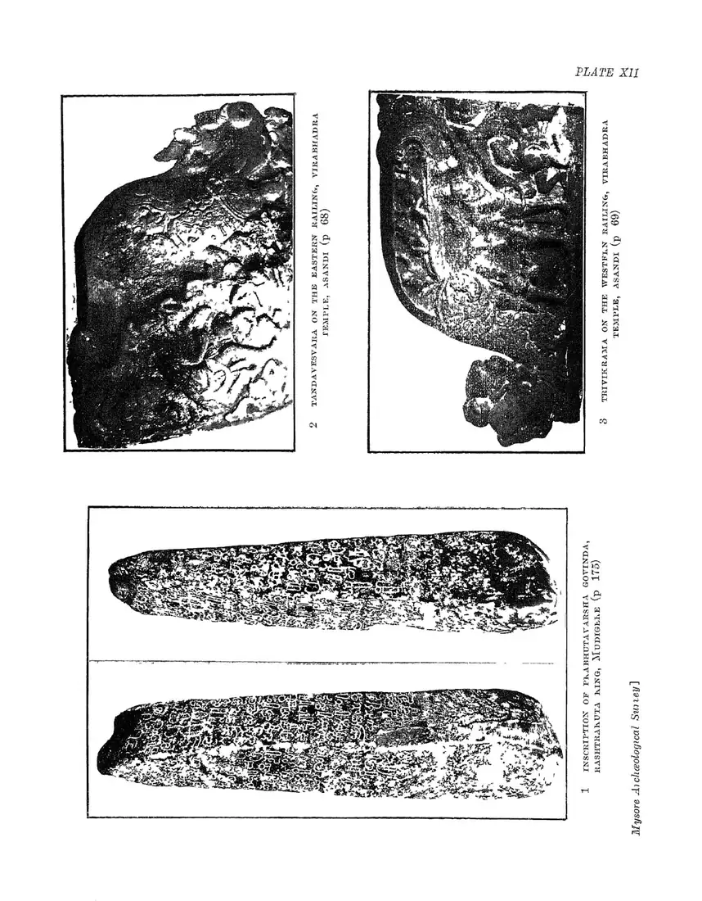
- 2 TANDAVESVARA ON THE EASTERN RAILING, VIRABHADRA TEMPLE, ASANDI (p 68) 3 TRIVIKRAMA ON THE WESTFIN RAILING, VIRABHADRA TEMPLE, ASANDI (p 69) 1 INSCRIPTION OF PRABHUTAVARSHA GOVINDA RASHTRAUTU KING, MUDIGELE (p 175) Mysore & icheological Survey ]
Tandavesvara On the inner face of the western railing is depicted the Trivikramāvatāra of Vishnu (Pl. XII, 3) To the right, king Bali is making the gift by pouring the dhārā water on the hands of Vāmana who is depicted here as a Brahmachārīn with kaupīna, yajñōpavīta, and śikha. He is standing under an umbrella. To the left of this group is represented the Trivikrama form of Vishnu. He is four-handed with lump(?), prayōgachakra, śankha, and stretched arm. Parallel to the stretched arm the left leg of the god is also stretched upwards towards the Brahmalōka on the one hand and also towards the gigantic head of king Bali on the other. Underneath the stretched leg, Garuda is shown in the attitude of forcibly bringing a demon as captive. To the extreme right of the railing is represented a swooping makara in the attitude of having swallowed a yāli. On the trunk of the makara is seated a two-handed figure. At the top of the railing are represented three flying figures, two male and one female, as entering the open mouth of a gigantic hon.
The porch is edged by stone benches having railings. The two front pillars are bell-shaped. The ceiling is delicately carved with minute ornamental figure sculptures of the Ashta-dikpālas and marching warriors, dancing groups, etc. On a square medallion in the centre is carved Nataiāja.
The four central pillars of the navaranga are bell-shaped and are skilfully carved with pleasing mouldings and beaded hangings as in the pillars of the Tripurāntakēsvara temple at Belgāmi. The central ceiling is more elaborately carved than the ceiling of the porch.
The doorway of the western cell is a good piece with nicely worked vertical bands of floral, scroll and other ornamentation on the jambs and with a Gajalakshmi group on the lintel. The ceiling of the garbhagriha is simple in design but pleasing in its detail. It has the representation of the corn of the lotus in the centre.
The image of Vīrabhadra which is about 3\frac{1}{2} feet high stands under a kīrtimukha holding sword and shield in the two hands. The other image of Vīrabhadra in the eastern cell is smaller in size and inferior in workmanship.
Chandikēsvara Temple
This temple stands near the village entrance and consists actually of two linga shrines with a common mantapa in front which, at present, is partitioned into two by the construction of a rubble wall in the middle. The linga in the south cell is called Chandikēśvara by the villagers. The outer walls are plam excepting only for the right-angled pilasters relieving them at intervals. The pillars are, as usual, of the bell-shaped and lathe-turned variety. There are no figure sculptures in the temple
Part III: Study of Monuments and Ancient Sites › Kadur DistrictNandī
Mallēsvara Temple
Situation and History; General Description
This village is small and insignificant and situated at a distance of about 5\frac{1}{2} miles to the south of Tarikere. There are three old inscriptions at the place referring to two Šiva temples built during the 13th century. One of them is the Mallešvara
Situation and history temple which stands to the north-east of the village.
The temple is a low roofed building of no architectural merit. The outer walls are of mud and the doorways, pillars and ceilings are of pot-stone. The doorways are simple in design, though Hoysala in character. The pillars are Dravidian in style with cubical, eight-sided and sixteen-fluted mouldings. The ceilings consist of plain slabs. The linga inside the garbhagriha is low, being about a foot in height including the pedestal
Ruined Temple
To the north of the village near a peepul tree there stood another temple of Šiva. Since it became completely ruined, the villagers have constructed another building with mud walls and country tiles. There are only the old linga and two inscriptions belonging to the ancient days
Part III: Study of Monuments and Ancient Sites › Kadur DistrictShingāpuia
Yōgānarasimha Temple
Situation and history; Outer view; Temple Front; Navaranga; Ugranarasimha; Main Image
In the 'bechirak' village of Shingāpura which lies overgrown with jungle at a distance of about two miles to the north-west of Rangenahallı, a railway station on the Tarikere-Narasimharājapura line, there stands the dilapidated Yögānarasimha temple
Situation and history which appears to belong to the 14th century A.D.
The outer walls of the temple which are built of soap-stone slabs are plain except for the right-angled pilasters relieving them here and there.
Outer view. They are raised on a basement consisting of three plain cornices the last of which from the bottom has been ornamented with a row of dentil cuttings. On the outer walls of the garbhagriha, there are not only the right-angled pilasters but also medallions and a few figure sculptures between the pilasters. The eaves are slightly sloping and plain. The parapet above is also plain and about a foot in height. The tower which is of stone rises in the form of a bulbose dome over a square pyramidal tier.
The front of the temple has completely collapsed. In addition to the square garbhagriha, sukhanāsī and navaranga there appear to have been originally a wide porch and an open mantapa in front as also a mahādvāra with a mantapa to the south-east. The mahādvāra and the mantapa are now in ruuns. The open mantapa had a flight of steps on the east which was supported by elephants on either side.
Only the right jamb of the navaranga doorway is existing now. On it are carved the sculptures of a Vaishnava dvārapāla and an erect seven-hooded cobra.
Navaranga
The four central pillars of the navaranga are Dravidian in type. Each of them has two cubical mouldings, one on either side of a sixteen-fluted shaft having an octagonal band in the middle. The central ceiling of the navaranga is divided into nine panels with a padma in each panel.
Against the south-west wall of the navaranga is placed on a pedestal an Ugra-Narasimha image which is carved under a well-worked simhalalāta. The image may have originally been existing on the east face of the projection of the tower over the vestibule.
Inside the garbhagriha is seated on a Garuda pedestal an image of Yōgānarasimha with crossed legs secured by a yōgā-patta about the knees. The image shows good workmanship.
Main image
Part III: Study of Monuments and Ancient Sites › Kadur DistrictSōmpuia
Pasanna Sōmēsvaia Temple
Navaranga Pillais; Pillars of Mukhamantapa; Paiapet and Tower; Metallic Objects
The Prasanna Sömēsvara temple at Sömpura has been described in the Annual Report of the Department for 1926. The inscriptions which refer to the temple are of the 13th century and they record only grants to the institution. There is no indication therein as to when exactly the temple was built or by whom it was constructed.
Architecturally, however, the temple appears to have been built in two stages.
The earlier stage of the building appears to comprise of the garbhagriha, sukhanāsī and navaranga with possibly a porch in front. The later stage appears to be represented by the mukhamantapa only with its ornamental Hoysala-Dravidian pillars. The mukhamantapa appears to have been constructed during the 14th century. The main temple which has an ornamental frieze of rhomboidal flowers in the middle of its outer walls, suggests affinity with the late Chālukya temples and may therefore be assigned to about the 12th century A.D.
The garbhagriha and navaranga are square in plan and have flattened sides.
Navaranga pillars The pillars of the navaranga are of the bell-shaped and lathe-turned variety. The pillars of the porches on the east and south are also bell-shaped, but on their disc, bell and vase mouldings appear the scroll, the bead, the chain and the medallion ornamentation with beaded and garland hangings on the bell
Each of the pillars of the mukhamantapa has two cubical mouldings between which the shaft is sixteen-sided and secured by three octagonal bands ornamented with floral and other designs. On the cubical mouldings appear low relievos of scroll designs and of peacocks
Pillars of mukhamantapa. The parapet of the temple has several minarets and is provided with conduits of the plantain bud shape. On the tower are found several small arches which indicate Moslem influence. Thus the parapet and the tower, though of stone, cannot have been constructed earlier than the 15th or 16th century.
During the course of repairs to the temple several metallic objects were discovered in the double roof of the temple. They were examined and a photograph of them was taken. Among them there are ornamental lamp-stands and some vessels of about the 17th century. Some of the objects bear inscriptions in Kannada and Nandināgari
Part III: Study of Monuments and Ancient Sites › Kadur DistrictChennaguri
The Bālabasavas
The sect; Dedication
In a village called Mantragatta, at a distance of about 2½ miles north-west of Chennagiri, there is a sect called the Bālabasavas among the Adı-Karnātakas, whose profession it is to wander from village to village singing, in their way, the lyrics of early bards. Though ostensibly they profess not to collect alms, verily they are accompanied by one or two of their kinsmen who invariably collect them while the Bālabasavas appear to move about unmindful.
From their very birth they are dedicated to the Lingadharma, that is the woiship of Lord Śiva. They are the disciples of Gōnībasavēśvara of Karlahalli in the Dhārwār district. Clad in a conventional dress which will be presently described, the Bālabasavas, when on tour, begin by invoking Śiva, Rudra, the several Basavas, the Siddhas, etc., in long notes to the accompaniment of the nāga-tambūra they carry. The tambūra has four wires which are all tuned to the same note and the wires are beaten with the right middle finger as the lyrics are sung. After the invocation, the Viraśaiva tatvas are sung.
Gaib
No heading in the body: this section starts at its printed page (73).
The special garb of a Bālabasava would generally be in the following manner:
Garb. pyjamas, such as the Muhammadans wear, red or kāvi long coat; conical cap of leather with embossed figures of the linga, Sun, Crescent and Nandi; linga enshrined in a leather bag, rudrāksha necklaces, brass bracelets, armlet of peacock feather on the right arm; jungles on both the arms, rings, etc. On the right fore-finger two rings are worn one of them has the figure of Nandi on its boss and the other has the linga. The ear pendants consist of rudrāksha drops attached to a silver sheet shaped like the hood of a cobra. Two brass rattles are worn on the left thumb to measure time while singing. A staff is held in the left hand, while the tambūra is played with the right. Over the long coat, variously coloured long flowing garments are also worn, two red cloaks are worn, one in the upavīta mode and the other in the prāchīnāvīta mode. Cotton bags are suspended at the left wristlet. The forehead, nose, eyelashes and temples are all daubed with the sacred ash, while on the eyebrows and in the middle of the forehead red sandal paste is smeared.
10
Part IV: Numsmatics
Study of a private collection
No heading in the body: this section starts at its printed page (74-75).
During the year under report the Śātavāhana and other coins discovered at the Chandravalli excavations were studied and a draft catalogue thereof was prepared. The latter is being revised and it is hoped to publish it in a subsequent report.
Among the several coins received from private parties for examination and return may be mentioned a set received from Mr M Bharat Kini, B A, of Tellichery. The set consisted of sixty coins of miscellaneous description as follows—
Among the coins, two are of silver and the rest of copper Of the two silver coins, the larger one with the mosque of Madina on its obverse is foreign The smaller coin is of Hyderabad The copper coins belong to the well-known types of the 18th and 19th centuries
1 Mysore Coins 12 (Hyder 4, Tipu 5, Krishnarāja Wadiyar III 3)
2 Portuguese coins—5
3 East India Company—17
Obverse . Shield; reverse . Scales of justice (1791) .... 1
Obverse : Do reverse Do (thick specimens of 1804) . 2
Obverse . Do reverse Do (thick and small of 1813) 1
Shield on one side and the date 1729 on the other ... 1
Do with legend on the reverse .... 1
Indistinct obverse and the date 1759 on reverse .... 1
Bombay pice .. 4
Illegible . 4
Other specimens . ... 2
4. French coins—5
Cock type .... 1
Legend . 1
Fleur-de-ls and dates 1752 and 1787 ... 3
5. George IV—(1830)—1
6. Queen Victoria—5 Of these, one is of Ceylon, another is a brass coin made in Germany and the rest are well-known types of India
7 Dutch coins bearing the dates 1746 and 1790 .... 2
8 Miscellaneous coins ... .. .. 11
Sarawak .... .. .... 1
Gwalior . .. .... 1
Cutch ... . ... 2
Indore . . .... 1
Others . . .. 6
Twenty coins were acquired for the Office Museum during the year of which thirteen were purchased from the Director of Archæology, Gwalior State, Gwalior, and seven were presented by the Central Museum, Nägpur, through the General Secretary to the Government of Mysore A statement of these coins is subjoined below.—
Coins from Gwahor
(6 copper, 2 silver and 5 billon)
No Metal Details Remarks
PUNCH-MARKED COIN
1 Copper Obverse Solar symbol, etc.
Reverse Symbols, not clear. cp. C.B.M. pl XLI
NAGA COINS
Obverse Bull walking to left
Reverse Legend, not clear
Reverse . Trident and legend (not clear) cp C M.I. pl. II,17
Obverse . Wheel with spokes
Reverse . Legend (only partial)
Obverse . Bull walking to right
Reverse Legend (indistinct) Do 22
Reverse Legend Do 19 to 21
INDO-SASSANIAN .
7 Silver GADHIYA— (c 9th century A.D.)
Obverse . . and dots
Reverse Altar with attendants cp I.M.C., Vol. I,
Pl XXV
No Metal Details Remarks
8 Silver MIHIRABHOJA OF KANAUJ—(c. 9th century)
Obverse Boar standing to right
Reverse Legend
SULTANS OF DELHI. cp I.M.C. vol. I pl.
9 Billon ALAUDIN MOHAMED SHAH KHILJI II—A H. 702 No 220
SULTANS OF GUJERAT
Coins from Nāgpui
(Seven potin coins.)
No. Details.
ŚRI SATAKARNI III (Gautamiputra).
1. Obverse —Elephant with trunk upraised to right Legend in prākrit ‘Rāña Sirī Sātakanisa’
Reverse .—Ujjain Symbol.
PULUMAVI II (Vāsishthīputra).
2. Obverse —As in the above, with legend reading. Rāna Sirī Pulumāvisa
Reverse .—Ujjain Symbol.
SATAKARNI.
3. Obverse —As in the above, with legend reading
Satakanisa.
Reverse —Ujjain Symbol
ŚIVA ŚRI PULUMAVI III
4. Obverse .—As in the above, with legend reading Rāna Siva Sirī Pulumāvisa
Reverse .—Ujjain Symbol
ŚRI SKANDA SATAKARNI
5. Obverse —As in the above, with legend reading. Srī Khada Satakanī
Reverse —Ujjain Symbol No. Details
SRI YAJNA SATAKARNI
6 Obverse. —As in the above, with legend reading: Rāna Sīrī Yāña Sātakanisa.
Reverse —Ujain Symbol
SRI KUMBHA SATAKARNI
7 Obverse —As in the above, with legend reading: Sīrī Kumbha Satakani.
Reverse —Ujain Symbol.
————
Part V: Manuscripts
The Dynasty of Kalale
(Pl XIII, 1).
(An account of the Chiefs who were the Dalvoys at the Mysore Royal Court.)
Introductory
The manuscript; The paper; Contents; Agreement between the chiefs of Mysore and Kalale
This is a paper manuscript obtained for study and review from Mr K Ranga-svamy Iyengar of Kaļale (Najañgud Taluk, Mysore District).
The manuscript It contains 29 leaves of foolscap quarto size, stitched and cloth-bound The 'frontispiece (Pl XIII, 2) contains a free-hand drawing in ink representing the Mysore King Krishnarāja Odeyar II as seated on throne attended by a chāmara-bearer to night, with Dalvoy Dēvarājayya and Karāchuri Nañjarājayya seated on the ground in front The plate bears the title: ' Karnātaka Samsthānadalli kīrti padadantha punya-śarīragalu ' (the gifted personages that attained fame in the Karnātaka country) Below the figures of the King, the Dalvoy and his brother, are written their names in Kannada All the figures wear pagadis on head, while the Dalvoy and his brother are represented as wearing long coats and necklaces in addition to sword-bearing girdles. The Dalvoy and the Rāja both hold flowers in their right hands. The manuscript proper begins from the third leaf from where the written leaves are all numbered in the margin and are written on both the sides Each side has about 15 lines of Kannada prose on the average The writing is generally easy to read in spite of there being some times over-writings, deletions and erasures of lines and words, not to speak of the inter-lineal and marginal additions and later insertions from a different hand here and there.
The paper used is hand made and the sheets have water marks consisting of lines, designs and legends The lines are clear, but the designs are not always quite clear, being mostly at the back of the bound manuscript The designs consist of flower, animal or ornamental figures with or without legend as follows —
The paper
1 Creepers disposed like a shield and arranged in pairs symmetrically on either side of a panel in the midst of which appears the figure of what looks like a soaring bird Below and above there are two star-shaped ornaments while at the top is an open flower. Underneath the design occurs the legend 'N O T A R O'
2. A prancing humpless short-horned bull below which occurs the legend 'F B'
3 An ornamental two-footed cucumber-shaped casket or vase with a spear-like short knob at the top. In the middle of the design appears the legend 'G'
O F
4 A ridden reined charger with a warrior seated on it in the attitude of charging with his lance like Alexander No legend
5 A prancing stag No legend
Some of the sheets bear the one or the other of the following legends, but without any design COSTA, \begin{array}{c} \text{A} \text{G} \\ \text{C} \end{array} One of the leaves has the numeral figure '4' in a corner
The quality of the paper is akin to that of the paper used in the case of the manuscript of Peixoto,* though the water marks appearing there are different. Since, on the one hand, the account of the present Kalale manuscript stops short with the accession of Krishnarāja Wadiyar III in 1799 A D, and on the other, the language of the manuscript does not show any traces of being influenced by the English language, it appears very probable that the manuscript was produced in 1799 A D or shortly after It may however be noted that the author has not named himself.
But certain factors contribute to suggest that the manuscript is merely a draft meant perhaps to be copied some time later after making the necessary corrections, etc. The corrections, in some cases, have been made by the author himself by overwriting on the lines and words, particularly when dates have been mentioned for the closing of reigns. There are also a few interlineal additions here and there. In two or three places some blank space seems to have been deliberately left out in the first instance and later filled in, though not completely, by insertion, in a different hand, of Sanskrit verses with explanation in Kannada prose eulogising some of the notable Dalvoys. In one case there is a guiding note† for the copyist or the reader to the effect that the matter written a little further on has to be read along with some other matter as indicated. Further in a third hand and more recent ink there are some marginal notes. Such corrections and additions could not naturally be avoided inasmuch as the manuscript purposed to cover a pretty long period of twohundred years. Though the facts stated conformed mostly to the family tradition, the dates and, in some cases, the names had perhaps to be verified with reference to the other sources. And it may be remarked here that it is only these corrected dates in most of the cases that tally with the dates mentioned in the Annals of the Mysore Royal
For description see M A R, 1937, pp 82-3
† P 16 of the MSS Family and elsewhere. In a few cases, indeed, differences can be noted; but these will be dealt with in the comparative footnotes at pertinent places under the text of the manuscript
With regard to the contents, the purpose of the author has been mainly, as suggested by the title, to trace the genealogy and achievements of the Kalale Chiefs from the time they became the Dalvoys at the Mysore Royal Court. The assignment of the wars according to the reigns is generally correct in the manuscript. Some of the wars mentioned by the manuscript but not supported by the Annals, are corroborated by Wilks and others on other grounds. For details see the footnotes under the text. But the manuscript presumes that the Kalale family took part in all the military campaigns of the Mysore kings, so that in a few cases, particularly those pertaining to earlier periods, wars which could not have been fought by the Dalvoys have been fathered on them. Thus though we know as a matter of fact that the first Dalvoy was appointed in 1616 by Rāja Odeyar, he has been stated to have won for his king even the wars that were waged, according to the Annals of the Mysore Royal Family, a decade earlier
Another statement made in the manuscript is that there was an agreement between Rāja Odeyar of Mysore and Karikāla Mallarāja Odeyar of Kalale about the hereditary Dalvoyship of the Kalale family. But the accounts of the Annals in this respect differ and the fact of there having been any agreement as alleged by the manuscript is not supported by any evidence earlier than 1758 A.D. The Chikadēvarāja Vamśāvali written about 60 years earlier is quite silent about it. It is however true that from the time of Komārayya (c. 1638) more and more members of the Kalale family held the office. When Karāchūri Nañjarājayya of Kalale and his elder brother Dalvoy Dēvarājayya were most influential with the reigning king Krishnaraja II who was the son-in-law of Karāchūri Nañjarajayya, the office was considered as hereditary and a 'bhāshā-patra' to that effect was recorded (see Nanjangud 267 and 268). It is, perhaps, this evidence that has prompted Rice and Wilks to beheve in the traditional account. Another manuscript named the Mysore-Doregala-Pārampare Kaifiyat of c. 1799 (M A R. 1936, pages 54-58) also mentions the agreement. But the foot-notes given further on under the different Dalvoys witness to the contrary. The Dalvoyship was first conferred by Rāja Odeyar upon Karikāla Mallarāja of Kalale who was his suster's son. But the latter is said in the Annals to have become indifferent and to have returned the signet of the office with his grandson Nandināthayya who was a mere boy. Thereupon the king, becoming dissatisfied at the conduct of his nephew, appointed Bettada Arasu in the place. Nandināthayya is not at all mentioned in the Annals as having held the post at any time, while the present manuscript states that he held
Contents it during at least three generations of Mysore rules from the time of Rāja Odeyar. During the reign of Kanthīrava Narasarāja Odeyar as many as eight Dalvoys are mentioned in the Annals, while the Kalale manuscript mentions only Komārayya. Further the name of Vikramarāya who is well-known to have been the Dalvoy at the Mysore Court under Rāja Odeyar II does not at all occur in the manuscript, while an inscription at Nanjangud (Nj. 9) mentions him as the Dalvoy. Dalvoy Komārayya is said in the Annals (p. 95) to have been the last of a series of six Dalvoys who served during the reign of Dodda-Dēva-Rāja Odeyar. In the Annals (p 156) a list of three people of the Kallahalli family who served as Dalvoys during the reign of Kanthīrava-II is furnished, while in the manuscript these three people have been mistaken for members of the Kalale family ( see note 43). The name of Dalvoy Virarāja, father of Dēvarāja and Karāchūri Nañjarāja is omitted in the list of the Dalvoys furnished by the manuscript. But according to the Annals, he is known to have held the post
Genealogy and dates of the Mysore kings
No heading in the body: this section starts at its printed page (81).
As regards the mention of the several reigns of the Mysore kings, the manuscript generally supports the details given in the Annals and other Genealogy and dates of the Mysore kings. books, while the name of Rāja Odeyar II is mentioned as Chāmarāja Odeyar II. The reign of Dēvarāja Odeyar (II) uncle of Chikadēvarāja Odeyar, which has been omitted in the Annals and the books of Rice, Wilks, etc., is also omitted in the manuscript. The dates mentioned for the several reigns and sometimes corrected by overwriting are in general agreement with the dates given in the Annals and other books. The few differences, here and there, are noted in the footnotes under the text, as for instance, the discrepancy with regard to the date 1771 given for the death of Chāmarāja Odeyar, successor of Nañjarāja Odeyar (son of Krīshnarāja Odeyar II)
11
Genealogy of the Kalale chiefs
Importance
No heading in the body: this section starts at its printed page (82-84).
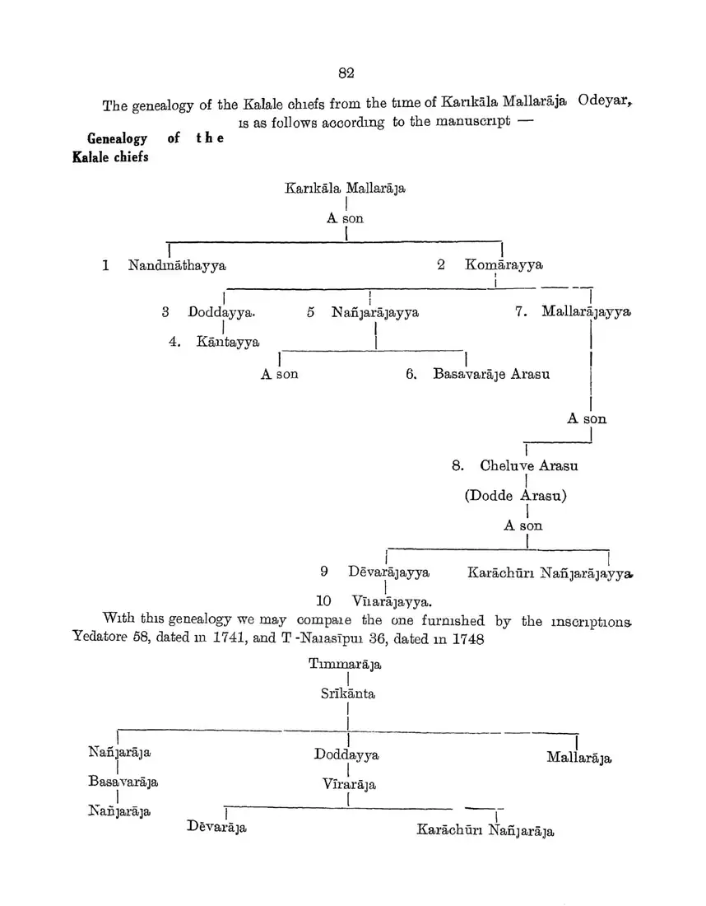
- 82 The genealogy of the Kalale chiefs from the time of Karikāla Mallarāja Odeyar, is as follows according to the manuscript — Genealogy of the Kalale chiefs With this genealogy we may compare the one furnished by the inscriptions Yedatore 58, dated in 1741, and T-Naasīpu 36, dated in 1748
It may be noticed that Vīrarāja, father of Dalvoy Dēvarāja, and son of Dodde Arasu or Doddayya is not named in the manuscript Dodde-Arasu or Doddayya is wrongly mentioned in the manuscript as the son of Cheluve Arasu (No 8), while the inscriptions mention Šrikānta as his father. The Nañjarāja Yāsōbhūshana (Gaekwad Oriental Series, No XLVII, v1) which is a champu work of the time of Karāchūri Nañjarāja gives the following genealogy and supports the evidence of the inscriptions —
Referring now to the genealogy of the manuscript, we can at once see the mistake committed therein by looking at the names of the ancestors of Dalvoy Dēvarāja (No 9). His father ( i.e. , Vīrarāja—not named) was a son of Dodde Arasu, who is not mentioned as a Dalvoy. The latter's father is said to be Cheluve Arasu which is of course a mistake in view of the evidence of the inscriptions, as said above, and the evidence of the champu work Nañjarāja Yāsōbhūshana. The name must be Muppina Kānta or Šrikānta whose father was Timmarāja and grandfather Karikāla Mallarāja. But the manuscript names the great grandfather of Dodde-Arasu simply as Dalvoy Mallarājayya and names the latter's great grandfather as Karikāla Mallarāja, mentioning him as a contemporary of Rāja Odeyar of Mysore. Thus according to the manuscript, there were nine generations from Karikāla Mallarāja to Dalvoy Dēvarāja, while according to the inscriptions and the champu work mentioned above, the generations were six only. Hence we have to conclude that the genealogy furnished by the manuscript is faulty, for the evidence of the inscriptions and of the champu work cannot both be wrong. The genealogy furnished in the Vēnupurada Kshatriya Vamśāvali (Cat. of the Govt Or Lib K B 424) makes clear the mistake committed in the manuscript. According to it Karikāla Mallarāja had three sons, viz. , (1) Mallarāja, (2) Timmarāja and (3) Nañjarāja. Among the five sons of (1), were the Dalvoys Nandināthayya and Komārayya, while Dalvoy Doddayya was the son of Muppina-Kānta and grandson of Timmarāja (2). Thus Komārayya and Dalvoy Doddayya were cousins, but not father and son, though Komārayya is stated in the manuscript to have had a son named also Doddayya. According to the Vēnupurada Kshatriya Vamśāvali, Komārayya is stated to have had two sons called Dodda Mallarājayya and Chikka Mallarājayya, but the manuscript mentions three sons, of whom the last is named Dalvoy Mallarājayya and is mentioned wrongly as the great grandfather of Dalvoy Doddayya, who appears to have been in fact his uncle.
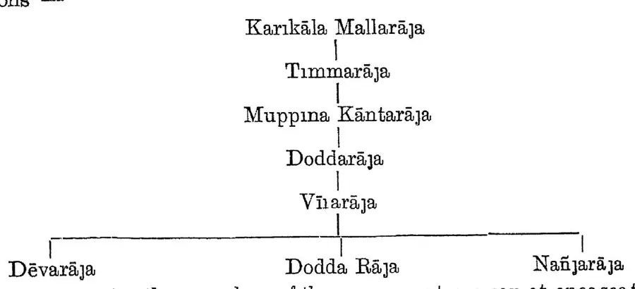
Thus the genealogy furnished by the manuscript cannot be reconciled with that of the inscriptions or other source books. The dates and events mentioned are generally in agreement with known facts, though in a few cases pertaining to earlier periods some discrepancies have been noted. The manuscript may therefore be regarded as a version of family tradition recorded in c. 1799 and having its own obvious faults. At any rate, some of the events mentioned in it find corroboration elsewhere, though they may have been omitted in the Annals. The touch of romance introduced between the Padshah's ( z.e. Aurangazeb's) daughter and Dalvoy Doddayya appears to be a matter of pure family tradition, not supported anywhere else.
General Summary of the Manuscript
Part V: ManuscriptsGeneral Summary of the Manuscript
Kaikāla Mallaiāja Odeyai
Mysore and its neighbours; Sri Ranga Rāya; Rāja Odeyer; The Ummattūr Chief; Rāja Odeyar and Kaikāla Mallaiāja Odeyar
Formerly while Karikāla Mallarāja Odeyar was the crowned chief of Kalale ruling over a country fetching a revenue of about 40,000 Mysore and its neighbours. Rāja Odeyar of Mysore was ruling in peace a country consisting of 33 villages and yielding a revenue of over 25,000 gadyānas. At Seringapatam was ruling Śrī Ranga Rāya 2 who had made himself so powerful that Rāja Odeyar 3 of Mysore befriended him against the neighbouring. Pāleyagārs who had, at this time, become turbulent and troublesome.
Śrī Ranga Rāya of Seringapatam suffered from carbuncle some time later. No treatment was effective, on the other hand the disease became gradually aggravated. Srī Ranga Rāya felt that he could get rid of it only by offering worship to the gods and decided upon going on pilgrimage to Tirumakūdlu and other holy places and paying obeisance to the Pañcha-lingas at Talkād. He considered that even if he should die while on pilgrimage, his life would at least serve its purpose.
1 Regarding the genealogy of the Kalale chiefs see Introduction
2 Elsewhere mentioned as Tirumala Raya (Rice' Mysore and Coorg from the Inscriptions, p 127, Wilks' History of Mysore, Vol I, p 27)
3 But see the Annals of the Mysore Royal Family, pp 21ff. It was Raja Odeyar who was one of the most powerful rulers at the time, he had even worsted Srī Ranga Raya more than once in battle.
Thus looking out for a friend who could take charge of the administration of his kingdom during his absence, he sent for Rāja Odeyar of Mysore and made over Seringapatam to his charge. 1 While doing so he said that Rāja Odeyar might govern the country so long as he remained on pilgrimage, that is, till his disease was cured and he would be able to return, but in the event of his death, he said that the country might be handed over to his cousin, the chief of Ummattūr 2
Śrī Ranga Rāya set out on pilgrimage, but only to die soon after Thereupon Rāja Odeyar strengthened himself at Seringapatam and even ascended the throne there on Thursday, the tenth lunar day of the dark half of Māgha in the year Saumya, Saka 1535. 3 At this the Ummattu chief sent messengers to him, entreating him to make over Seringapatam to him inasmuch as he happened to be the cousin of Srī Ranga Rāya But Rāja Odeyar evaded the demand, professing friendship at first, but asserting later that Seringapatam was given to him alone The chief of Ummattūr was weak and hence made efforts to secure the possession of Seringapatam by seeking the aid of the neighbouring Pāleyagārs
On hearing the news, Rāja Odeyar planned to make an alliance with the powerful Kalale chief, Kārikāla Mallarāja Odeyar, who was an enemy of the Ummattūr chief 4 and had the support of his father-in-law, the Yalandūr chief, who was the lord of an extensive territory 5 With his help he further thought of subduing the neighbouring Pāleyagārs also and acquiring their provinces Karikāla Mallarāja was thus sent for and with several persuasions and promises was won over to his side A written agreement 6 was entered into with him in front of his family deity Chāmundi to the effect that so long as the two dynasties endured the descendants of Mallarāja should hold sway as the Dalvoys of the Mysore Royal Court while the descendants of Rāja Odeyar should rule over Mysore It was further agreed that they should together strive to retain Seringapatam without making it over to
1 Of this transaction it is said that foreseeing his inevitable subjugation by Raja Odeyar, he made a virtue of necessity in retiring voluntarily (Mysore Gazetteer, Vol V, p 808)
2 Cp Wilks' History of Mysore, Vol I, p 27, Mysore Gazetteer, Vol V, p 861
3 8th February 1610 A D This date is given for the acquisition of Seringapatam in the Annals (p 45) while the date of the accession is stated as 21st March 1610, about a month and a half later
4 The rivaliy between the Ummattur and Kalale chiefs was well known For details see the MSS Venupurada Kshatriya Vamsavali (Cat of Govt Or Lib K B 424) It is said that one of the Ummattu chiefs put an end to all the members of the Kalale family, excepting only a child named Mallaraja (e Karikala Mallaraja) who was the nephew (sister's son) of Raja Odeyar of Mysore Cp Annals, p 47
5 Cp Venupurada Kshatriya Vamsavali (Cat of Govt Or Lib K B 424) for details the Ummattür chief and should also curb the neighbouring Päleyagärs Nandinātha Arasu, grandson of Karikāla Mallaiāja, was accordingly appointed the Dalvoy on the tenth lunar day of the bright half of Mārgaśira in the year Nala 1 (8th December 1616 A D.)
Nandināthayya
Conquests during the time of Rāja Odeyar; Conquests During the rule of Chāmarāj; His conquests during the reign of Chāmarāja II; Kanthīrava Narasarāja
Nandināthayya now led the combined armies of Kalale and Mysore against the neighbouring powers 2 He defeated and subdued the Conquests during the time of Raja Odeyar chiefs of Bannür, Talkād, Mūgür, Hullahallı, Bilikere, Heggadadēvanaköte, Kattemalalavādı, etc In the meanwhile Karāchüri Nañjaiājayya 3 and the people of Hāgalavādı were creating disturbance with the support of the people of Madura They were all vanquished by Nandināthayya who further marched against and conquered Satyāgāla, Ummattür and Haradanahallı, plundering their elephants and cavalry. Yalandür was, however, bestowed upon Rāma Rāja Rāya. The chief of Tagadür was given protection. All the previous gifts in the country to the temples, Brahmins, etc, were maintained and standardised
On the 13th day of the dark half of Jyēshtha in the year Paingala, Śaka 1543 (mistake for 1540) Rāja Odeyar died after having reigned Conquests during the rule of Chamaraj at Seringapatam for eight years 4 On the tenth lunar day of the bright half of Āshādha of the same year 5 Dalvoy Nandināthayya and others crowned at Seringapatam Chāmarāja Odeyar, son of Narasarāja Odeyar and grandson of Rāja Odeyar During his reign Dalvoy Nandināthayya conquered Maddür and Chennapatna Bhaira Nāyaka, Sāla Nāyaka, Bēlür Krishnappa Nāyaka and others formed a confederacy and marched
1 The Annals pp (45-48) give a different account Nandinathayya is not mentioned as having been appointed Dalvoy ( see Introduction) Between the years 1616 and 1637 A D four offices are mentioned as having held the post Bettada Aiasu, Bannur Linganna, Basavalinganna and Vikramaraya The last was a son of Chamaraja Odeyai and continued as the Dalvoy at the court of Raja Odeyar II also, but he was dismissed during the time of Kanthnava Narasaraja ( see Annals)
2 Cp Annals, p 43 for the conquests All the places are included excepting only Tagadur and Hagalavadı But it would appear that Bannur was conquered in 1606, Yelandur and Satyagala in 1608, Ummattur in 1614 and the other places in 1615, so that it cannot be true that they were conquered by Nandinathayya, if we have to believe the account of the Annals as well as the MSS that the first Dalvoy was appointed by Raja Odeyar in 1616 A D
3 Chief of Alambadı, ibid p 44 From him Satyagala is said to have been conquered
4 Friday, 20th June 1617 A D
5 Thursday, 17th July 1617 A D against him, but the Dalvoy defeated them and conquered Chennarāyapatna and other places. Having plundered all their insignia he built out of them an armoury 1 .
On the 15th lunar day of the bright half of Vaiśākha in the year Îsvara, Śaka 1561 (mustake for 1559) Chāmarāja Odeyar died 2 having His conquests during the reign of Chamaraja II. ruled for 20 years. He was succeeded by his son Chāmarāja Odeyar II 3 who was crowned by Dalvoy Nandināthayya and other notables at Seringapatam. During his reign Nandināthayya 4 defeated Krishnappa Nāyaka of Arkalgūd and wrested from him a large sum of money, elephants and horses, making him also a vassal of the kingdom 5 . Likewise many other chiefs were compelled to pay tributes to Mysore and to make over their birudas like the Hanuma and Garuda staves, conch, discus, makara , thekke , simhalalāta, etc, to the Mysore King.
On the first lunar day of the bright half of Āśvayuja in Bahudhānya Śaka 1562 (mustake for 1560) Chāmarāja II died after having ruled Kanthirava Narasaraja for a year and a half 6 . He was succeeded on the throne by Kanthīrava Narasarāja Odeyar, son of Bettada Chāmarāja Odeyar who was the younger brother of Rāja Odeyar 7 . Some days after the coronation Dalvoy Nandināthayya died
Komāiayya
Ranadulla Khan
Further conquests; Dodda Dēvaiāja; Defeat of Keladī-Śivappa Nāyaka; Extension of territory; Religious gifts and peace; Chikkadēvarāja; Gaganagni
No heading in the body: this section starts at its printed page (87).
The King now appointed his younger brother Komāre Arasu (called also Komārayya) as the Dalvoy. At this time the Bijapur general Ranadulla Khan Ranadulla Khān invaded Seringapatam with a large army. But Dalvoy Komārayya drove him out with his army
2 It is said in the Annals that on this date Chamaraja Odeyar crowned Raja Odeyar II as king and died three days later
3 Named Raja Odeyar II elsewhere
4 But see Annals, p 64. The Dalvoy was Vikramaraya
5 Cp ibid , p 63. The only conquest mentioned is that of Arkalgud
6 28th Sept 1638 A D. The date given in the Annals is 15 days later
7 The date given in the MSS corresponds to 28th Sept 1638. But cp Annals, p 65. The date given there corresponds to 13th Nov 1638
8 As many as eight Dalvoys are mentioned in the Annals, p 94. But the name of Komarayya does not occur, while that of Vikramaraya is omitted in the MSS. See also Ep Car III, Nj 9 of 1643 which mentions Dalvoy Vikramaraya pursuing him to a great distance from the capital 1 He then proceeded to Periyāpatna, besieged and conquered it with rich spoil. From there he marched against Virappa Nāyaka of Madura and subdued him. The territories of Satyamangala, Danāyakanakōte, etc., were annexed and the bundas of the several chiefs were wrested from them Being pleased with him on his return to Seringapatam, the King conferred on him the title 'Pararāja harına Şâidüla' and presented him with various precious jewels, etc. The Dalvoy next conquered Yelavanka-nād and besieged Māgadı 2 whose chief Chikka Kempe Gauda sought his protection by paying tribute Kallür, Kadaba, Turuvekere, Mâyisamudia and other places were then annexed to Mysore. The minor chiefs were all subdued as also the chiefs of Maleyâla and the Konkan. Sametı Rangappa Nāyaka was offered protection and bestowed Ratnagırı, while Srî Ranga Râya was promised support
Thus did Dalvoy Komārayya use to fame, when on the first lunar day of the bright half of Bhādrapada in the year Vikârı, Şaka 1582, Dodda Devaraja, Kanthîrava Vira Narasarâja Odeyar passed away, having ruled for 22 years 3 . He was succeeded by Dodda Dêvarâja Odeyar, son of the younger queen of Dêvarâja Odeyar who was a son of Bõla Châmarasa Odeyar 4
Now Şivappa Nāyaka of Keladı made all the necessary preparations for a war and besieged Seringapatam. But Dalvoy Komārayya Defeat of Keladi marched with all the army against him and totally routed his forces, cutting off the noses of many and looting elephants, horses, etc. Lakshmappa Nāyaka of Narasımhapür (Hole-Narasîpur) who had come to give aid to Şivappa was beaten and humbled, while all his belongings were plundered and Narasımhapür itself was taken.
2 Cp the list given in the Annals, p 68ff. Excepting the reduction of the Magadı Chief and of Maleyala and the Konkan, the other conquests are mentioned. But Wilks (Hist of Mys Vol I, pp 33 35) has mentioned the reduction of the Magadı chief
3 Saka 1581, not 1582. The date is 9th Aug 1659 A D. But in the Annals, p 95, the date given corresponds to 17th July 1659, and Dodda Devaraja Odeyar is said to have come to the throne on Bhadrapada su 10 m Vikarı
4 Dodda Devaraja Odeyar was the third son of Muppina Devaraja and Devajammanni, Annals, p 95. Muppina Devaraja was the son of Bola Chamaraja (Wilks' Hist of, Mys Vol I, p 35)
5 A series of six Dalvoys are mentioned in the Annals p 103, of whom Kalale Komarayya was the last. The conquests of the reign are detailed on p 97, ibid and Wilks, op cit p 37. The siege of Seringapatam by Keladı Sivappa Nayaka and the capture of Narasımhapura by the Mysore Dalvoy are not mentioned in the Annals, while Wilks mentions them The chief of Arkalgüd submitted and was given protection on his agreeing to pay tubute annually. The territories of Şıvappa Nāyaka Extension of territory. of Keladı—like Sakrepatna, Vasudhāre, Hāssan, etc.,—were annexed. Chikkanāyakanahallı, which belonged to the Muhammadan rulers of Bijapur was also captured. The chiefs of Hāgalavādi and other places who came in submission professing friendship were all duly respected and sent back being offered protection. Chokka Nāyaka of Madura who offered war, was beaten and driven out of his province. His territories, namely, Erode, Vāma-nūr, Dhārāpur, etc 1 were all annexed. Trichinopoly was besieged and a large booty in the shape of horses, money and jewels was obtained from Chokkanātha Nāyaka. The precious stones thus obtained were inlaid into the sandals of the king Dodda Dēvarāja. Tributes were levied on Chila Nāyaka and others.
A large number of gifts consisting of precious jewels, etc., were made for the god Venkatēśvara of Tirupati, 2 while all encouragement was given to temples and Brahmins. Thus did Dalvoy Komārayya prosper in peace and power bearing the title 'Pararāja harina Şārdūla'
On the 12th (corrected into 7th) lunar day of the bright half of Phālguna in the year Parīdhāvi, Şaka 1594, Dodda Dēvarāja Odeyar died Chikkadevaraja having ruled for 14 years 3 . He was succeeded on the throne by Srīmad Rājādhirāja Rāja Paramēśvara Jaga-dēkarāja Praudhapratāpa Apratimavīra Kaliyuga Chakravartı Chikkadēvarāja Odeyar 4 who was crowned at Seringapatam by Dalvoy Komārayya, Yalandür Visālāksha Pandit, Tirumalaiengār and others on the 12th lunar day of the bright half of Phālguna in the year Parīdhāvi, Şaka 1594
Dalvoy Komārayya 5 now besieged Gaganagiridurga and demanded tribute from Chikka Kempe Gauda. 6 But the latter offered war and was totally defeated and captured prisoner. The Pāleyagārs who had come to give him aid were all
2 Cp Annals, p 100 for details
3 18th (or 13th) Feb 1673 A D But the date given in the Annals, p 103, is Phal. su 5
4 Evidently the reign of Devaraja II, younger brother of Dodda Devaraja and uncle of Chikkadevaraja has been left out. See M A R 1938, p 72 for details. If, as seems almost certain, he too ruled for a time, the date of the accession of Chikkadevaraja as given in the manuscript and the Annals is bound to be incorrect
5 A list of seven Dalvoys is given in the Annals for the reign, of whom Komarayya and Doddayya are also mentioned (p 115)
12 beaten. Gaganagiri was occupied and the treasure in the palace of 'Chikka Kempe Gauda was looted. The neighbouring Pāleyagārs were subdued and made tributary.
Sahaji Rao 1 of Bangalore was next attacked and his elephants, horses and belongings were all taken possession of. Those who
Bangalore and Trichinopoly
Part V: ManuscriptsDoddayya
Defeat of the Mahratas at Kottatti; Aurangzeb's daughter
While Trichinopoly was being besieged by Komārayya, two great warriors named Jējēghāt and Dādōjighāt 3 who had besieged the fort of Delhi disregarding the Pādshah (Aurangzeb) came to understand that Seringapatam was defenceless at this time since the entire Mysore army was at Trichinopoly. Believing that they could consequently capture the place with ease, they at once arrived from the north and laid siege to the fort of the capital Chikkadēvarāja sent word to Dalvoy Komārayya asking him to return immediately. The Dalvoy, on the other hand, was determined not to show his face to his king without capturing Trichinopoly. Accordingly he appointed his son Dodde Arasu (oi Doddayya) as the Dalvoy in his place and despatched him 4 with the army to Seringapatam. Doddayya marched night and day and arrived near Kasaragere-Kottatti where Jējēghāt and Dādōjighāt were encamping. Here a severe battle ensued in which both these warriors were decapitated and their entire army was captured. 5
When the news reached Chikkadēvarāja Odeyar, Doddayya was received in state and greatly respected. The Pādshāh of Delhi Aurangzeb's daughter (Aurangzeb) became delighted. Since he had taken an oath to the effect that his daughter should marry no other than the person who killed those warriors, 6 he himself came down as far as the Krishnā.
1. Cp Annals, p 110 and Wilks' Hist of Mys Vol I, pp 56-7. It would appear that Bangalore was first in the possession of the Mahratas but subsequently was occupied by Kasim Khan, the Mughal General. The Mysore king is said to have purchased the place
2 Cp Annals, p 113
3 Ibud , pp 113-15 and Wilks, op cit pp 59-61
6 Probably an account of family tradition, not supported by other evidence. For the title conferred on the King, see Annals, pp 115, 141-46
Further conquests
No heading in the body: this section starts at its printed page (91).
But he could not proceed further since the signs were mauspicious. He therefore returned to Delhi, but sent a large number of gifts and titles to Dalvoy Doddayya through his wise messengers, conferring also, at the same time, the title of 'Jagadēkarāja' on the Mysore King and entreating him to send Doddayya to him. The King, however, sent a reply to the effect that Doddayya died in war. At this the Pādshāh became extremely sorry and sent for the sword and portrait of the Dalvoy. The princess was married to the sword, and for the rest of her life she remained worshipping the portrait.
As for Dalvoy Doddayya he led an expedition into Salem, defeated Chinnamanāyaka, and annexed the country. Likewise he annexed Šankhagīrī, Nāmakal, Paramatī, Syādamangala and other pālyapats 1 . Thus did he attain fame as a great warrior and return to Seringapatam in glory.
Part V: ManuscriptsKāntayya
Mūga Kanthīrava Narasarāja; Kāntayya's death and defeat of Nanjaiājayya
Some days later Dalvoy Doddayya died and the Dalvoyship was conferred upon his son Kāntayya by Chikkadēvarāja Odeyar 2 . On the first lunar day of the bright half of Mārgasīra in the year Tārana, Śaka 1629, Chikka Dēvarāja Odeyar died, having ruled for 31 years and 20 days, 3 and was succeeded on the throne by his son Mūga Kanthīrava Vira Narasarāja Odeyar.
During this period Dalvoy Kāntayya 4 besieged Chikkaballāpur, but was killed. The king now appointed his father (? uncle) Nañjarājayya in his place and sent him to Chikkaballāpur. But he also was defeated, as a consequence of which he made over his office to his youngest son Basavaraje Arasu (or Basavarājayya).
Kantayya's death and defeat of Nanjarajayya
1 Cp ibid , pp. 105ff. Namakal is omitted.
2 In the Annals Doddayya is said to have been the Dalvoy between 1682 and 1690 and to have been succeeded by four others. Kantayya is not mentioned, but Mallarajayya, son of Kalale Kantayya is said to have been the Dalvoy between 1696 and 1698.
3 The date is 17th Nov 1704 A D. The previous day is mentioned in the Annals, p. 154. The date mentioned by Wilks is 12th Dec of the year (op cit p 131).
4 Five Dalvoys are mentioned in the Annals, p. 156, of whom three, viz , Kantayya, Nanjarajayya and Basavarajayya are mentioned in the MSS. But in the Annals they are said to have belonged to the Kallahalli family. Perhaps the account given in the MSS is wrong (see Introduction). According to the Venupurada Kšattriya Vamsavali (Cat of Govt. Or Ib KB 424) Dalvoy Doddayya was the uncle of Dalvoy Kantayya who had a son named Nanjarajayya and a brother named Basavarajayya. Dalvoy Doddayya had four sons of whom the eldest was Virarajayya who is said in the Annals to have also held the post of Dalvoy during the reign.
Basavarājayya
Chikkaballapui and Ikkeī humbled
No heading in the body: this section starts at its printed page (92).
Basavarājayya marched upon Chikkaballāpūr, 1 besieged the place, and compelled Bēchēgauda to submission and payment of a tribute. Chikkaballapur and Ikkeri humbled. The latter acknowledged the superiority of the Dalvoy and addressed him as 'Šaranāgatavajrapañjara' From thence the Dalvoy marched to the kingdom of Ikkērī whose chief was engaged in a severe war From the battlefield at Attāvara the chief escaped on a horse but was pursued for a distance of four gāvudas and driven out Chikkamagalū, Mahārājanadurga, Bānāvara and other places belonging to the province of Ikkērī were annexed The Dalvoy did not stop here but continued annexing more places 2 when the chief sued for peace at the Mysore court and prayed that the Dalvoy might be recalled Returning thus to the capital the Dalvoy lived in peace ever after.
Part V: ManuscriptsMallarājayya
Conquests; Dodda Kīshnarāja
On the death of the Dalvoy a few days later Mūga Kanthīrava Vira Narasarāja Odeyar appointed his uncle Mallarājayya 3 to the post. Conquests Collecting together a large army, the latter set out on an expedition which resulted in the defeat of the Pāleyagārs of Coimbatore, Satyamangala and other places 4 and the annexation of further territories to Mysore. The chiefs who submitted to the Dalvoy were pardoned and promised protection.
On the full moon day of Phālguna in the year Jaya, Šaka 1634, Mūga Kanthīrava Vira 5 Narasarāja Odeyar died, 5 after having ruled for nine years His son Dodda Krishnarāja was then crowned at Seringapatam by Dalvoy Mallarājayya 6 and other important officers. On the death of Mallarājayya some time later, his grandson, Cheluve Aīasu, 7 was appointed the Dalvoy in his place
1 Cp the list in the Annals, pp 156-7
2 The conquest of the provinces of Ikkerī is not mentioned by Wilks or in the Annals
3 Mallarājayya is not mentioned in the Annals, according to which p 159, Kalale Virarajayya (see note 43 above) and after him his son Devarajayya are said to have held the post of Dalvoy However that Mallarājayya was an uncle of Basavarajayya is borne out by the genealogy mentioned in the Venupurada Kshatriya Vamsavalī (Cat. Or Lib K B. 424)
4. These conquests are not mentioned either by Wilks or in the Annals.
5 9th March 1715 A D But the date given in the Annals, p 158, is about a year earlier Cp also Wilks (op cit p. 141) the date given by him is 1714 A D
7. Not mentioned in the Annals. According to the Venupurada Kshatriya Vamsavalī (Cat. Or Lib. K B 424) Dalvoy Mallarājayya, uncle of Basavarajayya, had a son named Chikke Arasu
Dēvarājayya
Battle of Kalancha; Defeat of the Māgadī chief and war with the Mahratas; Annexation of Māgadī; Siege of Devanhallī and use of Hyder; Death of Dodda Kīshnarāja; Chāmaiāja and Krishnaiāja; Basalat Jung and Nasir Jung; Siege of Trichinopoly; Protraction and withdrawal
Next after Cheluve Arasu, Dēvarāje Arasu (or Dēvarājayya), the grandson of his son Dodde Arasu, 1 was appointed the Dalvoy. At this time seven Sardars, namely, Kāsım Khān, Bhārāmalla etc, began creating disturbances in the province of Mysore and even took possession of some places. They also marched upon Seringapatam with the determination of capturing it. Dalvoy Dēvarājayya met their forces near Kailancha 2 and gave them a severe fight in which every one of them was killed. All their treasure, elephants and horses were taken, after which the Dalvoy returned to the capital.
Kempegauda of Māgadı was next attacked. The fort was besieged and taken and the chief was compelled to submit 3 . In the year Defeat of the Magadi Chief and war with Mahratas Krōdhı (1724 A.D) Divān Sādulla Khān, Sıddōju Ghōrpade 4 and others led a well-equipped army and laid siege to the fort of Seringapatam, but in just a day's fight they were all completely routed so that they had to flee in fear. Some time later in the year Parābhava (1726 A.D) 5 Bāju Rao of the Mahratas led a large army and besieged Seringapatam. But a great part of his army was destroyed by the effective arms used by the Mysore forces. Bāju Rao lost courage and was only too glad to withdraw accepting what little was given him.
In the year Kilaka (1728 A.D) the powerful and loyal Dalvoy curbed the mischiefmongers and brought about peace in the country. 6
Annexation of Magadi. He even marched against Māgadı Kempegauda and annexed his kingdom on Saturday, the 5th lunar day of the dark half of Āsvayuja in the year Kilaka (12th October 1728 A.D.). The Māgadı chief was brought over to Seringapatam and compelled to bow down at the feet of the King.
Some days later, Dalvoy Dēvarājayya sent his brother Karāchūrı Nañjarājayya in charge of the army to besiege Dēvanahallı. 7 At this time Siege of Devanhalli and rise of Hyder Hyder Naik, his father Fatte Naik, his uncle Alı Naik and his brother Sābas Nāik, received intelligence of the fame, magnanimity and valour of Karāchūrı Nañjarājayya and
1 Evidently there appears to be some mistake in the th MSS. See Introduction
2 Not mentioned in the Annals
3 Op Annals, p 160
7 The siege of Dēvanahallı was accomplished in 1746, that is, 12 years after the coronation of Chikka Krishnarāja Odeyar in 1734 left Kölar for Sira where they stayed for some time. Then they arrived at Dēvanahallı. 1 Their wives and children had been kept under custody for non-payment of certain dues. Through Mallarāje Arasu of Maddagırı they obtained a sum of 5,000 varahas 2 which they paid at Sira and redeemed their families. Hyder Naik, whose wife and children were now sent for, was appointed in command of ten soldiers in the regiment of Kattı Göpālarāje Arasu. When, after some time, Karāchūrı Nañjarājayya personally inspected the army, he promoted Hyder as a commander over fifty and sanctioned to him a house in addition to salary, providing also separately for his boarding. In the year Akshaya (1746 A D) the fort of Dēvanahallı was taken and the officers returned to Seringapatam where they stayed in peace and happiness On Sunday the 5th lunar day of the dark half of Phālguna in the year Virōdhikritu, Śaka 1653, 3 Dodda Krishnarāja Odeyar died, having ruled for 18 years. At the moment of his death he conferred upon Dalvoy Dēvarājayya all his regal powers, 4 placing him in charge of the whole province, treasury, etc., and directing him to crown as king one of the descendants of the royal family whom he thought fit
On the 7th lunar day of the dark half of Phalguna in the year Virōdhikritu, Śaka 1653, 5 Dalvoy Dēvarājayya and the other important officers raised Chāmarāja Odeyar to the throne at Seringapatam. But on Monday the 5th lunar day of the dark half of Jyēshtha in the year Ānanda, Śaka 1656, he died having ruled for just two years and three months. On the same day 7 therefore Dalvoy Dēvarājayya, Sarvādhikārı Nañjarājayya of Bangalore and other officers crowned Chikka Krishnarāja Odeyar, son of Chāme Arasu of Chikkanahallı. The fort of Dēvanahallı was taken after this coronation and its siege and conquest have been mentioned above
1 Cp the account given in the Hyder-nama regarding the rise of Hyder Alı (M A R 1930 pp 81ff). The details given in the MSS slightly differ
2 10,000 varahas according to Hyder-nama ( ibid ). Cp also Annals, p 176
3 5th March 1732 A D Cp Annals, p 164
4 In the Annals ( ibid ) it is stated that at the time of his death, the king desired that the son of Ankanahallı Devaraje Arasu should be adopted and crowned. The regal powers conferied on the Dalvoy by him are not mentioned in the Annals. However, Cp Wilks' History of Mysore, Vol I, pp 142-43 regarding the great powers of the ministers
5 7th March 1732 A D. But it is stated in the Annals, p 165 that on this date Chamaraja was brought to Seringapatam and crowned 12 days later on 19th March 1732 A D
6. But see ibid , pp 166ff. The Dalvoy and his brother are said to have sent him away as prisoner to Kabbaldurga on that date Cp also Wilks, op cit p. 145
7 15th June 1734 A D. according to the Annals, p 173
At this time the Nawabs of Savanore, Kadapa and Kurnool, accompanied by Basālat Jung, came over with their armies to Seringapatam and requested the King to send the Mysore army with them against Nasu Jung 1 In compliance with their request the cavalry and infantry of Mysore were sent under the command of Bārakki Venkata Rao, Balapati Naik and Konqa Naik Hyder Naik was also sent with Bārakki Venkata Rao in command of 50 horse and 300 foot. As a result of this military expedition the entire army of Nasir Jung broke up and fled. During the plunder of the latter's treasure Hyder secured four camel loads which the Dalvoy allowed him to keep for himself 2 Hyder now managed to bribe the important officers under Karāchūri Nañjarājayya and obtain his permission to augment his cavalry and infantry
With the help of the French, Chendā Khān, 3 in the meanwhile, captured all the territories belonging to Trichinopoly, besieging and capturing Siege of Trichinopoly Trichinopoly itself Muhammad Ali, therefore, sent his younger brother Mafus Khan to Dalvoy Dēvarājayya at Seringapatam with the message that he would give away the province of Trichinopoly to him and remain as his vassal if he would help him to get rid of his enemy Chendā Khān. Accordingly Dalvoy Dēvarājayya gathered together Murahari Rāya and other Pāleyagārs and sent an army consisting of 20,000 horse and one lakn foot under the command of his brother Karāchūri Nañjarājayya. The latter was able to re-conquer the territories captured by Chendā Khān and approach very near Trichinopoly where he also secured the help of the British guns. A great battle ensued in which Chendā Khān was unable to meet the enemy. In fright, he retreated and hid himself in the temple of Jambukēsvara. Nañjarājayya invaded the temple, encamping all round Muhammad Ali now appeared before him and professed to make over, as per his promise, the province of Trichinopoly. Being pleased with his honesty, Nañjarājayya directed him to manage the affairs himself in his behalf till he should be able to send his own people over there.
Chendā Khān who now realised the futility of fighting the Mysore army sent his messengers to Karāchūri Nañjarājayya to say that Muhammad Ali was never to be trusted inasmuch as he would not, as a matter of fact, give away Trichinopoly as promised; while, on the other hand, he would willingly be under him if he was allowed to remain in charge of the province. Assuring thus that he would no
1 The Annals state that it was Nasir Jung who sought the aid of the Mysore king
2 Hyder is said to have secured 15 camel loads of treasure at this time and to have been allowed by the King to keep 3 loads for himself
3 Chanda Sahib See M A R 1930, p 82 and Wilks' Hist of Mysore, Vol I, pp 17.2ff for a fuller account of the battle longer continue the fight, he sent away all his elephants and cavalry out of the fort, himself submitting. In the meanwhile Muhammad Ali bribed Murahari Rāya and other prominent men on the side of Karāchūri Nañjarājayya, requesting them to kill Chendā Khān Nañjarājayya, however, would not grant this request, since he felt that both of them should be taken under his protection as they had severally submitted to him. He even thought of conferring on them jāhgirs in Mysore. But Muhammad Ali secretly bribed Mānōji, the Dalvoy of Tanjore, heavily and managed to have Chendā Khān murdered, while making over, at the same time, the fort of Trichinopoly to the charge of the English and himself going away to Chennapatna (Madras)
Deeds of religious merit
No heading in the body: this section starts at its printed page (96).
At this time Hyder Nāik had been allowed to augment further his troops. The title of 'Bahadūr' 1 had been conferred upon him and he had received as jāhgir Dindigal and the places lying on the borders of that province. With his help Karāchūri Nañjarājayya prolonged the siege of Trichinopoly for a period of three years, spending as much as four crores of varahas. After all, he had to abandon the siege, since his brother Dēvarājayya sent him peremptory orders to return immediately to the capital which had been besieged by Salābat Jung in the meanwhile. 2 On the return of Nañjarājayya, Salābat Jung saw his large army, quietly accepted the money that was paid and withdrew. 3
In the year Akshaya (1746 A.D.) Dalvoy Dēvarājayya got constructed the tank called Rāmasāgara to the south of the Mahābalāchala.
Deeds of religious merit (Chāmundi Hills) near Mysore. In Śukla (1749 A.D.) he built and endowed an agrahāra called Rāmāchandrapura near Tirumakūdlu-Narasīmhapura (T.-Narasīpur). In Śrīmukha (1753 A.D.) he caused to be built a bridge called Rāma's bridge across the Kapilā river in the middle of a spot called 'Mallana-mūle' at Nañjangūd. He also celebrated the tulābhāra and other gifts and thus fulfilled the religious purpose of his life. 4
Part V: ManuscriptsVinaiājayya
His work
Hyder becomes supreme; His Conquests; Nanjarāja Odeyai; The Rāja's confinement; Chāmaiāja; Further Conquests; Death of the King; Chāmaiāja of Karagallī; Death of Hyder; Death of Chāmaiāja and Tipu; Accession of Kīshnarāja III
No heading in the body: this section starts at its printed page (96).
On his death on the 8th day of the dark half of Jyēshtha in the year Bahudhānya 5 Krishnarāja Odeyar II appointed his son
His work Vīrarājayya as the Dalvoy (on the tenth lunar day of the
1. Wilks, op cit p 230, says that this title was bestowed upon him when he became virtually master of half of the kingdom and defeated the Mahratas
2. This was in 1756 A.D.
3. Cp Hydei-nama (M A R 1930, p 82). The Mysore king is said to have made peace with the invader by paying him 56 lakhs of rupees even before the return of Nanjarajayya. The sum was not, however, completely paid (see M.A.R, 1930, p 82, note 6)
5. 28th June 1758 A.D. The date given in the Annals, p 185, is 6 days earlier. bright half of Āshādha in the same year). 1 The latter reformed the army and strengthened greatly the several forts in the country.
Hyder had become extremely powerful by now. Gōvinda Gōpāl Hari (a Mahrata General) who had conquered the bordering Hyder becomes supreme countries to the north of the province of Seringapatam, marched against the capital and demanded tribute to the extent of about a crore of rupees. Since there was not enough money in the treasury and it was not considered advisable to raise it unjustly from the people by putting pressure upon them, Karāchūri Nañjarājayya resigned his office of Sarvādhikāri, saying that it might be conferred on Hyder. All the powers of administration and the eighteen departments were now made over to Hyder who was asked to raise the required amount to pay the tribute 2 . Hyder unscrupulously teased the people in many ways, collected forty lakhs of rupees and pacified and sent Gōpāl Hari back by paying him this sum.
Hyder thus took charge of the entire province and paid also the salary due to the army. Since at this time Khande Rao carried tales against him to the King, he took him under his custody 3 . In the meanwhile misunderstandings arose between Karāchūri Nañjarājayya and Krishnarāja Odeyar II. Hyder intervened and set apart a portion of the province to meet the expenditure of the royal family and retinue 4 . But the entire province, revenue and army were kept under his management and enough money was reserved in the treasury to meet the salary of his army and the demands of the Mughals and the Mahratas.
Thus making himself supreme, Hyder set out on his military expedition 5 with the object of extending the province. He conquered and annexed Chikkaballāpur, Doddaballāpur, Sira, Coorg, Maleyāla, Bidarūr (Bidanūr) and other places.
On the first lunar day of the dark half of Vaisākha in the year Vyaya, Śaka 1687, Chikka Krishnarāja Odeyar died 6 having ruled for 31 years, 10 months and 26 days. On the third day of the bright half of Jyēshtha in the same year 7 his son Nañjarāja Odeyar by the senior Queen Dēvājammannī was raised to the throne at Mysore by Karāchūri Nañjarājayya and Dalvoy Virarājayya. Since the Nawab Hyder Bahadur was absent, his brother-in-law Mukdum Khan took part in the ceremony.
1. Cp ibid , p 187 and Wilks, op cit, p. 230. Hyder himself is said to have been appointed the Dalvoy.
2. Cp. Annals, pp 188-90. It is stated that the Mahrata General Gopal Rao had invaded Bangalore at this time and that Hyder was sent to repulse him.
4. In 1761 A D. Hyder-nama, M A R 1930 p 86.
6. 25th May 1766 A,D, cp Annals, p. 202-the date is 25th April. see also M A R 1930, p 88.
7. 10th June 1766 A D. The date given in the Annals is May 6th, p 203.
13
On his return to Seringapatam Hyder went to Mysore and represented that inasmuch as he wanted to celebrate personally the marriage The Raja's confinement of Dalvoy Virarājayya, the Rāja should be pleased to return to Seringapatam. He promised that a territory yielding a revenue of three lakhs as also the Mysore gateway and the eastern gateway at Seringapatam would be placed at his disposal. To this effect he executed a written agreement and swore upon the Koran. He also prevailed upon his preceptors Akal Saib, Kāki Saib and Mir Farzulla Khan to swear in his behalf. The King was thus brought to Seringapatam; but all at once Hyder unscrupulously proved faithless. He placed guards 1 upon the King and himself occupied the house of Dalvoy Dēvarājayya and began ruling independently.
On the 5th lunar day of the bright half of Śrāvana in the year Khara, Śaka 1692, Nañjaiāja Odeyar passed away having ruled for five Chamaraja years and 18 days 2 . On the 2nd day of the bright half of Bhādrapada in the same year 3 Nawab Hyder Ali placed on the throne Chāmariāja Odeyar, son of Krishnarāja Odeyar II, at Seringapatam.
Hyder then set out on his further conquests. He conquered Gutti, Chitrakal, Kadapa, Pālghātcheri and other provinces and returned to the capital. On the 10th day of the bright half of Bhādrapada in the year Manmatha, Śaka 1696, Chāmarāja Odeyar died, 4 having ruled for four years.
Hyder now raised to the throne Chāmarāja Odeyar, son of Kāragalli Dēve Arasu, on the 12th lunar day of the dark half of Bhādrapada in the same year 5 . In the year Vikāri 6 he annexed Chitaldrug. In Śārvari 7 he proceeded against Trichinopoly and on Tuesday, the 2nd lunar day of the bright half of Chamaraja of Karagalli; Death of Hyder
1 Cp Peixoto's account (M A R 1937, p 105, n 3)
2 15th August 1771 A D. But the date given in the Annals is 1st August 1770 A D. The latter date is also mentioned by Peixoto (M A R 1937, p 118). For the tragic circumstances under which the Raja is said to have died, see ibid , p 118, n 1, and Wilks' History of Mysore, Volume I, pp 385-6.
3 2nd September 1771 A D, cp Hyder-nama-M A R 1930, p 93. But the date given in the Annals, p 207, corresponds to 16th August 1770 A D.
4 5th September 1775 A D. The date mentioned in the Annals, p 215, corresponds to 16th September 1776 A D. The latter date is mentioned also in the Hyder-nama, (M A R 1930 p 95). Wilks mentions that the Raja died about the year 1775 A D, op cit p 391.
5 21st September 1775 A D. The date in the Annals, p 216, is 27th September 1776 A D. Wilks, op cit pp 391-2, and the Annals, p 217, describe a mode of selection observed by Hyder on this occasion.
6 1779 A D. cp. Hyder-nama (M A R 1930, p 95)
7 1780 A D. The date is in agreement with the one given in other books.
Mārgaśira during this year, he took Arcot. From there he marched forward, but died of carbuncle during the month of Mārgaśira in the year Śubhakritu. 1 His son Tipu Sultan thereupon returned to Seringapatam with the army.
On the 10th lunar day of the bright half of Chaitra in the year Nala, Śaka 1718, Chāmarāja Odeyar died, having ruled for 22 years and Death of Chamaraja and Tipu 7 months 2 Tipu Sultan who now called himself the Bādshāh was killed by the English on the afternoon of Saturday, the 30th lunar day of the dark half of Chaitra in the year Siddārthi, Śaka 1721 3
The fort and the province of Seringapatam were taken, the rightful claimant to the throne was found out and on Monday, the 13th lunar Accession of Krishna-raja III day of the dark half of Jyēshtha in the same year, 4 with the permission of the English Pādshah, General Ārasu Bahadar (Gen Harris) and Macrot 5 (?) crowned Krishna-raja Odeyar III, son of Chāmarāja Odeyar, at Mysore Thus did the English attain everlasting fame throughout India Up to the year Siddārthi, for a total period of 190 years, there ruled 14 Kings and 9 Dalvoys. 6
1 December 1782 A D For the charama-sloka , see M A R 1930, p 100, note 2
2 17th April 1796 A D
3 4th May 1799 A D
4 1st July 1799 A D The date in the Annals is a day earlier
5 This may be Captain Macleod who is mentioned in the Annals too, p 249 In a letter addressed to the Governor-General in Council, dated the 24th May 1799 A D, General Harris states “Captain Macleod, of the Intelligence Department, has been employed in the management of the bazars of the army” etc (Wilks, op cit p 391)
6 The Venupurada Kshatriya Vamsavali (Cat Or Lib K B 424) gives a list of 12 Dalvoys which, however, is incorrect.
Part VI: Excavation
Reisumption of work; The layers. Nature of Site
The work conducted at Brahmagiri near Siddapur in the Molakālmuru taluk, Chitaldrug district, in the year 1940 could not be continued. Resumption of work during 1941 for various reasons, though the work of arranging, verifying and studying the antiquities was carried on at the headquarters. During May 1942, however, excavation was resumed at the site, but it was concentrated on just one pit with the main idea of verifying the previous results. Before stating the chief results of this excavation, it is proposed to give here a short account of the results of the work conducted in 1940 so that the results of the work of the two seasons might together be considered. And it is also proposed to state, at the end, some of the conclusions arrived at provisionally in the hope that they will be verified, checked, corroborated and improved upon by future excavation in the Dakhan.
On pages 63–72 of the Annual Report of this department for 1940, a note has been published embodying the results of an overground survey of the site. It has been mentioned there how the existence of the three copies of Ašōka's Minor Rock Edict No 1 led to the location of the ancient town of Isila close by, on the right bank of the Chinna Hagari river. An account has been given of the topography of the neighbourhood, the limits of the old town, the brick and other structural evidences of the inhabited areas, the nature and variety of surface finds consisting of innumerable objects of stone, metal and pottery, and the occurrence of the many prehistoric cromlechs or burial chambers made of massive stone slabs. It has also been stated how a surface study suggested the existence of the following five stratified layers —
1. Chālukya-Hoysala layer
2. A Mauryan town with perhaps a pre-Mauryan commencement
3. A pre-Mauryan town of the Iron age using polished blackware pottery or ornamented chocolate-coloured ware connected with the late Neolithic period and the early Iron age
4. A Neolithic settlement
5. A pigmy flint culture
A rough sketch plan prepared of the site showed that the old town stretched in the shape of a crescent surrounding the northern nose of the hill where the edict stood. A good part of the site was found covered by the rice fields in the lower plains, while the mounds near the hill slopes had mostly been converted into dry fields for
Nature of site.
cultivation. Inasmuch as these mounds seemed to contain antiquities belonging to different stages of culture extending from the Mauryan times backwards into the unknown-prehistoric stages, a careful stratigraphical study of trial pits and trenches was found necessary. Accordingly two trenches, one measuring 40' × 6' × 18' (depth) and the other, 25' × 6', were excavated across a mound that looked promising of results. Two more pits were sunk to the south-west of the Rock Inscription, of which one proved to be important for the study of pottery sequences. Other pits sunk here and there on the ancient site gave us more information regarding the Mauryan town (Pl XIV, 1), while the excavation of about eight prehistoric cromlechs gave us knowledge of funerary pottery and modes of burial.
Isla Town
Isla culture; Foreign influences; Excavations during 1941-42; Main results
No heading in the body: this section starts at its printed page (101).
Historically it is known that the Maurya power was in occupation of the Dakhan in the days of "Bindusāra and Aśōka, the dates being approximately between 298 and 232 B C. According to Aśōka's Rock Edict No. 13, in the country corresponding to modern Dakhan, three subordinate peoples, namely, the Petenikas (Paithan), the Āndhras (Nagārjunikonda) and the Pulindas (Banavāsī) are mentioned as being within the borders, while the Satiyaputas (Chitaldrug district?) are mentioned as being outside. Suvarnagirī is considered to have been the capital of the Dakhan province and several suggestions have been made for its identification. Dr Fleet thought that it might be Kanakagīrī in South Hyderabad, Mr. Yazdanī thinks that it may be Maskī in south-west Hyderabad and Dr C R Narayana Rao suggests that it may be Sonnagīrī close to the Yerragudī group of Aśōka's rock edicts. There is no doubt that the district town of Isila was close to the Brahmagīrī hill and that it was within Aśōka's empire. As evidence of Asoka's times at Isila, we have found the three copies of his Minor Rock Edict No. 1, the excavated basement of a brick-built apse-backed chaitya or Buddhist temple half way up the hill behind the monks' caves, the occurrence of polished fine quality pottery, often bicoloured, such as is found in the Maurya sites elsewhere in India. The series of large natural caves near Aśōka's rock edict (Pl XIV, 2) might have been the dwelling place of hermits or Rishis at first and later of Buddhist monks. This perhaps gave the town the name Isila or 'the place of the Rishis'. But the excavations revealed, at least in one of the pits, as many as nine different floors showing that the town must have flourished for several centuries. It is possible that the period of Maurya supremacy was only the last or, more probably, the penultimate period in the history of the town which may have decayed and disappeared somewhere about 200 B C when the supremacy of the Dakhan passed from the Maurya into the Śātavāhana hands. It is probable that Isila was a frontier town which decayed in prosperity just when Chandravallī and other places grew in wealth and splendour. But if Isila decayed in the early Śātavāhana days having had a more prosperous period during Maurya rule and pre-Maurya days, her life at least began many centuries before. Assuming, just for approximate calculation, that ordinary houses are rebuilt once in about fifty years, nine floors would account for more than four centuries of life. Thus it is possible to guess that the lowermost levels reached near 'Gāregundu' take us back to almost the 8th century B C, if not earlier. We have not yet been able to collect enough specimens to trace the growth of culture during the many centuries of the existence of the town of Isila, but we have been able to get an idea of the kind of potsherds yielded by the various levels.
Among the nine floors observed in the excavation of the house sites near 'Gāregundu,' the following varieties of pottery were noticed as we excavated downwards from the top. The bottom has not yet been reached.
Isila culture.
1. Largish gourd shaped pots with rough exteriors, relievo and incuse ornamentations on unpolished redware pottery. Evidently, they belong to the last days of the town. Along with these occurred painted redware probably belonging to about the early Sātavāhana times
2. Polished fine pottery, yellowish brown outside and black inside strongly resembling Maurya pottery of Bhita and elsewhere
3. Redware pottery, some specimens of which, particularly the drinking cups, were painted in white with lattice, geometrical and plant patterns, or had incised tooth and leaf ornamentations.
4. Tanware pottery with the designs painted in dark red
5. Brownware pottery with the designs in dark violet
6. Polished blackware with the designs in white, also bicoloured pottery plain or coloured inside
7. Well burnished pure blackware occurring along with unpolished brownware. This layer particularly was pretty thick
8. Polished pottery, with multicoloured mottled ornamentation, distinguishable among the colours being red, yellow, blue and black. Coarseware also; comparatively less of polished blackware
Further excavation was stopped at this stage owing to the want of room and the approaching end of the season. It may be presumed that such a variety of pottery and such a development of tints and colours could have occurred only in a period of time spread over many centuries. It was evident that the Dakhan was passing through civilized life using iron implements and high class pottery some centuries before the Mauryas came into contact with it. We knew that we had come across a settlement belonging to a comparatively long existing Iron Age of the Dakhan. The details of this type of culture are being studied. Provisionally it has been called 'Isila Culture' for purposes of identification.
Two particular types of pottery, however, deserve special mention as they suggest foreign influence. One of these is painted with a red slip and ornamented in dark violet with plant and wave designs and is outwardly remarkably similar to some
Foreign influences.
Indus valley pottery, though unlike it in having a black cove inside the walls. The other has chequered and other patterns in black over a buff background as in so much of the third millennium B.C pottery of Sindh, Sumer and Crete. Its inner face bears the impress of cotton cloth. These two are unlike the usual painted ware found at Chandravalli and other places in the Dakhan and suggest foreign influence though they may perhaps have been locally produced. Since the Indus Civilization used gold, jade and other materials which were probably imported from the Dakhan, we are justified in looking out for possible connections between Sindh and Mysore in prehistoric times. The potsherds in question are accordingly being subjected to the study of experts.
More surprising and more definite information was secured from the two trenches which, as has been mentioned, were excavated into the mounds on the hill side to the south-east of the town. When the first trench was dug, the workmen were inexperienced and sometimes mixed up lumps of earth belonging to the upper layers with those of the lower ones. But when the second trench was excavated, great care was taken to see that no such intermixture occurred. In this trench (Pl. XV, 1) particularly it looked as if we had obtained a correct index of the contents of the mounds. The finds of this trench were somewhat as follows, proceeding from the top downwards.
1. Top layer—Mixed specimens consisting of blue glass bangle pieces, jade bead, painted potsherds with designs and a fragmentary quartz crystal implement. This level was useless for stratigraphical study, since it was on a slope leading from the hillside and contained a heterogenous variety of antiquities brought down by the rains and perhaps turned up by the ploughshare.
2. Stone foundations, painted potsherds, stone bead, bone bangle pieces, earthen crucible, iron pieces, iron slag, glass slag
3. Shell beads, stone beads, terra-cotta objects, red and black polished ware painted with the designs, red, black and tan-colonred and chocolate coloured ware
4. Depth 2 feet—Tan and black, and red and black potsherds, tanware, non slag, a neolithic celt piece
5. Depth 3 feet—Stag's horn, burnt stones, perhaps belonging to a fire place, red and black painted ware, some with designs
6. Depth 4 feet—A floor. Red, black and tan painted ware. Coarse piece of grooved roofing tile, painted polished ware—red, black and tan-coloured; coarse grayware.
7. Depth 5 feet—Agate bead, quartz pieces, neolith, painted red potsherd
8. Depth 5\frac{1}{2} feet—Shell bead, quartz flakes
9. Depth 6 feet—Neoliths, microliths 10 Depth 6\frac{1}{2} feet—Painted potsherds, neolith, buttonlike stone piece, microlithic borer.
11 Depth 6\frac{1}{2} feet—Some human teeth, microliths.
12 Depth 7 feet—Charcoal pieces, quartz pieces, small neolithic celt.
13 Depth 7\frac{1}{2} feet—Ashy layer, gray unpolished pottery, microlithic scraper.
14 Depth 8 feet—Microliths, quartz pieces, round whetstone, grayware pottery.
15 Depth 8\frac{1}{2} feet—Microliths with a small neolith and chipped quartz pieces.
16 Depth 8\frac{1}{2} feet—Microliths, stone pounder, grayware pottery, coarse grained and full of mica.
17. Depth 8\frac{3}{4} feet—Quartz pieces, microliths, chipped stone implement coarse pottery, a fire place of rough stones
18 Depth 7\frac{1}{2} ' to 10' —At one end of the pit coarse wide-mouthed burial urns with skeletal remains of young children including the bones of the limbs and parts of skullcaps. In one of the urns was found a drinking cup of pottery with a black slip and slightly polished.
During May 1942 a pit was systematically excavated from surface to virgin soil, making a careful stratigraphical study of the finds with the help of photographs and drawings. Over 3,000 antiquities, discovered are now being studied in Mysore. Several strata of a long lived town occurred during the course of digging (Pl XV, 2). The surface finds were generally mixed up in character, that is, earlier antiquities had been mixed up with later ones. The latest in date among them was a copper coin of the Bijapur dynasty. The layer below the find spot of this coin, corresponding to about 9" below the surface level, yielded a gold Chālukya coin of the Bhujabala and Lion type. Next to the Chālukyan layer, we came upon another layer which yielded varied ceramic ware, as in previous years, and stone foundations of buildings. It appeared possible that the Šātavāhanas were in possession of the place during the early centuries of the Christian era as evidenced by the find of a stray lead coin or the elephant type. During the course of excavations, however, no Šātavāhana coins, corresponding to the types found at Chandravalli, were discovered. But at a depth of about 2\frac{1}{2} ft below the surface level, a medium-sized lead coin was found. It is provisionally summised that it is an early Šātavāhana coin assignable to about 200 B C. At the level in which this coin was found, occurred gourd-shaped hand-made pots and painted potsherds. Among the painted potsherds there were a few pieces which were thin and very highly polished.
Several layers were noted below the level at which the lead coin mentioned above was discovered. Varied pottery including redware, red and brown ornamented ware, polished blackware, chocolate-coloured ware, and coloured ware suggesting more than two colours were found. With these were associated pieces of iron objects up to a depth of about 8 ft. below the surface. Further down no metallic object or fragment was found, though polished pottery continued to be discovered. One or two specimens suggested foreign influence and were painted with a red slip and ornamented in dark violet with wave designs, being outwardly somewhat similar to some Indus valley pottery.
Prehistoric stages
Microlithic Age; Roppa culture; Cromlechs; the burials; The funeral pottery; Conclusions
No heading in the body: this section starts at its printed page (105).
Below the iron age layer occurred the neolithic layer. In one or two places, on level with the find spots of the neoliths, were also found microliths mixed up with highly burnished black pottery and mica-laden greyish pottery. Further down we came upon the microlithic layer itself which was found to be very thick at Brahmagun, being more than five feet in thickness. Throughout this layer occurred the black burnished ware mentioned above as also the mica-laden pottery. Hundreds of microliths were thus collected. Among them there are paring knives, saws, scrapers, boreis, arrow-heads, etc. They are made of chert, chalcedony, flint or quartz and are, one and all, very hard and sharp.
In the excavations just described it was evident that the upper town layers were comparatively thin, while the lower layers of the period. Prehistoric stages were much thicker. The layer corresponding to the iron age was clearly identifiable, its pottery being characterized by its varied painting and polishing. In the later stages of what may be called the full iron age, the colour most popular is red and next to it tan or chocolate. Potsherds painted with geometrical and other designs also occur in these levels. Then we descend to the early iron age when neoliths are yet being used. Here tanware is more common than redware and polished blackware and chocolate-coloured ware also occurs. The next lower level is the full neolithic yielding largish well-ground neolithic celts and having no trace of iron. Along with coarse pottery this level yields finely polished blackware. It may be surmised that blackware began to be used in the neolithic period and continued to be used in the iron age. The continuous use of polished blackware commencing in the neolithic period and found again in the iron age proves the continuity of the iron age with the neolithic age. In the first trial trench whose evidence has not been used for this note, copper slag pieces and a copper fish hook were recovered from the upper part of the neolithic level. In spite of the opinion of Bruce Foote to the contrary, one will be led to form the hypothesis that copper and iron were both in use in small quantities from almost the middle of the neolithic period (c 4000 ? B C), and that iron very soon superseded copper and became more popular. In the caves around Chandravalli, the occurrence of neolithic implements has been noticed along with evidence of very primitive iron smelting. This lends support to the view that neolithic man in the Dakhan commenced his use of iron when yet he was using his polished trap celts and pounders—perhaps along with small quantities of copper.
14
In the neolithic age it is possible to distinguish between the full neolithic with its large celts, pounders, mealing stones, adzes, etc, and the early neolithic, in which the celts are often chipped all over the body and ground only at the edge. Others are between two and three inches long and are made of sand stone and other materials of a texture much softer than trap. These small celts are generally flat-sided and thinner and have often flattish though narrow tops. They look almost like toys. The fact that in association with them occur quartz flakes and pigmy stone implements, leads to the conclusion that there was the beginning of neolithic industry during a microlithic stage of culture. This was one of the most unexpected surprises of the excavation, for it was now definite that instead of microliths being stray occurrences met with near the surface, a large and long lived level had been struck, which yielded plenty of microliths and evidence also of a local microlithic industry, such as rejected quartz flakes, chipped cores, etc. The occurrence of bone beads and of coarse grayware pottery containing clay mixed with mica, which easily degenerates under the long continued action of moisture, was something new in the prehistory of the Dakhan. Microliths had no doubt been collected in various parts of India, but a regular microlithic settlement and one definitely underlying and leading on to the neolithic strata was a find worthy of further study.
The discovery of the microlithic settlement suggested that at Brahmagiri at last we had found something connecting with the late mesolithic period. But of the various mesolithic cultures, this microlithic culture, which, for identification, has here been provisionally called 'Roppa Culture' after the nearest village, appears to correspond much less with the late paleolithic Azihan stage of Europe or with the Gafsian stage of north-west Africa. The definite presence of coarse pottery and of a finely shaped shoulderless tanged crystal arrow-head, the burial of children's bones under the kitchen floors in wide mouthed coarse grayware urns, the occasional presence of spouts and darkware slip-painted pottery, of buffalo and horse (?) bones and stone pounders, hinted at first at greater affinity with the later microlithic cultures resembling the Campignian of France. A closer study revealed that the split-edged pick, the painted pebble, the incised ornamentation on pottery and other characteristics of the Campignian culture appeared to be absent. So we concluded that we were face to face with an early neolithic-microlithic culture which was different from anything till now known to prehistory, but was parallel to the Campignian. European archaeologists have generally assigned the Campignian culture and other related microlithic cultures to about 8000 or 6000 B.C. It was extraordinarily interesting to think that a level had been discovered containing evidence of a human settlement in the Dakhan in the late microlithic period.
The most important objects met with during the course of the overground survey were the groups of cromlechs, dolmens and cistvaens (Pl. XVI, 1). Externally, these resembled in general appearance the groups found in many other parts of the Dakhan plateau and especially in Mysore. Some cromlechs showed, instead of the single circle of rough boulders, double circles of stones the intervening space being filled in with rubble. Only a few table stones were visible above ground, and in the case of a number of cistvaens without the table stones and the circles of stones, the tops of the stone boxes with their side slabs projecting anti-clockwise in the swastika fashion could also be seen (Pl XV, 3) Occasionally a funerary urn buried in the earth was also just visible in the ground It was clear that this group of prehistoric objects belonged to a great necropolis which must have been in existence and use for several hundreds of years. The people of the adjacent villages called these structures 'Maurya dwellings,' and it was significant that the name Maurya was in use in such close proximity to a genuine Maurya town It was surmised that while the people of the Maurya times may also have been buried in the locality, the great bulk of the cromlechs which clearly exhibited what looked like a development of several centuries belonged to the prehistoric period of Isila town A number of these cromlechs were selected and excavated Where necessary, the dolmens were blasted, the circles of stones were removed and the cistvaens constructed with large flat slabs and were made available for study It was found that the cists had their slabs projecting in one direction anti-clockwise as in a swastika and that usually on the east or south-east, the wall slab had a hole about 15 to 18 inches in diameter and that this was covered over on the outside with a shutter slab The contents of the cistvaens were examined in stages of 2 or 3 inches depth. It was found that below the top layer of earth there were thick layers of lime-stone intended perhaps to prevent the buried corpses from being attacked by vermins and also to help their faster decomposition Below the limestone layer often commenced to appear varied kinds of pottery placed around the walls on the inside with the skeletons themselves lying in the middle (Pl XV, 4). Some of the cists had been divided into two or more chambers by cross slabs and each chamber contained a separate burial The bottom slab was reached generally at a depth of 4 to 6 feet
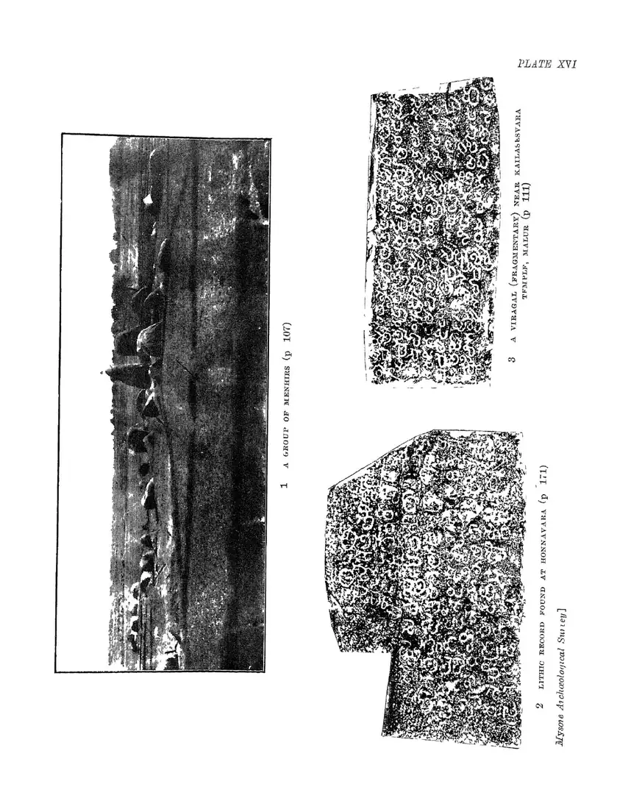
- 1 A GROUP OF MENHIRS (p 107) 2 LITHIC RECORD FOUND AT HONNAVARA (p 171) 3 A VIRAGAL (FRAGMENTARY) NEAR KAILAESVARA TFMPLF, MALFUR (p 111)
Cited in the text: p. 107 ↩
That the cromlechs and cistvaens were burial chambers was clearly established by the occurrence of human skeletons in nearly every one of them. Only one fractional burial was noticed It appeared to be that of a boy whose disconnected skull was found placed erect on his chest A few cases were of multiple burials, a number of corpses being packed into single chambers One of these contained as many as four full grown men's skeletons with some bits of iron weapons. They might have been soldiers killed in a skirmish and buried together In one cist a husband lay on his
The burials back with his leg bones folded in padmasana as in modern South Indian burials, and his wife lay to his left on her right side with her arms embracing him. This looked like a case of 'sati'. A sword blade was recovered close to the man's skeleton. In another cist the skeleton lay slightly turned to the right with a battle axe by its side and a large number of pots around it. In still another cist, one hand of the corpse was placed on the mouth of a pot. In nearly all the cases, the head of the corpse was to the north or north-west and the feet towards the south or south-east facing the hole in the wall slab.
An attempt was made to recover some of the skeletons but many of the thinner bones and especially the skull bones which had become soaked in moisture percolating from the canals and rice-fields had become exceedingly buttle and went to powder even with the lightest touch. Since no arrangement had been made for recovering these skeletons by the shellacing process, photographs of the skeletons were taken as far as possible in situ and they were once again covered over with earth. The weapons found with the corpses and most of the pottery were, however, collected, often along with the decayed contents. The pottery generally consisted of coloured ware painted red and polished or more often richly polished blackware. In two burials a number of pots, each with three short legs, were collected though these pots were much smaller than the footed pots found in some other prehistoric sites near Bangalore and Kōlāi, and exhibited in the Government Museum, Bangalore. In one case only a largish redware pot was found with the lattice design painted on it in white. It was clear that a fuller study of the necropolis could yield much more information about the people living in prehistoric Isila in the iron age. No coins or neoliths were found in any of the burials. It was also surmised that a sequence study of prehistoric burials might prove profitable since it looked as if there was almost an evolution in the burials in their shape, size and mode and also in their pottery. It was also clear that wherever a field of cromlechs was found, as in so many places in the Dakhan, a prehistoric dwelling site ought also be found in its proximity.
The provisional conclusions drawn from the study of the prehistory of the Dakhan, as mentioned in the previous paragraphs, may now be stated briefly. The dates mentioned are widely approximate and purely provisional and suggestive.
Conclusions
1 There is evidence to confirm Bruce Foote's conclusion that the Dakhan passed through some stages of lower paleolithic culture parallel to the Chellean, Acheulean and Mousterian epochs of Europe 50,000 to 30,000 years ago and possibly through a stage corresponding to the Magdelanean (c 13000 B C). No stratigraphical study of these cultures has yet been possible.
2 Some time later a microlithic culture spread over the Dakhan using pigmy stone implements along with coarse greyware pottery and shell and bone beads.
This industry is different from the other known mesolithic industries of the world and appears to be parallel to the Campignian and other later mesolithic or early neolithic types of 8000 to 6000 B.C in Europe.
3 In the microlithic period, the art of polishing implements spread over the Dakhan until at last harder stones were polished and shaped into celts, pounders, etc, and the full neolithic period began and flourished (6000 to 4000 B.C?). The characteristic pottery of this time was polished blackware which is found along with coarser types
4. Some time in the neolithic epoch copper and iron appear to have come into use and the copper age possibly flourished for a comparatively short period (about 3000 B.C?) During this time, small quantities of iron appear to have been in use.
5. In the late neolithic period the method of producing large quantities of iron was discovered and its use spread over the Dakhan (About 2500 or 2000 B.C).
6. Very soon the Dakhan entered upon an non age in the earlier part of which stone implements were in use along with iron (About 2000 B.C) Later on, in the full iron age a prehistoric culture of high quality developed (About 1500 to 500 B.C) Polished blackware pottery was popular during a considerable part of the period, then came coloured ware in the shape of tanware and redware Commenced from the period of the blackware and extending to the earlier part of the redware period, the art of ornamenting drinking cups and other vessels with lattice wicker work and plant patterns in dark-red and white was in vogue The cromlechs and other megalithic structures appear to belong to the period extending from the early iron age right on to the Maurya times, and their evolution can now be suggested. (2000 to 200 B.C)
7. Coloured and polished pottery, often red or brown outside and black inside, continued to be used during the epoch which we can definitely assign to the Maurya times. The art of ornamenting with incised designs and relief mouldings commenced about this period and continued during the succeeding Śātavāhana epoch (200 B.C. to 200 A.D)
8. Śātavāhana pottery is characterized by redware, somewhat polished and ornamented, often with varied relief and incise patterns. Wide-mouthed drinking cups and large round bottomed uns became exceedingly common during this period,
9. The existence of civilized town life is traceable from the iron age onward for a comparatively long period of time before we reach the beginnings of history
10. There now remain to be gathered the details of four stages of prehistoric culture in the Dakhan
(a) the lower paleolithic,
(b) the microlithic,
(c) the neolithic, and
(d) a highly civilized, well-established and widely spread iron age civilization which is connected with the Maurya and Śātavāhana epochs at its later end.
Footnotes
p. 75 2 Do BHAVA NAGA—
p. 75 3 Do Obverse Bull walking to right
p. 75 4 Do DEVA NAGA—
p. 75 5 Do GANENDRA NAGA—
p. 75 6 Do Obverse Bull walking to left
p. 76 10 Do Do A H. 715 Do No. 221
p. 76 11 Do MUBARAK SHAH KHILJI—A.H. 716 Do No 225
p. 76 12 Do GHIYASUDDIN TUGHLAQ I—A.H. 721 Do No. 283
p. 76 13 Do MUZAFFAR SHAH II—A.H. 929
p. 85 6 For the agreement see Introduction.
p. 87 1 See Annals, pp 50 52, for the conquests. Excepting Maddur, Chennapatna and Chennarayapatna, the other places are not mentioned in the manuscript. The conquest of Tagadu accomplished in 1626 A D is attributed in the manuscript to the reign of Raja Odeyar. There is no mention in the Annals of the confederacy formed by Bhaara Nayaka and others. The construction of the armoury is attributed to the reign of Kanthinava Narasaraja ( ibid p 79)
p. 88 1 For details see Annals, pp 72 76, the name of Komarayya does not appear
p. 89 1 See the Nañjarāja Yaśassamu—Uāsa (Mysore Oriental Lib Cat No B 999) for a detailed description of this event
p. 89 6 For the conquests in detail see ibud. pp 105ff, and Wilks, op cit pp 101-2. The list of the MSS is very short and it refers only to Gaganagiri and Bangalore in particular
p. 90 4 For details see Annals, p 115, and Wilks, op cit pp 60-61. What became of Komarayya at Trichinopoly is not known
p. 90 5 See Wilks, ibid , and the Annals, pp 114-115 for a graphic account of the war and the stratagem played by Dalvoy Doddayya on this occasion. The Mahrata army sent against Mysore was that of Sivaji (see Sivaji and the Mysore Raj, by Dr M. H. Krishna, Quarterly Journal of the Mythic Society, Vol XXXI, Nos 3 and 4.)
p. 92 6. See Note 3 above
p. 93 4 Ibid
p. 93 5 Ibid
p. 93 6 Ibid
p. 96 4. For the misunderstandings that cropped up in the meanwhile, see ibid. , 85, M.A.R, 1937, p. 89, Wilks, op cit. pp 219 ff
p. 97 3. For details, see M A R 1930, p 85, 1937, pp 89 ff, Wilks, op cit p 233.
p. 97 5. For details, see ibid , pp 86 ff, M A R 1937, pp 96 ff, Wilks, op cit pp. 270 ff.
All plates (12)
Click a plate to go to its place in the text; each plate there has links to the previous and next plate and back to this list.